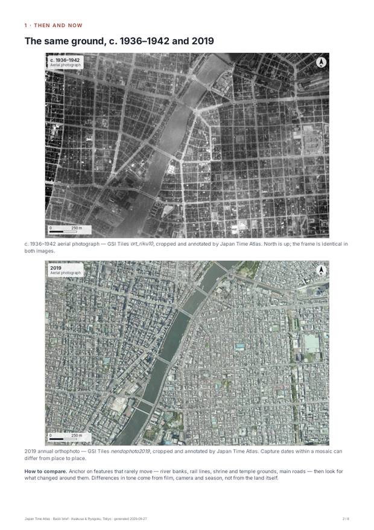
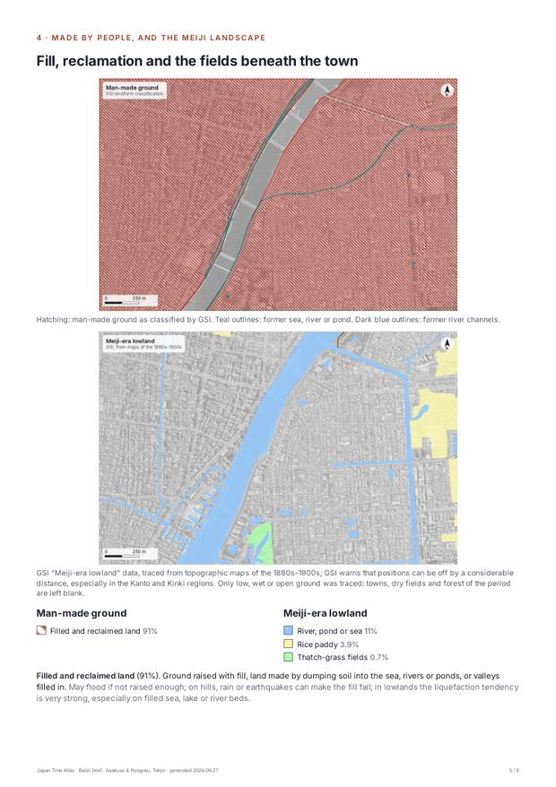
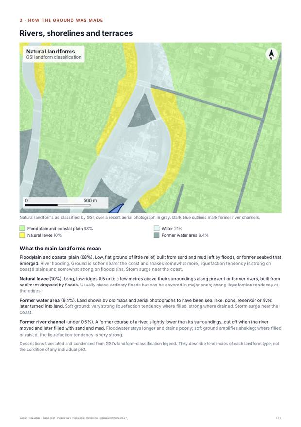
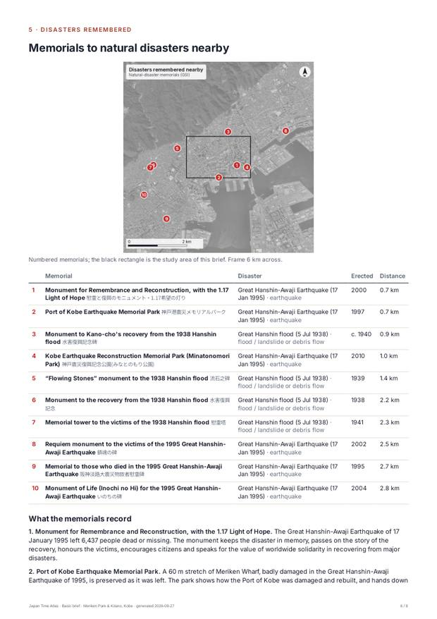
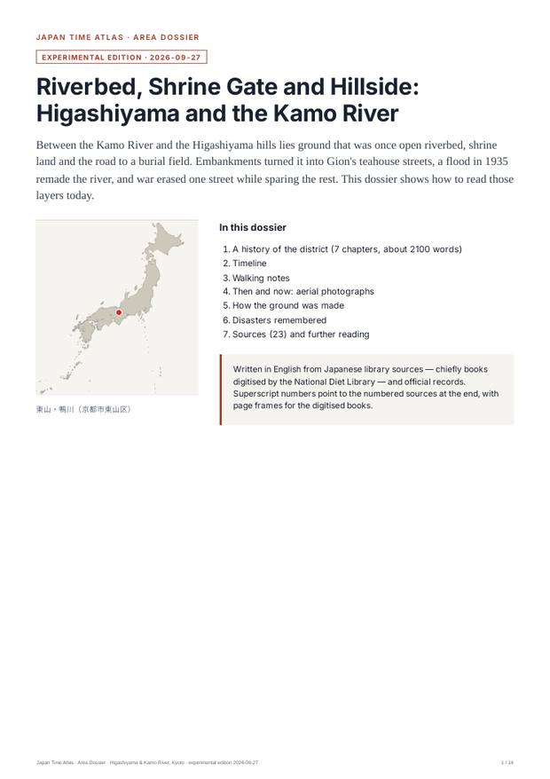
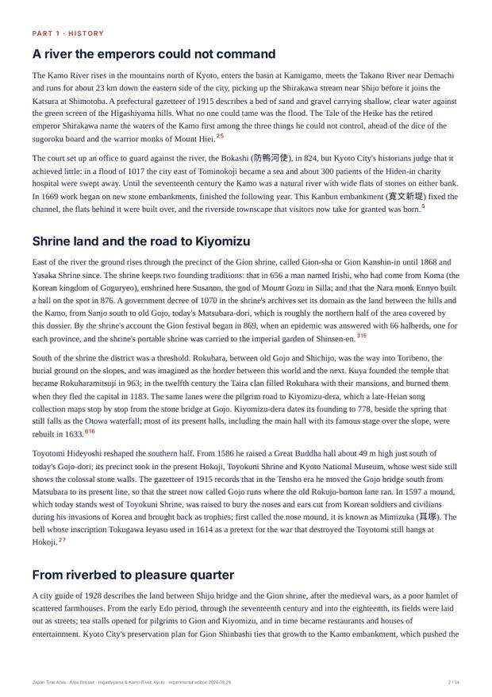

要約
- 誰が買うか。英語の歴史商品の中心は米・英・豪・加です。訪日中に「日本の歴史・伝統文化体験」をした割合は65〜75%で、東アジア（12〜25%）の約3倍、1人当たり支出も最大です。数では韓国・中国・台湾が上回りますが、英語PDFの購買層ではありません（将来の各言語版の対象）。
- 高単価（Deep Research）の母集団は二つ。米国の日系人158.7万人（うちハワイ31.3万人、2020年国勢調査）など海外日系社会と、在日米軍の現役5.5万人とその家族・OBです。周防大島・三尾・金武は祖先の村探し、横須賀・北谷は基地の町の記憶に直結します。
- NDLサーチで「できる範囲」の中身。戦前の町の案内記・郡誌・写真帖などは保護期間満了で誰でも読めます。戦後の市史・町誌の多くは「個人送信」（登録利用者のみ）か紙だけで、ここが人手の調査＝Deep Researchの価値になります。
- データの弱点。沖縄は米国の施政下にあったため地理院の空中写真が1974年以降しかありません（1945年前後は米国国立公文書館の写真で補える見込み）。周防大島・ニセコひらふ・倶知安・三尾・アメリカ村は詳細な地形分類がなく、国土地理院の広域版で代用しました。
- Cloudflareの実アクセスは未反映。このセッションには解析の権限がないため、公式統計で代替しました。読み取り専用トークンがあれば、国別×ページ別の実数で順位を付け直せます（下記）。
1. サイトに来る人の想定（国別）
CF_API_TOKEN として追加し、新しいセッションで node research/lab-07/scripts/cf-audience.cjs を実行します。国別の閲覧数と、各候補地区の場所ページを国ごとに何回開いたかが cf-audience.json に出力され、選定スクリプトがそれを優先して使います。トークンはチャットに貼らないでください。| 市場 | 2025年 訪日客 | 2026年1–8月 | 歴史・伝統文化体験 | 初訪日 | 1人当たり支出 | 英語PDFの適合度* |
|---|---|---|---|---|---|---|
| 韓国 | 9,459,711 | 7,420,300 +21.2% | 12.2% | 16.3% | ¥105,058 | 0.02 |
| 中国 | 9,095,931 | 2,904,600 -56.7% | 21.5% | 44.0% | ¥246,550 | 0.03 |
| 台湾 | 6,763,424 | 5,402,000 +19.8% | 24.9% | 12.1% | ¥184,413 | 0.06 |
| 米国 | 3,306,820 | 2,305,300 +6.1% | 68.2% | 63.2% | ¥339,708 | 0.68 |
| 香港 | 2,517,399 | 1,818,300 +8.7% | 21.7% | 9.4% | ¥226,011 | 0.11 |
| タイ | 1,233,103 | 790,500 +3.4% | 28.3% | 28.8% | ¥205,246 | 0.07 |
| 豪州 | 1,058,396 | 681,200 +3.4% | 65.0% | 54.2% | ¥386,512 | 0.65 |
| シンガポール | 726,251 | 429,000 +10.0% | 41.8% | 24.7% | ¥319,901 | 0.38 |
| カナダ | 688,019 | 469,600 +7.0% | 66.6% | 62.2% | ¥322,489 | 0.67 |
| 英国 | 535,004 | 364,800 +5.8% | 74.7% | 62.1% | ¥391,320 | 0.75 |
出典：JNTO 国籍/月別訪日外客数（2025確定値、2026年1–6月暫定・7–8月推計）、観光庁 インバウンド消費動向調査 2025年年間集計表（参考3・表6-1）ほか。*適合度＝「歴史・伝統文化体験」の割合 × 英語資料の購買しやすさ（米英豪加1.0、星0.9、香0.5、台・タイ0.25、韓・中0.15。後者は編集判断）。
都道府県別の訪問率（%・2025年）
| 都道府県 | 全体 | 米国 | 英国 | 豪州 | カナダ | シンガポール | 香港 | 台湾 | 韓国 | 中国 | タイ |
|---|---|---|---|---|---|---|---|---|---|---|---|
| 東京 | 50.8 | 90.7 | 90.4 | 88.1 | 87.1 | 61.8 | 35.8 | 31.0 | 22.5 | 50.3 | 49.6 |
| 神奈川 | 9.3 | 17.0 | 19.6 | 14.3 | 18.9 | 9.9 | 5.4 | 5.7 | 2.5 | 11.2 | 7.7 |
| 京都 | 29.7 | 44.9 | 53.3 | 49.9 | 48.7 | 26.1 | 15.6 | 15.4 | 12.4 | 38.9 | 20.4 |
| 大阪 | 41.3 | 44.7 | 52.5 | 61.0 | 51.4 | 38.7 | 28.5 | 23.7 | 28.8 | 57.3 | 30.8 |
| 広島 | 4.1 | 8.3 | 19.6 | 17.0 | 11.4 | 1.9 | 1.6 | 1.4 | 0.8 | 0.6 | 0.5 |
| 北海道 | 7.3 | 4.0 | 5.6 | 9.9 | 6.6 | 7.9 | 6.9 | 10.0 | 9.9 | 5.5 | 10.6 |
| 沖縄 | 5.6 | 4.5 | 2.9 | 2.0 | 2.9 | 2.8 | 7.1 | 14.5 | 6.0 | 2.7 | 1.7 |
| 福岡 | 11.0 | 3.4 | 5.4 | 5.1 | 6.3 | 8.3 | 15.5 | 9.7 | 25.2 | 5.0 | 7.9 |
| 山梨 | 8.1 | 8.1 | 12.7 | 13.6 | 11.1 | 11.4 | 4.5 | 4.9 | 0.6 | 11.9 | 17.1 |
| 石川 | 2.2 | 2.4 | 6.8 | 5.5 | 3.7 | 2.0 | 1.6 | 2.6 | 0.2 | 0.8 | 0.5 |
| 長崎 | 1.0 | 1.3 | 1.8 | 2.4 | 1.7 | 1.8 | 1.3 | 1.0 | 1.2 | 0.3 | 0.8 |
| 山口 | 0.5 | 0.6 | 0.3 | 0.2 | 0.1 | 0.2 | 0.4 | 0.4 | 1.3 | 0.2 | 0.2 |
| 和歌山 | 1.2 | 1.1 | 1.7 | 1.4 | 2.0 | 0.8 | 1.8 | 0.9 | 0.1 | 2.0 | 0.6 |
| 長野 | 3.0 | 2.8 | 6.6 | 15.9 | 5.2 | 6.3 | 3.0 | 3.8 | 0.4 | 1.1 | 6.9 |
観光庁 インバウンド消費動向調査 2025年 表6-1（出国時の標本調査・複数回答）。
有料調査の母集団
- 米国：158万6,652人（「日本人」単独または他の人種との組合せ、2020年国勢調査）。うちハワイ州31万2,668人＝州人口の21.5%
- カナダ：12万9,430人（民族的・文化的出自「日本」、2021年国勢調査）
- ブラジル約270万人・ペルー約20万人（外務省「海外日系人数推計」2023年。JICA資料経由）、世界計約500万人
- 在日米軍の現役：54,891人（米国防人員データセンター、2026年3月31日）。横須賀の支援対象人口は約26,000人、嘉手納の米国人は約18,000人（米国防総省 Military OneSource）。
- 移民の出身県（1885–1972年）：広島109,893・沖縄89,424・熊本76,802・山口57,837・福岡57,684・和歌山32,853（広島県資料、海外移住資料館の採用値）。
国ごとの「この場所」の根拠
- 米国：代々木公園は陸軍練兵場→米軍宿舎ワシントンハイツ→東京五輪選手村→公園と変わった。ペリーは1853年に久里浜へ上陸。米国人の神奈川訪問率17.0%（全体9.3%）。外国人宿泊に占める米国の割合は山口（岩国）14.8%、沖縄11.7%、青森（三沢）7.9%。
- 英国：グラバー（1859年来日）の旧グラバー住宅は現存最古の木造洋風建築。英国人の広島訪問率19.6%（全体4.1%）、神奈川19.6%。
- 豪州：倶知安町（ニセコ）の2025年度外国人宿泊は89.9万人泊で過去最高、豪州が首位の16万6,822人泊。豪州人の長野訪問率15.9%（白馬）。
- カナダ：1886年にカナダ人宣教師ショーが軽井沢を避暑地として紹介。三尾（和歌山）からスティーブストンへの移民（加奈陀三尾村人会は1900年150人→1936年763人）。
- シンガポール：長野・新潟・北海道に偏る雪・自然志向。歴史・伝統文化体験41.8%は東アジアより高い。
- 香港：リピーター90.6%。宿泊の16.4%が九州（全市場7.8%）、10.4%が北海道。
- 台湾：石川県の外国人宿泊で首位（32.4万人泊）。金沢出身の八田與一は台湾の烏山頭ダム・嘉南大圳を建設。沖縄訪問率14.5%。
- 韓国：福岡訪問率25.2%（全体11.0%）。2025年の対馬・比田勝港からの韓国人入国は22万6,102人（同港外国人の99%）。
- 中国：大阪57.3%・東京50.3%・京都38.9%。魯迅（仙台）や長崎の唐人屋敷は史実の結びつきがあるが、現在の訪問率は低い（宮城0.6%・長崎0.3%）。
- タイ：山梨訪問率17.1%（全体8.1%）。隣の富士河口湖町の外国人宿泊でタイは9.8%（全国比の約3.6倍）。
2. 20地区の選定
36候補のそれぞれについて、①需要（2025年の訪日客数 × 英語PDFの適合度 × 各国の関心度0〜3）、②データの揃い具合（最古の空中写真・旧河道や埋立地の割合・災害伝承碑・NDLの公開図書）、③有料調査への結びつき（移民のルーツ・基地・占領期・居留地など）を点数化しました（45:30:25）。そのうえで、
- 各国の旅行者が特に選ぶ「シグネチャー地区」を1〜2か所ずつ確保（訪問率・宿泊統計・歴史的な結びつきの根拠つき）
- Deep Researchの買い手がいる「移民のルーツ」3地区・「基地の町」3地区を確保
- Basicの見本として災害伝承碑が最も多い2地区（浅草・両国15基、神戸10基）を確保
- 残りを総合点順で補充
| 点 | 地区 | 関心の強い国（★=最上位） | 選定理由 | 分類 | 最古の写真 | 旧河道・埋立など | 伝承碑3km | NDL書誌 |
|---|---|---|---|---|---|---|---|---|
| 0.89 | 浅草・両国（東京都台東区・墨田区） Asakusa & Ryogoku, Tokyo | 米国★英国★豪州★カナダ★シンガポール★香港★台湾★中国★タイ★韓国 | Basicの見本：3km圏の災害伝承碑15基 | 都市観光 | 1936-42 | 旧水部38% 盛土・埋立91% | 15 | 3,554 |
| 0.83 | 平和記念公園・旧中島地区（広島市中区） Peace Park (Nakajima), Hiroshima | 米国★英国★豪州★カナダ★シンガポール | 総合点で選定 | 都市観光・戦争の記憶 | 1961-69 | 旧水部9.3% 盛土・埋立2.9% 干拓地6.5% | 1 | 1,275 |
| 0.82 | 原宿・代々木（東京都渋谷区） Harajuku & Yoyogi (Washington Heights), Tokyo | 米国★英国豪州カナダシンガポール香港台湾韓国中国タイ | 総合点で選定 | 占領期・都市観光 | 1936-42 | 盛土・埋立20% | 1 | 1,708 |
| 0.78 | 東山・鴨川（京都市東山区） Higashiyama & Kamo River, Kyoto | 米国★英国★豪州★カナダ★シンガポール★中国★香港台湾韓国タイ | 総合点で選定 | 都市観光 | 1945-50 | — | 1 | 3,782 |
| 0.76 | 難波・道頓堀（大阪市中央区・浪速区） Namba & Dotonbori canals, Osaka | 豪州★カナダ★シンガポール★香港★台湾★韓国★中国★タイ★米国英国 | 韓国：旅行者の28.8%が大阪を訪問 中国：旅行者の57.3%が大阪を訪問 | 都市観光・災害伝承 | 1936-42 | — | 4 | 2,289 |
| 0.74 | 関内・山下町（横浜市中区） Kannai & Yamashita, Yokohama | 英国★米国豪州カナダ中国 | 英国：英国人の19.6%が神奈川を訪問。居留地と外国人墓地 中国：中華街。神奈川の訪問率11.2% | 外国人居留地・都市観光 | 1945-50 | 旧水部57% 盛土・埋立54% | 1 | 2,119 |
| 0.71 | 横須賀（神奈川県横須賀市） Yokosuka (naval port) | 米国★ | 米国：横須賀基地の支援対象人口は約2.6万人。ペリーの久里浜上陸 | 基地の町・占領期 | 1945-50 | 旧水部31% 盛土・埋立45% | 2 | 3,178 |
| 0.65 | 周防大島（山口県周防大島町） Suo-Oshima: Nishiyashiro and the Hawaii emigrant villages | 米国★ | 米国（ハワイ）：1885年の第1回官約移民944人の約3割が大島郡出身 | 移民のルーツ | 1961-69 | — | 3 | 1,399 |
| 0.60 | メリケンパーク・北野（神戸市中央区） Meriken Park & Kitano, Kobe | 英国香港中国 | Basicの見本：3km圏の災害伝承碑10基 | 外国人居留地・災害伝承・都市観光 | 1945-50 | 盛土・埋立29% | 10 | 2,398 |
| 0.58 | 出島・新地・南山手（長崎市） Dejima, Chinatown & Minamiyamate, Nagasaki | 英国韓国 | 英国：グラバーと現存最古の木造洋風建築、出島 | 外国人居留地・都市観光・戦争の記憶 | 1961-69 | 旧水部11% 盛土・埋立16% | 3 | 2,289 |
| 0.58 | ニセコひらふ・倶知安 Niseko Hirafu & Kutchan | 豪州★香港シンガポール米国 | 豪州：倶知安町の外国人宿泊で首位（2025年度16.7万人泊） シンガポール：倶知安町の外国人宿泊で3位（10.3万人泊） | 不動産・リゾート・火山 | 1974-78 | — | 0 | 3,540 |
| 0.58 | 富士吉田（新倉山・上吉田） Fujiyoshida (Chureito Pagoda & pilgrim town) | タイ★シンガポール中国豪州英国カナダ米国台湾香港 | シンガポール：旅行者の11.4%が山梨を訪問 タイ：旅行者の17.1%が山梨を訪問（特化係数3.1） | 都市観光・火山 | 1974-78 | 盛土・埋立1.5% | 1 | 2,078 |
| 0.58 | 北谷・嘉手納（沖縄県） Chatan & Kadena (Mihama / Hamby Airfield), Okinawa | 台湾★米国香港韓国 | 台湾：旅行者の14.5%が沖縄を訪問 | 基地の町・占領期 | 1974-78 | 旧水部17% 盛土・埋立25% | 0 | 2,428 |
| 0.57 | 金武町（沖縄県） Kin, Okinawa (emigration pioneer town & Camp Hansen) | 米国★ | 移民のルーツ枠：沖縄初の集団移民（1900年ハワイ着）26人中10人が金武出身 | 移民のルーツ・基地の町 | 1974-78 | 盛土・埋立7.5% | 0 | 1,761 |
| 0.56 | 呉（呉市中央） Kure (naval arsenal & BCOF headquarters) | 豪州★英国 | 豪州・英国：豪州主導の英連邦占領軍が呉に司令部 | 占領期・基地の町・戦争の記憶 | 1961-69 | 旧水部20% 盛土・埋立20% | 3 | 2,593 |
| 0.55 | 三尾・アメリカ村（和歌山県美浜町） Mio, the “America Village” (emigration to Canada) | カナダ★ | カナダ：1888年に工野儀兵衛が渡加、三尾の人々がスティーブストンの鮭漁を担う | 移民のルーツ | 1961-69 | — | 0 | 1,020 |
| 0.54 | 札幌都心（時計台・創成川） Central Sapporo (Clock Tower & Sosei River) | 豪州シンガポール香港台湾韓国タイ | タイ：旅行者の10.6%が北海道を訪問 | 都市観光 | 1945-50 | 旧河道3.1% | 0 | 3,810 |
| 0.50 | 元町・ベイエリア（函館市） Motomachi & the Bay, Hakodate | 台湾香港 | 香港：宿泊の10.4%が北海道 | 外国人居留地・都市観光・災害伝承 | 1961-69 | 旧水部10% 盛土・埋立10% | 0 | 3,984 |
| 0.50 | 博多（福岡市博多区） Hakata old town, Fukuoka | 韓国★香港★台湾 | 香港：旅行者の15.5%が福岡を訪問、宿泊の16.4%が九州 韓国：旅行者の25.2%が福岡を訪問 | 都市観光 | 1945-50 | 盛土・埋立16% | 0 | 2,453 |
| 0.49 | 金沢城下（金沢市） Kanazawa castle town | 台湾★英国豪州 | 台湾：石川県の外国人宿泊で首位。八田與一の出身地 | 都市観光 | 1961-69 | — | 0 | 3,328 |
点数・関心度・根拠は research/lab-07/districts.json と scripts/select.py。関心度は観光庁の都道府県別訪問率、宿泊旅行統計、自治体統計、歴史的な結びつき（公式資料）に基づく編集判断です。
次点（入れ替え候補）
- 鎌倉（長谷・由比ガ浜）（0.67）英語圏の関心は高い（神奈川の訪問率 英19.6%・米17.0%）が、3km圏の伝承碑が1基でBasicの見本として弱い。次点1位。
- 岩国（川下・基地周辺）（0.60）米国の宿泊シェア14.8%（山口）。基地の町は横須賀・北谷・金武で代表させた。
- 佐世保（長崎県佐世保市）（0.57）海軍の町。基地人口の公式数値なし。横須賀で代表させた。
- 福生・横田基地周辺（0.54）横田基地の門前町。1945–50年写真なし（1961年以降）。
- 三沢（青森県三沢市）（0.53）三沢基地（約9,200人）。米国の宿泊シェア7.9%（青森）。次の基地枠の候補。
- 首里（那覇市）（0.52）台湾の沖縄訪問率14.5%。沖縄は北谷・金武で代表。1974年以前の写真なし。
- 下田（静岡県下田市）（0.49）ペリー・ハリスの米国史跡。3km圏の伝承碑1基。
- 熊本城下（熊本市中央区）（0.49）香港・台湾の九州志向。熊本地震の伝承。移民送出3位の県だが城下町は「祖先の村」ではない。
3. 国立国会図書館サーチでの調査（20地区）
各地区で、現在と旧来の地名・主題（例：「本所区」「横須賀製鉄所」「布哇 移民 山口」）を6語ずつ設定し、NDLサーチのAPI（SRU）でタイトル・件名・全項目の3通りに検索しました（計266本、1本あたり最大500件取得）。同名の別地域は除外語で落としています。取得した書誌は、デジタル化資料の公開範囲で4つに分けました。
- ネット公開：ログインなしで誰でも閲覧（保護期間満了など）。Area Dossierの根拠に使える。
- 個人送信：NDLの登録利用者だけが閲覧可。市史・町誌の多くがここ。Deep Researchで読む。
- 館内限定・紙のみ：国会図書館や地元の図書館で読む。Deep Researchの現地調査。
さらに、ブラウザ（Chromium）の自動操作で国立国会図書館デジタルコレクションの全文検索を調べ、その内部APIで各地区3本ずつ本文（OCR）を検索しました。約247万点のデジタル化資料の本文が対象で、登録利用者向けの「送信サービス」や館内限定の資料でも、どの本の何コマ目に地名が出てくるかまで分かります（本文や抜粋は保存せず、書名とコマ番号だけを記録）。複数語は60字以内に並ぶものに限りました。
あわせて、NDLラボ（次世代デジタルライブラリー）で保護期間満了図書の目次を検索して地名が出るコマ番号を特定し、レファレンス協同データベースで各地の図書館が過去に受けた調査事例（10,816件ヒット）を、ジャパンサーチで商用利用可の権利表示（CC BY・PDM・CC0など）がある資料（1418件）を集めました。保存したのは書誌・URL・コマ番号・短い目次行だけで、画像や本文は複製していません。
| 地区 | 固有書誌 | ネット公開 | 個人送信 | 館内・紙 | 目次ヒット本 | レファ協 | 商用可 |
|---|---|---|---|---|---|---|---|
| 浅草・両国（東京都台東区・墨田区） | 3,554 | 1,077 | 256 | 2,221 | 333 | 848 | 80 |
| 平和記念公園・旧中島地区（広島市中区） | 1,275 | 187 | 353 | 735 | 152 | 87 | 32 |
| 原宿・代々木（東京都渋谷区） | 1,708 | 150 | 194 | 1,364 | 339 | 124 | 80 |
| 東山・鴨川（京都市東山区） | 3,782 | 559 | 317 | 2,906 | 294 | 637 | 80 |
| 難波・道頓堀（大阪市中央区・浪速区） | 2,289 | 250 | 426 | 1,613 | 286 | 410 | 80 |
| 関内・山下町（横浜市中区） | 2,119 | 740 | 154 | 1,225 | 272 | 223 | 80 |
| 横須賀（神奈川県横須賀市） | 3,178 | 361 | 599 | 2,218 | 227 | 339 | 80 |
| 周防大島（山口県周防大島町） | 1,399 | 131 | 91 | 1,177 | 263 | 103 | 22 |
| メリケンパーク・北野（神戸市中央区） | 2,398 | 479 | 386 | 1,533 | 268 | 114 | 80 |
| 出島・新地・南山手（長崎市） | 2,289 | 166 | 229 | 1,894 | 299 | 125 | 80 |
| ニセコひらふ・倶知安 | 3,540 | 202 | 337 | 3,001 | 356 | 27 | 80 |
| 富士吉田（新倉山・上吉田） | 2,078 | 135 | 231 | 1,712 | 183 | 54 | 72 |
| 北谷・嘉手納（沖縄県） | 2,428 | 125 | 148 | 2,155 | 238 | 1,983 | 80 |
| 金武町（沖縄県） | 1,761 | 109 | 142 | 1,510 | 213 | 84 | 80 |
| 呉（呉市中央） | 2,593 | 468 | 325 | 1,800 | 168 | 308 | 80 |
| 三尾・アメリカ村（和歌山県美浜町） | 1,020 | 50 | 66 | 904 | 136 | 35 | 12 |
| 札幌都心（時計台・創成川） | 3,810 | 500 | 219 | 3,091 | 290 | 1,351 | 80 |
| 元町・ベイエリア（函館市） | 3,984 | 315 | 232 | 3,437 | 219 | 451 | 80 |
| 博多（福岡市博多区） | 2,453 | 177 | 101 | 2,175 | 212 | 388 | 80 |
| 金沢城下（金沢市） | 3,328 | 586 | 173 | 2,569 | 187 | 3,125 | 80 |
浅草・両国（東京都台東区・墨田区） 固有書誌 3,554件 ／ ネット公開 1,077・個人送信 256・館内 11・紙 2,210
| 検索式（NDLサーチSRU） | ヒット |
|---|---|
| title="浅草" | 9,236 |
| subject="浅草" | 2,119 |
| anywhere="浅草" | 24,842 |
| anywhere="本所" AND anywhere="両国" | 319 |
| title="隅田川" | 2,791 |
| subject="隅田川" | 362 |
| anywhere="隅田川" | 7,214 |
| anywhere="横網" AND anywhere="被服廠" | 15 |
| title="浅草区" | 250 |
| subject="浅草区" | 39 |
| anywhere="浅草区" | 916 |
| title="本所区" | 184 |
| subject="本所区" | 16 |
| anywhere="本所区" | 710 |
ログインなしで読める資料（関連度上位）
- 東都名所 隅田川全図雪中景 (1832・ネット公開)
- 東都名所 隅田川全図雪中景 (1832・ネット公開)
- 東都名所 隅田川全図雪中景 (1832・ネット公開)
- 江戸名所 浅草東本願寺の図 (1847・ネット公開)
- 浅草鳥越堀田原辺絵図 : 浅草鳥越堀田原図 (1850・ネット公開)
- 名所江戸百景 浅草川首尾の松御厩河岸 (1856・ネット公開)
- 江戸名所 隅田川まん花 (1858・ネット公開)
- 江戸名所道化尽 四十一 浅草御厩川岸 (1860・ネット公開)
- 東都浅草絵図 : 浅草御蔵前辺図 (1861・ネット公開)
- （東京名所）向嶋隅田川上流 (1868・ネット公開)
- 改正区郡東京切絵図 浅草区 壱図 : 東京切絵図浅草区 其一 十八号 (1880・ネット公開)
- 改正区郡東京切絵図 本所区 : 東京切絵図本所区 二十号 (1880・ネット公開)
デジタルコレクション全文検索（本文OCR・コマ番号つき）
- 浅草区 震災（近接60字）：本文ヒット 1,528件（ネット公開 356・送信 830・館内 342）
- 地震災害を考える : 都市研究センターの震災予防研究 (1983・個人送信・18コマ)
- 埼玉県北足立郡大正震災誌 (1925・ネット公開・217コマ)
- 被服廠跡 : 東京震災記念事業協会事業報告 (1932・ネット公開・57コマ)
- 大正震災志写真帖 (1926・ネット公開・17コマ)
- 大正大震災の回顧と其の復興 下巻 (1933・ネット公開・689コマ)
- 東京府大正震災誌 (1974・個人送信・284コマ)
- 東京府大正震災誌 (1971・個人送信・126,285コマ)
- 東京の震災復興橋詰広場に関する都市計画史的研究 (2000・個人送信・57,81,85,93コマ)
- 被服廠 横網（近接60字）：本文ヒット 1,277件（ネット公開 189・送信 649・館内 439）
- 被服廠跡 (1934・ネット公開・26,34コマ)
- 被服廠跡 : 東京震災記念事業協会事業報告 (1932・ネット公開・2,3,18,46,52,67コマ)
- 関東大震災調査報告 気象篇（藤原咲平） (1924・個人送信・22,78コマ)
- 大地は震ふ (1924・ネット公開・83コマ)
- 復活への犠牲 : 二葉のかたみ (1924・個人送信・65コマ)
- 大正大震災紀念書惨状と惨話 (1923・個人送信・51コマ)
- すみだ川気まま絵図 (1985・個人送信・3,37コマ)
- 東京府社会事業協会報 (22) (1924-04・個人送信・30コマ)
- 本所区 埋立（近接60字）：本文ヒット 503件（ネット公開 261・送信 179・館内 63）
目次で地名が見つかった公開図書（NDLラボ・コマ番号つき）
- 浅草区誌 (1914・38コマ)：第二章 往時の淺草地方 / 4
- 浅草女裏譚 (1930・9コマ)：第一 淺草女の變遷/1
- 浅草経済学 (1933・16コマ)：第一 經濟學的に觀た淺草の將來/1
- 浅草底流記 (1930・17コマ)：1・淺草朝から夜中まで/6
- 本所区勢要覧 (1935・7コマ)：第一編 本所區勢ノ槪說/5
- 本所区勢要覧 (1919)：-大正六年度本所區ノ市使用料及手數料十九萬五千二百三十二圓ニシテ其全市總額ニ對スル割合ハ大正四年度ニ於テ九分一厘ニ當レリ地租-大正六年一月一
- 妙心寺派法令全集 (1930・13コマ)：第五章 宗務本所、宗務所及宗務支所/5
- 妙心寺派法令全集 (1938・16コマ)：第五章 宗務本所、宗務所及宗務支所/5
Deep Research向け：個人送信・紙の郷土史
- 浅草区誌 上巻 上巻 (1968・個人送信)
- 浅草区誌 下巻 下巻 (1968・個人送信)
- 川端康成「住吉」3部作と「隅田川」--「源氏物語」の構造から (1992・個人送信)
- 『江戸名所隅田川<絵解き案内>』を読む (1998・個人送信)
- 江戸名所図会 別巻 別巻 (1967・個人送信)
- 岩波写真文庫 19 19 (1950・個人送信)
- 大日本教育会雑誌 (68) (1887・個人送信)
- 頴才新誌 (1027) (1897・個人送信)
- 郷土 (3) (1931・個人送信)
- 浮世絵芸術 = Ukiyo-e art : 国際浮世絵学会会誌 (18) (1968・個人送信)
- 浅草新誌 : 初篇 (1887・紙のみ)
- 浅草区誌 上巻 上巻 (1968・紙のみ)
- 浅草区誌 下巻 下巻 (1968・紙のみ)
- 浅草人情地図 (1978・紙のみ)
- 浅草の百年 : 神谷バーと浅草の人々 (1980・紙のみ)
- 隅田川の今昔 (1987・紙のみ)
- 浅草の百年 : 神谷バーと浅草の人びと (1989・紙のみ)
- 隅田川絵図 : 現代版隅田川両岸絵図、葛飾北斎・隅田川両岸一覧 = Illustrated map of the Sumida River (1990・紙のみ)
レファレンス協同データベース（図書館の調査事例）
- 浅草にあった凌雲閣（浅草十二階）という建物について教えてほしい。 （東京都江戸東京博物館 図書室）
- 浅草の名前の由来 （台東区立中央図書館）
- 両国 中村楼（料亭） はどこにあったか （台東区立中央図書館）
- 明治期の建築物である、紅葉館（芝）及び中村楼（東両国）の写真や図面が掲載されている資料はないか。 （東京都立中央図書館）
- 隅田川焼について知りたい。 （成田市立図書館）
- 隅田川の桜はいつ、だれが植えたのか。 （東京都江戸東京博物館 図書室）
- 東京都慰霊堂（旧震災記念堂）の設計図はあるか。 （東京都立中央図書館）
ジャパンサーチ：商用利用可の権利表示がある資料（リンクのみ）
平和記念公園・旧中島地区（広島市中区） 固有書誌 1,275件 ／ ネット公開 187・個人送信 353・館内 4・紙 731
| 検索式（NDLサーチSRU） | ヒット |
|---|---|
| title="中島本町" | 12 |
| subject="中島本町" | 0 |
| anywhere="中島本町" | 38 |
| anywhere="材木町" AND anywhere="広島" | 18 |
| title="猿楽町" | 45 |
| subject="猿楽町" | 13 |
| anywhere="猿楽町" | 394 |
| anywhere="広島" AND anywhere="中島" | 5,445 |
| title="元安川" | 7 |
| subject="元安川" | 0 |
| anywhere="元安川" | 45 |
| anywhere="爆心地" AND anywhere="広島" | 307 |
ログインなしで読める資料（関連度上位）
- 菊池俊吉写真集 ハ0001 爆心地附近。 (・ネット公開)
- 菊池俊吉写真集 ハ0002 爆心地附近。 (・ネット公開)
- 菊池俊吉写真集 ハ0003 爆心地附近。 (・ネット公開)
- 菊池俊吉写真集 ハ0539 爆心地の店． (・ネット公開)
- 菊池俊吉写真集 ハ0540 爆心地の店． (・ネット公開)
- 菊池俊吉写真集 ハ0541 爆心地の店． (・ネット公開)
- 菊池俊吉写真集 ハ0542 爆心地の店． (・ネット公開)
- 菊池俊吉写真集 ハ0543 爆心地の店． (・ネット公開)
- 菊池俊吉写真集 ハ0544 爆心地の店． (・ネット公開)
- 菊池俊吉写真集 ハ0545 爆心地の店． (・ネット公開)
- 菊池俊吉写真集 ハ0546 爆心地の店． (・ネット公開)
- 菊池俊吉写真集 ハ0547 爆心地の店． (・ネット公開)
デジタルコレクション全文検索（本文OCR・コマ番号つき）
- 中島本町：本文ヒット 6,916件（ネット公開 2,456・送信 3,175・館内 1,285）
- 芸備地方史研究 (72) (1968-06・館内限定・0,9,10,11コマ)
- がんす横丁 第2巻 (1973・個人送信・5,13,27,56,82,87コマ)
- 爆心 : 中島の生と死 (1986・個人送信・2,5,7,8,13,21コマ)
- 鋼鉄の女たち : 聞き書き昭和20年代の室蘭 (1994・個人送信・5,135コマ)
- 原爆モニュメント物語 (1984・個人送信・6,7,14,15,17,21コマ)
- 老年医学への道 (1996・館内限定・3,6,8コマ)
- きみはヒロシマを見たか : 広島原爆資料館 (1982・個人送信・4,12,13,16,23,24コマ)
- 歴史地理教育 (374) (1984-11・個人送信・2,38コマ)
- 材木町 広島（近接60字）：本文ヒット 4,953件（ネット公開 1,290・送信 2,540・館内 1,123）
- 猿楽町 広島（近接60字）：本文ヒット 8,938件（ネット公開 1,823・送信 3,829・館内 3,286）
- がんす横丁 第2巻 (1973・個人送信・5,26,29,79,80,84コマ)
- 写真で見る広島あのころ (1977・個人送信・3,7,13コマ)
- 広島市地名索引 (1982・個人送信・9,22,63コマ)
- 広島史話伝説 第3輯 (広島城下・周辺の巻,(続)己斐の巻) (1969・個人送信・11,27,54コマ)
- 広島商工案内 大正14年版 (1925・ネット公開・62,173,180,277,284,289コマ)
- 広島高等師範学校一覧 大正3年度 (1921・ネット公開・174コマ)
- 広島城の堀 (1994・個人送信・4,12コマ)
- 広島商工案内 昭和4年 (1929・ネット公開・78,79,80,296コマ)
目次で地名が見つかった公開図書（NDLラボ・コマ番号つき）
- 広島市商工人名録 (1918)：〇八六月樓一七〇三一三〇四京鐵橋砲軒一〇九一樓ハ一〇三七鐵樓九五八樓月九八六お七樓(0.0舘三重八中鐵島本砲町町廣改鐵西鐵地砲砲方町町町三山
- 広島繁昌記 : 附・厳島 (1900)：大松甚七製造店久保德太郞津本町町中本島田佐太郞田家本支直廣九十六店一時計商〓酒醬油類卸商仲属〓和洋物品商舶來雜貨商洋反物商物品附修覆商中島本
- 広島案内 (1925)：(的場筋)段原町志磨屋井新天地東口横疊屋町通中島本町水阿波屋代理店田野永中島本町中島本町材尾川木道場入工丁〓町町町堀堀町町香やのま町向屋胡子
- 広島商工人名録 (1937)：·支那·料理·折詰·辨當理業業業種目小製造、賣別卸收益稅營(0) (0)一〇二112三一八二八三三三円業公八兌允た〓次奏奏奏查축to七二七二
- 広島商工人名録 (1937)：號種目轉轉車車種自目轉小小小小小小小小小小小小小卸下小小卸小卸小ㅎㅎ〓三壹西歯云〓〓元云三二臺臺를三豐豐鐵砲屋町胡町猿猴橋町己斐町字品町天滿
- 広島商工人名録 (1941)：袋物行品李同上同上同上同上·鞄·洋傘鞄·旅行具鞄·行李·同上同上財布·鞄小ハンドパツク鞄修理目責營一八·〇〇一四·二五四七·六四一三四·二五
- 広島県工業家総覧 (1928)：〓泰省與太之三衞兵之太太郞一-(181)一章助エ一平造子郞門平衞助晁郞吉八藏三吉郞(180)-郞同同同同同同同家和洋家具具同同洋家同同同家同
- 広島市史 (1925・4コマ)：第一 毛利氏時代広島城下絵図 /
Deep Research向け：個人送信・紙の郷土史
- 新井市史料目録 第1集 第1集 (1966・個人送信)
- 多摩川 1985 資料編 1985 資料編 (1985・個人送信)
- 医史料 (6) (1895・個人送信)
- 印刷雑誌 = Japan printer 24(12) (1941・個人送信)
- 海員 = The seamen : 全日本海員組合機関誌 13(5)(141) (1961・個人送信)
- 海員 = The seamen : 全日本海員組合機関誌 16(4)(176) (1964・個人送信)
- 製菓製パン = The journal of baking and confection : 全日本菓業新聞連盟加盟誌 41(6)(499) (1975・個人送信)
- 看護 = Journal of the Japanese Nursing Association : 日本看護協会機関誌 28(9) (1976・個人送信)
- 看護学雑誌 = The Japanese journal of nursing 45(1) (1981・個人送信)
- 医用電子と生体工学 : 日本ME学会雑誌論文号 = Japanese journal of medical electronics and biological 20特別号 (1982・個人送信)
- 写真で見る広島あのころ (1977・紙のみ)
- 原爆投下直前の広島市市街地の数値地図作成 (2005・紙のみ)
- 広島原爆関連資料のGISデータ構築 (2010・紙のみ)
- 爆心地の写真 : 1945-1952 (2014・紙のみ)
- 爆心直下の町－細工町・猿楽町 : 広島平和記念資料館令和４年度第１回企画展 (2022・紙のみ)
- アルス新聞 大正１４年１月２０日［広島文学資料］ (1925・紙のみ)
- 写真で見る広島あのころ (1979・紙のみ)
- 環境保全に関し講じる措置を記載した図書:(元安川下流左岸埋立事業) 付属資料 (1984・紙のみ)
レファレンス協同データベース（図書館の調査事例）
- 昭和４年ごろ廃行になった幸徳銀行について知りたい。 今の西条駅の目の前にあったらしい。広島県賀茂郡西条町または高屋町だと思う。 （広島県立図書館）
- 広島藩の本川周辺には船宿が多かったか。 （広島県立図書館）
- 1829年頃、佐賀藩の米を積んだ千石船が大阪に行っていたか知りたい。また、その航路について紹介されている本はないか。 （佐賀県立図書館）
- 江戸時代，福山城下の木綿橋付近で取引されていたものが知りたい （福山市中央図書館）
- 明治から大正に神田猿楽町に｢日本工科｣という学校があったかどうかを探している。 （国立教育政策研究所教育図書館）
- 起廃病院が設置された場所・土地は、起廃病院ができる前はどのような土地利用がされていたか。 （国立ハンセン病資料館図書室）
- 歌手中島みゆきさんが「1976年11月4日の広島大学学園祭に出演し、 またその時の前座は広島出身の歌手浜田省吾さんが務めた」 という話を耳にしました。 その真偽を確かめたいと思っ （広島県立図書館）
- 広島に広島電信局が完成した時の記録 （広島県立図書館）
ジャパンサーチ：商用利用可の権利表示がある資料（リンクのみ）
- 相生丁字橋開通祝賀記念主催広島市中島本町 （広島市公文書館・ccby）
- 白羊羹（広告・備中中嶋本町宮崎屋） （岡山市立図書館・ccby）
- 広島元安橋 （広島市公文書館・ccby）
- 日本地誌略 （libnier・pdm）
- ［書名］藝備孝義伝/げいびこうぎでん （nihu_nij・ccbysa）
- 地部二十七 2 安藝國 地勢|道路 649ページ （nihu_nij・ccbysa）
原宿・代々木（東京都渋谷区） 固有書誌 1,708件 ／ ネット公開 150・個人送信 194・館内 1・紙 1,363
| 検索式（NDLサーチSRU） | ヒット |
|---|---|
| title="原宿" | 1,783 |
| subject="原宿" | 96 |
| anywhere="原宿" | 4,724 |
| anywhere="代々木" AND anywhere="ワシントンハイツ" | 6 |
| title="穏田" | 19 |
| subject="穏田" | 0 |
| anywhere="穏田" | 94 |
| title="千駄ヶ谷" | 307 |
| subject="千駄ヶ谷" | 4 |
| anywhere="千駄ヶ谷" | 808 |
| title="代々木練兵場" | 6 |
| subject="代々木練兵場" | 1 |
| anywhere="代々木練兵場" | 41 |
| anywhere="渋谷区" AND anywhere="原宿" | 133 |
ログインなしで読める資料（関連度上位）
- 台ケ原宿絵図 (1796・ネット公開)
- 台ケ原宿定助大助村石高道法書付 (1689・ネット公開)
- 台ケ原宿酉年宿入用書上帳 (1790・ネット公開)
- 台ケ原宿駄賃諸掛り受取覚 (1794・ネット公開)
- 台ケ原宿鍛冶職歩行役隨役金出入済口証文 (1798・ネット公開)
- 台ケ原宿定書 (1805・ネット公開)
- 台ケ原宿助郷帳 (1808・ネット公開)
- 台ケ原宿旅篭屋一件済口証文 (1811・ネット公開)
- 勤め兼ねる栗原宿人馬請負一札 (1851・ネット公開)
- 台ケ原宿駄賃并人足賃定書 (1864・ネット公開)
- 台ケ原宿諸書畄綴 (1871・ネット公開)
- 空間的自己相関を用いた用途混合パターン分析 - ニューヨーク市 SoHo地区と原宿・表参道を例に - (2013・ネット公開)
デジタルコレクション全文検索（本文OCR・コマ番号つき）
- ワシントンハイツ 代々木（近接60字）：本文ヒット 2,011件（ネット公開 22・送信 1,072・館内 917）
- ワシントンハイツ横丁物語 (1993・館内限定・2,3,8,11,67,84コマ)
- 代々木公園 (1981・個人送信・2,3,10,13,15,16コマ)
- 東京通信 (1954・館内限定・136,138,139,141コマ)
- 国立競技場代々木競技場10年のあゆみ (1974・個人送信・6,13コマ)
- ワシントン・ハイツの追憶 (2017-08-18・ndl_only_no_print_no_simview・0コマ)
- 都市公園 (32) (1963-02・個人送信・2,11コマ)
- 代々木の森に十年 : オリンピック記念青少年総合センター10年史 (1975・個人送信・10,11,40,42コマ)
- 東京オリンピック (21) (1964-01・個人送信・1,11コマ)
- 穏田 原宿（近接60字）：本文ヒット 2,210件（ネット公開 557・送信 1,177・館内 476）
- 原宿 : 1995 (1994・館内限定・7,8,20,27,33,36コマ)
- 原宿1983 (1983・個人送信・6,7,8,9,10,11コマ)
- 原宿物語 (1986・個人送信・51,70,101,102コマ)
- 原宿わんぱく物語 (2000・館内限定・22,60,67,92コマ)
- 原宿ビューテイ・サロン・ホット100 (1998・館内限定・44,47,48,49,54コマ)
- 原宿シャンゼリーゼ商店街 : ファッションタウン分析レポート (1974・個人送信・13コマ)
- 東京市渋谷区地籍図 地籍図 下巻 (1935・個人送信・4,5,12コマ)
- 千駄ケ谷町誌 (1930・個人送信・26,39,40,41,48,51コマ)
- 代々木練兵場：本文ヒット 11,064件（ネット公開 1,102・送信 6,163・館内 3,799）
- 大隊教練 (1912・個人送信・1,2,3,7,166コマ)
- 学校衛生 20(6) (1940-06・個人送信・2コマ)
- 日本航空の回顧 : 初期の実相 (1959・個人送信・3,7,8,18,25,26コマ)
- 東京代々木幡ケ谷沿革名蹟史 (1933・個人送信・6,29,31コマ)
- 答礼使御来朝記念写真帖 中巻 (1922・ネット公開・3,20コマ)
- 写真新報 (5月號)(284) (1922-05・個人送信・1コマ)
- 原宿1983 (1983・個人送信・3,6,7,8,11,14コマ)
- 私の明治・大正・昭和 : 戦争と平和の八十年 (1990・個人送信・3,14,15,22,34,35コマ)
目次で地名が見つかった公開図書（NDLラボ・コマ番号つき）
- 土地概評価 (1922・9コマ)：大字原宿 /
- モスクバの掏摸 (1930・100コマ)：原宿界隈/190
- 静岡県郷土研究 (1936・69コマ)：原宿助鄕制の展開 渡邊龜一/130
- 曽我の家五郎喜劇全集 (1923・94コマ)：一 東海道原宿立場茶屋の場 / 172
- 槐多画集 (1921・36コマ)：代々木の風景（油） /
- 小鳥のささやき : 少女小説 (1914・6コマ)：代々木の家 / 1
- 昭和七年の国史学界 (1933)：郞同宮島幹之助中村直勝宮仲本妻木忠太慶應義塾圖書館重松實男岡田朋治德富猪一郎甫郞式野書院民友社改造社北里〓究所星野書店波岩書店有朋堂毒美書院
- 昭和四年の国史学界 (1930)：と共に新官 號を撰定した事を述べたものである、例によつて多記代々木會同人丸松原羽筑田坂喜大梅淺秋久(終)山本田仁波山本田田野山保二信亨五藤信
Deep Research向け：個人送信・紙の郷土史
- 交通課長日誌(150)警視庁原宿警察署 (1998・個人送信)
- 小田原市史料 上巻 歴史編 上巻 歴史編 (1966・個人送信)
- 江戸名所図会 別巻 別巻 (1967・個人送信)
- 神奈川県史 資料編 9 (近世 6) 本編 資料編 9 (近世 6) 本編 (1974・個人送信)
- 神奈川県史 資料編 9 (近世 6) 付録 資料編 9 (近世 6) 付録 (1974・個人送信)
- 大桑村誌 下巻 下巻 (1988・個人送信)
- 大桑村誌 上巻 上巻 (1988・個人送信)
- 家庭雑誌 5(2) (1906・個人送信)
- 写真新報 (5月號)(284) (1922・個人送信)
- サラリーマン = The salaried man : 経済評論誌 3(2) (1930・個人送信)
- 渋谷区史 (1952・紙のみ)
- 渋谷区史跡散歩 (1979・紙のみ)
- 渋谷区史料集. 第3 (諸家文書) 第3 (諸家文書) (1982・紙のみ)
- 原宿物語 (1986・紙のみ)
- 空から見た世田谷区・渋谷区・目黒区の街と鉄道駅 : 1960年代～80年代 : 朝日新聞社機・読売新聞社機が撮影した空撮写真 (2022・紙のみ)
- 原宿表参道2013水と緑が協生するまちづくり : 商店街振興組合原宿表参道欅会40周年記念誌 (2013・紙のみ)
- 原宿表参道100年先を見据えるまちづくり : 商店街振興組合原宿表参道欅会50周年記念誌 (2025・紙のみ)
- 東京代々木幡ケ谷沿革名蹟史 (1933・紙のみ)
レファレンス協同データベース（図書館の調査事例）
- 東海道の宿場の蒲原宿の地震被害(宝永地震、安政東海地震など)の記録について記載されている本を探しています。 （静岡県立中央図書館）
- 郷原宿から善光寺街道までの昔の地図はあるか （塩尻市立図書館）
- 国立代々木競技場第一体育館の平面図が掲載されている資料があれば紹介してください。 （国立国会図書館（National Diet Library））
- 「日本のラスプーチン」「穏田の神様」などと呼ばれた飯野吉三郎（恵那市岩村町出身）に関する文献を探している。『別冊週刊サンケイ』に「穏田の神様行状記」という記事があったそうだが、掲載 （岐阜県図書館）
- 江戸時代の水車について知りたい。 （東京都江戸東京博物館 図書室）
- 昭和20年5月25日の山の手空襲で千駄ヶ谷が焼けている。空襲以前の千駄ヶ谷三丁目の隣組の班別区分が分かる資料はないか。 組員の名前が掲載されている地図や資料があるとなおよい。 （昭和館 図書室）
- 国立競技場の最寄り駅の一つである千駄ヶ谷駅の、東京オリンピックが開催された1964（昭和39）年度と2018（平成30）年度の乗車人数を知りたい。 （国立国会図書館（National Diet Library））
ジャパンサーチ：商用利用可の権利表示がある資料（リンクのみ）
- 東海道五十三次之内／小田原宿 （茅ヶ崎市美術館・ccby）
- 仮名手本忠臣蔵八段目 （tnm・ccby）
- 仮名手本忠臣蔵八段目 （tnm・ccby）
- 仮名手本忠臣蔵八段目 （tnm・ccby）
- 御馬献上行列図 （tnm・ccby）
- 白隠筆達磨図 （keiokemco・ccby）
東山・鴨川（京都市東山区） 固有書誌 3,782件 ／ ネット公開 559・個人送信 317・館内 5・紙 2,901
| 検索式（NDLサーチSRU） | ヒット |
|---|---|
| anywhere="東山" AND anywhere="京都" | 6,107 |
| title="祇園" | 5,580 |
| subject="祇園" | 933 |
| anywhere="祇園" | 13,603 |
| title="清水寺" | 924 |
| subject="清水寺" | 225 |
| anywhere="清水寺" | 2,815 |
| anywhere="鴨川" AND anywhere="洪水" | 112 |
| anywhere="五条" AND anywhere="京都" | 2,268 |
| anywhere="京都" AND anywhere="鴨川" | 1,397 |
ログインなしで読める資料（関連度上位）
- 会津東山温泉 若松市及附近案内 (1926・ネット公開)
- 「鴨川古写真GISデータベース」の構築に向けた現状と課題 (2022・ネット公開)
- 京都の観光資源と巡回モデルコースの立案 (2005・ネット公開)
- 京都盆地東山におけるシイ林の分布拡大過程と林分構造 ESJ52 (2005・ネット公開)
- 鴨川における河川水と地下水間の水・物質循環の解明 (2006・ネット公開)
- 鴨川における河川水と地下水間の水・物質循環の解明 (2007・ネット公開)
- 京都鴨川水系を基軸とした水辺景域の形成と変容に関する研究 (2010・ネット公開)
- 祇園祭郭巨山・孟宗山成立の背景について (2011・ネット公開)
- 祇園梶子試論 : 正親町町子との関連から (2015・ネット公開)
- 「祇園祭デジタル・ミュージアム2020」の構築・公開について (2021・ネット公開)
- 祇園パセリを使ったメニューの開発 (2023・ネット公開)
- 植木神社祇園祭 (・ネット公開)
デジタルコレクション全文検索（本文OCR・コマ番号つき）
- 鴨川 水害 昭和十年（近接60字）：本文ヒット 74件（ネット公開 16・送信 45・館内 13）
- 最近国有鉄道災害記録 (1936・ネット公開・5,6,8,9,15,28コマ)
- 浅山市長と其の事蹟 (1938・個人送信・9,13,14,17,19,20コマ)
- 防災専門図書館所蔵風水害・雪害関係図書目録 (1987・個人送信・3,4,5,6,30,31コマ)
- 水害防止協議会の決議事項に就て (1936・個人送信・1,2,3,4,5,6コマ)
- 浦和市史 第4巻 [2] (近代 史料編 2) (1979・個人送信・13,40,84,139,140,141コマ)
- 京都お天気歳時記 (1987・館内限定・3,4,8,9,48,59コマ)
- 京都 : その地理探訪 (1961・個人送信・3,5,7,8,9,10コマ)
- 水利と土木 11(12) (1938-12・個人送信・6,7,8,10,11,12コマ)
- 清水寺 五条坂（近接60字）：本文ヒット 1,419件（ネット公開 45・送信 657・館内 717）
- 五条坂 (1960・館内限定)
- 清水寺史 第2巻 (通史 下) (1997・館内限定・122,144,147,242,243,372コマ)
- 清水寺史 第3巻 (史料) (2000・館内限定・103コマ)
- 古寺巡礼京都 24 (1978・館内限定・57コマ)
- 五条坂陶工物語 (1982・個人送信・5,6,31,35コマ)
- ガイドブック清水寺 (1996・館内限定・12,24コマ)
- 五条坂陶芸のまち今昔 (1988・館内限定・9,13,15,19,97コマ)
- 五条坂弥生坂物語 : 「現代陶芸」と「大正期插絵」 : 私の展覧会づくり二十年 (1998・館内限定・8,9コマ)
- 祇園 花見小路（近接60字）：本文ヒット 5,460件（ネット公開 327・送信 2,464・館内 2,669）
- 花見小路に降る雪は : 祇園女の恋と意気地 (1985・館内限定・1,13,101,121,134コマ)
- 祇園さん : 祇園町界隈 (1961・個人送信・18,21,24コマ)
- 坂部ぎんさんを探して下さい : scénario1966-80 (1984・館内限定・4,117コマ)
- 祇園と舞妓 (1974・個人送信・6,60,61コマ)
- 祇園十二夜 (1927・個人送信・3,18,45コマ)
- 年刊テレビドラマ代表作選集 1974年版 (1974・個人送信・6,8,69,70コマ)
- 京都花見小路殺人事件 : 長編推理小説 (1988・館内限定・52,54,59コマ)
- 倉本聡テレビドラマ集 1 (うちのホンカン) (1976・館内限定・160コマ)
目次で地名が見つかった公開図書（NDLラボ・コマ番号つき）
- 東山画集 (1924)：福岡富恵東京十八番(W回)護士=踵舞Chd前)圖九十八第25〓3 12 1696 8〓19 IS 4 3品二第國の內の松(藏庵海東中塔寺心妙
- 東山画集 (1924)：る高材木町二百十七番地京都市高倉四條下ル高材木町二百十七番地京都市高倉四條下ル分木町七十六番地京都市三條東山線東入支阪東山書房出版壽吉振替穴
- 東山画集 (1924)：5416-77藝術家が一度本書を繙けば、ものは古今東西を問はず、第八圖第七圖第六圖第五圖第四圖第三圖第二圖第一圖する所以であつて、民の趣味の
- 東山画集 (1924)：416-97發行所東山畫集東山百馬第六書大3房終空氣終東京都港116 14 3こ第十七、八、九圖第第自十十至第十二第三、土土西五、六圖傳郎佐
- 祇園双紙 (1917・5コマ)：祇園双紙 / 1
- 祇園囃子 (1934・7コマ)：祇園囃子/1
- 舞姿 : 祇園画集 (1916・94コマ)：祇園會 / 138
- 祇園 (1913)：この話はな、こないだお客さんにせんど云ふて貰祇園べんかい:ぬ〓〓こうぢへ行きまへう。」
Deep Research向け：個人送信・紙の郷土史
- 京都故事物語 上 上 (1983・個人送信)
- 京都故事物語 下 下 (1983・個人送信)
- 維新史料 佐久間象山手翰,他 佐久間象山手翰,他 (1896・個人送信)
- 淡路国名所図会 巻之四 巻之四 (1934・個人送信)
- 大分県史料 第8 第8 (1958・個人送信)
- 関金町誌 第3集 第3集 (1982・個人送信)
- 宇治拾遺物語 下巻 下巻 (1952・個人送信)
- 頴才新誌 (863) (1894・個人送信)
- 印刷雑誌 5(5) (1895・個人送信)
- 医史料 (3) (1895・個人送信)
- 花洛探勝誌 [総論]: 山城国総論 巻之1: 東山北部 巻之2: 東山南部 巻之3: 北山部 巻之4: 西山部 巻之5: 城南部 [総論]: 山城国総論 (1894・紙のみ)
- 清水寺附近 写真京都叢書No.4 写真京都叢書No.4 (1958・紙のみ)
- 祇園町誌 (1970・紙のみ)
- 鴨川物語 (1986・紙のみ)
- 祇園地図で歩こう : こ・ぼ・れ・話 (2003・紙のみ)
- 祇園地図で歩こう : こ・ぼ・れ・話 : 京の夏が今年もやってきた (2003・紙のみ)
- 祇園地図で歩こう : こ・ぼ・れ・話 : 祇園の年越し編 (2003・紙のみ)
- 御池通界わい今昔マップ 烏丸通～鴨川界わい編 烏丸通～鴨川界わい編 (2005・紙のみ)
レファレンス協同データベース（図書館の調査事例）
- 徳富蘇峰の漢詩「京都東山」の意味が知りたい。 （名古屋市鶴舞中央図書館）
- 円山公園（京都市東山区）のしだれ桜（初代～昭和22(1947)年まで）の写真が見たい。 （京都府立京都学・歴彩館）
- 祇園甲部歌舞練場について知りたい。 （京都市図書館）
- 本渡の祇園橋のそばにある八坂神社（祇園神社・祇園社）が建てられた年を知りたい （天草市立中央図書館）
- 天王寺区にある「清水寺」は、京都の清水寺となにか関係があるのか。 （大阪市立中央図書館）
- 清水寺の図面を見たい。 （佐世保市立図書館）
- 京都の鴨川・桂川の水害の年表がのっている資料はあるか。近世から近現代あたりまでがよい。 （京都府立図書館）
- 明治～昭和10年の間に行われた、鴨川の上賀茂から出町柳の区間の改修工事について知りたい。 （京都府立京都学・歴彩館）
ジャパンサーチ：商用利用可の権利表示がある資料（リンクのみ）
- 京都 東山 （茅ヶ崎市美術館・ccby）
- 東山名所図 （京都国立博物館 Kyoto National Museum・ccby）
- 会津東山温泉 若松市及附近案内 （会津若松市立会津図書館・ccby）
- 二重蔓花唐草文様金襴（東山裂） （京都国立博物館 Kyoto National Museum・ccby）
- 京都名所之内・四條河原夕凉 （tnm・ccby）
- 一重蔓牡丹唐草文様金襴（東山金襴） （京都国立博物館 Kyoto National Museum・ccby）
難波・道頓堀（大阪市中央区・浪速区） 固有書誌 2,289件 ／ ネット公開 250・個人送信 426・館内 1・紙 1,612
| 検索式（NDLサーチSRU） | ヒット |
|---|---|
| title="道頓堀" | 1,283 |
| subject="道頓堀" | 48 |
| anywhere="道頓堀" | 2,957 |
| anywhere="難波" AND anywhere="大阪" | 5,112 |
| anywhere="大正橋" AND anywhere="津波" | 1 |
| anywhere="大阪" AND anywhere="堀川" | 2,532 |
| anywhere="木津川" AND anywhere="大阪" | 719 |
| title="両川口津浪" | 14 |
| subject="両川口津浪" | 1 |
| anywhere="両川口津浪" | 25 |
ログインなしで読める資料（関連度上位）
- [資料] 大正12年竣工大阪松竹座設計図面資料目録 : 道頓堀CG復元研究の基礎資料として (2026・ネット公開)
- [応永二年及承徳二年難波津図] [1] [1] (1755・ネット公開)
- [応永二年及承徳二年難波津図] [2] [2] (1755・ネット公開)
- 大阪府写真帖 (1914・ネット公開)
- 大阪市史 第１巻 第１巻 (1915・ネット公開)
- 蘆分船 : 難波名所 巻3 巻3 (1924・ネット公開)
- 大阪市史 第1 第1 (1927・ネット公開)
- 3次元CGによる大阪の歴史景観の可視化 : 道頓堀五座と周辺の街並みの復元に関する基礎検討 (2012・ネット公開)
- 大阪の津波碑と地盤沈下対策 (2012・ネット公開)
- 大阪市浪速区・道頓堀川・木津川クルーズの地域資源―身近な我が街を船から見るクルーズの研究2― (2025・ネット公開)
- 〔大坂木津川絵図〕(T8-30) (1711・ネット公開)
- 大阪名所 : 道頓堀芝居前夜之景 (1895・ネット公開)
デジタルコレクション全文検索（本文OCR・コマ番号つき）
- 道頓堀 堀川（近接60字）：本文ヒット 13,065件（ネット公開 1,497・送信 5,501・館内 6,067）
- 泥の河・蛍川・道頓堀川 : 川三部作 (1986・館内限定・1,2,86,87,88,92コマ)
- 道頓堀通 (1930・個人送信・4,6,13,23,24,26コマ)
- 宮本輝全集 第1巻 (1992・館内限定・3,4,75,76,80,89コマ)
- 道頓堀裁判 (1981・個人送信・3,6,7,8,9,12コマ)
- 道頓堀 : 川・橋・芝居 (1975・個人送信・11,12,13,14,18,20コマ)
- 道頓堀の三百年 (1947・個人送信・8,59,60,61,62,63コマ)
- 道頓堀裁判 (1993・個人送信・2,5,6,7,8,11コマ)
- 道頓堀川 (1994・館内限定・0,1,2,3,8,19コマ)
- 大正橋 津浪（近接60字）：本文ヒット 95件（ネット公開 20・送信 51・館内 24）
- 安政南海地震・津波の犠牲者五十回忌法要 : 大阪市・大地震両川口津浪記石碑にて : 報告 (2015・ndl_only_no_simview・0コマ)
- わかり易い気象読本 (1934・個人送信・48コマ)
- 紀州の地震と安政大地震洪浪之記 (1931・個人送信・30コマ)
- 海 (1942・ネット公開・77,78コマ)
- 地震と火山 (1955・個人送信・81コマ)
- 船のある風景 : おおさか歴史散歩 (1996・館内限定・74コマ)
- なにわ橋づくし (1988・館内限定・75コマ)
- 南北堀江誌 : 附・幸町 (1929・個人送信・310,456コマ)
- 難波新地：本文ヒット 23,350件（ネット公開 5,142・送信 11,436・館内 6,772）
- 難波新地一丁目より : 不況を知らない華僑経営 (1994・館内限定・0,1,2,3,4,74コマ)
- 浪華松墅尾茶店之図 (・ネット公開・1コマ)
- 方今大阪繁昌記 初編 (1877・ネット公開・5,15,18コマ)
- 怪談朧月春夜話 上,中の巻 (1894・ネット公開・1コマ)
- 大阪演説叢談 (1879・ネット公開・1コマ)
- 怠惰勉強心組織・妻乞鹿浮佐野讐・短夜夢朝日手枕・春色梅開暦 (1889・ネット公開)
- 医事新聞 (5) (1878-09・個人送信・1,9,10コマ)
- [番付] (1878・個人送信)
目次で地名が見つかった公開図書（NDLラボ・コマ番号つき）
- 日本歓楽郷案内 (1931・124コマ)：第一章 道頓堀/203
- 方今大阪繁昌記 (1877・7コマ)：道頓堀
- 日本歓楽郷案内 (1931・122コマ)：第一章 道頓堀/203
- スケッチ文集 : 美文評論 (1912・8コマ)：道頓堀/1
- 難波野郷土誌 (1931・39コマ)：三 府中と難波野/15
- 難波鑑 (1924・16コマ)：難波堀江月見 并難波御禊
- 高砂・弓八幡・養老・難波・鶴亀 (1929・47コマ)：難波
- 蘆分船 : 難波名所 (1924・7コマ)：難波京
Deep Research向け：個人送信・紙の郷土史
- 大阪市史 第1 第1 (1911・個人送信)
- 大阪経済雑誌 第9年(18) (1901・個人送信)
- 大阪商業史資料 第7巻 第7巻 (1964・個人送信)
- 大阪商業史資料 第8巻 第8巻 (1964・個人送信)
- 大阪大学医学雑誌 32補冊 (1983・個人送信)
- 大阪大学医学雑誌 37(3) (1985・個人送信)
- 大阪医科大学雑誌 = The Journal of Osaka Medical College 51(3/4) (1992・個人送信)
- 大阪医科大学雑誌 = The Journal of Osaka Medical College 53(2) (1994・個人送信)
- 大阪医科大学雑誌 = The Journal of Osaka Medical College 55(4) (1997・個人送信)
- 朝日新聞資料探訪(第17回)難波宮の発見--山根徳太郎書簡をめぐって (2010・個人送信)
- 大阪市史. 第1-5,索引 第1-5,索引 (1911・紙のみ)
- 大阪市史 第１ (1913・紙のみ)
- 芦分舩 : 難波名所 : 大坂鑑 巻1 巻1 (1924・紙のみ)
- 芦分舩 : 難波名所 : 大坂鑑 巻2 巻2 (1924・紙のみ)
- 芦分舩 : 難波名所 : 大坂鑑 巻5 巻5 (1924・紙のみ)
- 芦分舩 : 難波名所 巻1 巻1 (1924・紙のみ)
- 芦分舩 : 難波名所 巻2 巻2 (1924・紙のみ)
- 芦分舩 : 難波名所 巻3 巻3 (1924・紙のみ)
レファレンス協同データベース（図書館の調査事例）
- 道頓堀の名の由来について知りたい。 （大阪市立中央図書館）
- 安井道頓（やすい どうとん）について知りたい （吹田市立中央図書館）
- 明治35年ぐらいにあった、難波蔵前町「遊連橋」の所在地を知りたい。高島屋の辺りと思われる。 （大阪市立中央図書館）
- 『大阪市の歴史』（大阪市史編纂所編 創元社）の「古代の大阪」に、“難波の津”が出てくるが、それは、今のどのあたりか？ （大阪市立中央図書館）
- 大阪市浪速区幸町にある安政の地震津波碑の碑文全文を知りたい。 （大阪市立中央図書館）
- 大阪の「大地震両川口津浪記」石碑について知りたい。 （近畿大学中央図書館）
- 四ツ橋について知りたい。 （大阪市立中央図書館）
- 掘削時から江戸時代にかけて、東横堀川の川幅を知りたい。 （大阪市立中央図書館）
ジャパンサーチ：商用利用可の権利表示がある資料（リンクのみ）
- 道頓堀の春 （tnm・ccby）
- 〔大阪道頓堀中座出演御礼〕 （たましん地域文化財団・ccby）
- [芝居番附]二月吉日より道頓堀中の芝居において : 初日 （libkyoto・ccby）
- [芝居番附]二月吉日より道頓堀中の芝居において : 二日目 （libkyoto・ccby）
- [芝居番附]明治二月吉日より道頓堀中の芝居において : 三日目 （libkyoto・ccby）
- 道頓堀出火末代迄の一口ばなし : 安政五午年二月二十五日午の時出火 （libkyoto・ccby）
関内・山下町（横浜市中区） 固有書誌 2,119件 ／ ネット公開 740・個人送信 154・館内 3・紙 1,222
| 検索式（NDLサーチSRU） | ヒット |
|---|---|
| title="横浜居留地" | 103 |
| subject="横浜居留地" | 10 |
| anywhere="横浜居留地" | 248 |
| anywhere="山下町" AND anywhere="横浜" | 206 |
| title="関内" | 794 |
| subject="関内" | 32 |
| anywhere="関内" | 2,270 |
| title="山下公園" | 138 |
| subject="山下公園" | 18 |
| anywhere="山下公園" | 331 |
| anywhere="横浜" AND anywhere="震災" AND anywhere="復興" | 4,230 |
| anywhere="南京町" AND anywhere="横浜" | 51 |
ログインなしで読める資料（関連度上位）
- 横浜市史稿 風俗編 風俗編 (1933・ネット公開)
- 明治初期の横浜居留地市場と内外商間取引 (2007・ネット公開)
- 明治時代の横浜の言語景観 (2011・ネット公開)
- ヴィクトリア・パブリックスクールと横浜のイギリス人居留民 (・ネット公開)
- 横浜居留地護衛義兵編成論並編成会議状況報告書 [書写資料] / ジャパン・ヘラルド新聞(大蔵省翻訳課訳) (1877・ネット公開)
- 横浜名所図会 風俗画報臨時増刊 第257號 (1902・ネット公開)
- 横浜案内 (1905・ネット公開)
- ガロー，カ子ノ沢，臼別，長磯，関内 ガロー,カ子ノ沢,臼別,長磯,関内 [地図資料] (1918・ネット公開)
- 沿革略 （神奈川県立横浜第三中学校移転記念） (1925・ネット公開)
- 〔絵葉書〕 山下町消防署新築落成記念写真 (1928・ネット公開)
- 〔絵葉書袋〕吉田新田古図文書 横浜郷土史料 吉田家蔵版 昭和戌辰記念祝意 (1928・ネット公開)
- 〔絵葉書袋〕吉田新田古図文書 横浜郷土史料 吉田家蔵版 昭和戌辰記念祝意 (1928・ネット公開)
デジタルコレクション全文検索（本文OCR・コマ番号つき）
- 山下町 居留地（近接60字）：本文ヒット 1,649件（ネット公開 350・送信 883・館内 416）
- 横浜居留地の諸相 : 横浜居留地研究会報告 (1989・個人送信・56コマ)
- 図説横浜外国人居留地 (1998・館内限定・2,11,17コマ)
- 横浜居留地と異文化交流 : 19世紀後半の国際都市を読む (1996・館内限定・18コマ)
- 横浜居留地のフランス社会 (1998・館内限定・4,13,88コマ)
- 神戸・横浜"開化物語"図録 : 居留地返還100周年記念特別展 (1999・館内限定・20コマ)
- 横浜における外国人居留地および中華街の変容 (2011・ndl_only_no_simview・0コマ)
- 横浜外国人居留地ノート : 幕末の国際結婚発掘 (1989・個人送信・29,43コマ)
- 現代日本記録全集 第4 (1968・個人送信・107コマ)
- 関内 横浜 震災（近接60字）：本文ヒット 267件（ネット公開 22・送信 141・館内 104）
- 横浜市震災誌 第1冊 (1926・ネット公開・5,6,7,12,13,14コマ)
- 横浜復興録 (1925・ネット公開・7,9,12,13,16,18コマ)
- 調査概報 第7集 (1977・個人送信・2,3,4,5,6,10コマ)
- 中区わが街 : 中区地区沿革外史 (1986・個人送信・4,8,9,10,11,12コマ)
- 横浜 : ポートタウンーきらめく今 (1986・ooc_no_snippet)
- 横浜・中区史 : 人びとが語る激動の歴史 (1985・個人送信・4,5,12,15,17,19コマ)
- 横浜物語 (1979・個人送信・2,3,4,8,10,11コマ)
- 横浜市震災誌 第2冊 (1926・ネット公開・3,4,5,7,8,15コマ)
- 南京町 横浜（近接60字）：本文ヒット 2,367件（ネット公開 131・送信 1,048・館内 1,188）
- 横浜繁昌記 : 附・神奈川県紳士録 (1903・ネット公開・21,86コマ)
- 横浜市史稿 風俗編 (1933・ネット公開・27,33,198,207,392,393コマ)
- 横浜市史稿 風俗編 (1985・個人送信・44,50,184,191,335,336コマ)
- 横浜市史稿 風俗編 (1973・個人送信・44,50,184,191,335,336コマ)
- 南京町虎笛奇譚 : 風水バスターズ (1997・館内限定・44コマ)
- 横浜 (1913・ネット公開・90コマ)
- 横浜 (1912・個人送信・75コマ)
- 横浜在住七十年 : 横浜文化賞授賞記念エッセイ集・短歌集 (1968・ooc_no_snippet)
目次で地名が見つかった公開図書（NDLラボ・コマ番号つき）
- 左傾児とその父 (1933・141コマ)：第七篇 橫濱居留地燒討の張本人がフランスの國賓として學び得たものは何か
- 鯨海酔侯 (1902・104コマ)：第二十三章 横浜居留地襲撃の暴挙、並に問布政之助失言事件、山地の母/171
- 呉田博士 : 探偵奇譚 (1912・66コマ)：四 横浜居留地怪しの自動車/109p
- 日本登録商標大全 (1905)：日本登錄商標大全○品名第二十七類綿絲横濵居留地六番神戶居留地百十番英國臣民フインドレイ、リチヤアードソン商會業務擔當社員レッセーポラード橫濱
- 東京府第一中学校沿革誌 (1903・11コマ)：内山下町時代
- 横浜港と其修築 (1934・41コマ)：第九章 山下町棧橋の增補/63
- 横浜市復興会誌 (1927・435コマ)：一七 山下町部會/[762]
- 横浜市内に於ける公営宿泊施設 (1930・6コマ)：四 同潤會山下町アパートメントハウス/4
Deep Research向け：個人送信・紙の郷土史
- 横浜市史 第3巻下 第3巻下 (1963・個人送信)
- 横浜市史 資料編 第3 資料編 第3 (1964・個人送信)
- 横浜市史稿 風俗編 風俗編 (1973・個人送信)
- 横浜フランス物語 : 文明開化あ・ら・かると 本編 本編 (1979・個人送信)
- 横浜開港資料館紀要 = Yokohama Archives of History review (13) (1995・個人送信)
- 横浜開港資料館・横浜居留地研究会編「横浜居留地と異文化交流--19世紀後半の国際都市を読む」 (1998・個人送信)
- 図説国民の歴史 : 近代日本の百年 第2巻 第2巻 (1963・個人送信)
- 神奈川の百年 下卷 下卷 (1968・個人送信)
- 神奈川県史 資料編 15 (近代・現代 5) 本編 資料編 15 (近代・現代 5) 本編 (1973・個人送信)
- 市史通信 (15) (15) (2012・個人送信)
- 横浜市史稿. 風俗編 風俗編 (1985・紙のみ)
- 明治前期・昭和前期横浜都市地図 (1995・紙のみ)
- Hanako SPECIAL横浜名店案内 (2016・紙のみ)
- 東京・横浜今昔散歩 (2017・紙のみ)
- 歩く地図鎌倉・横浜散歩. 2022 2022 (2021・紙のみ)
- 歩く地図鎌倉・横浜散歩. 2023 2023 (2022・紙のみ)
- 歩く地図鎌倉・横浜散歩. 2024 2024 (2023・紙のみ)
- 発掘写真で訪ねる横浜市古地図散歩 : 明治・大正・昭和の街角. 上巻 上巻 (2023・紙のみ)
レファレンス協同データベース（図書館の調査事例）
- 慶応２年（1866年）に締結された「横濱居留地改造及競馬場墓地等約書」の英文を見たい。 （横浜市中央図書館）
- 1860年代に横浜居留地で行われた競馬の広告について調べたい。 （神奈川県立図書館）
- 横浜逓信会館について、設立年等について知りたい。 （横浜市中央図書館）
- 戦前（昭和初期）の横浜の地図を探している。 （神奈川大学図書館）
- 奥羽出張病院の設立に関わった関寛斎、関内半兵衛、小野亀七に関する資料や写真が見たい。また、小野家の角屋、関内家の和泉屋の場所も知りたい。 （いわき市立いわき総合図書館）
- 明治から昭和初期に、平町二町目（現在のいわき市平字二町目）に存在した出版社「清光堂」（清水屋「関内書店」）の写真図版資料の所蔵確認調査。 2004年に中央図書館で開催されたいわきの （いわき市立いわき総合図書館）
- 横浜市にある「山下公園」の名称の由来、設置の経緯を知りたい。 （横浜市中央図書館）
- 横浜市の山下公園造園時の工事の概要や規模、当時の植栽の様子がわかる資料を探しています。 （横浜市中央図書館）
ジャパンサーチ：商用利用可の権利表示がある資料（リンクのみ）
- 横浜居留地39番ヘボン邸跡記念顕彰碑除幕式 （明治学院歴史資料館・ccby）
- 羽広屋勘作宛中嶋屋新七書簡（椀屋喜兵衛へ為替渡すに付） （高岡市立博物館・ccby）
- ヘボン博士記念碑 （明治学院歴史資料館・ccby）
- ヘボン記念碑 （明治学院歴史資料館・ccby）
- 史蹟ヘボン博士邸跡 （明治学院歴史資料館・ccby）
- ヘボン記念碑 （明治学院歴史資料館・ccby）
横須賀（神奈川県横須賀市） 固有書誌 3,178件 ／ ネット公開 361・個人送信 599・館内 2・紙 2,216
| 検索式（NDLサーチSRU） | ヒット |
|---|---|
| title="横須賀" | 17,215 |
| subject="横須賀" | 2,368 |
| anywhere="横須賀" | 56,730 |
| title="横須賀製鉄所" | 235 |
| subject="横須賀製鉄所" | 24 |
| anywhere="横須賀製鉄所" | 411 |
| title="横須賀鎮守府" | 80 |
| subject="横須賀鎮守府" | 4 |
| anywhere="横須賀鎮守府" | 595 |
| anywhere="横須賀" AND anywhere="米海軍" | 418 |
| title="汐入" | 135 |
| subject="汐入" | 14 |
| anywhere="汐入" | 328 |
| title="横須賀市史" | 177 |
| subject="横須賀市史" | 0 |
| anywhere="横須賀市史" | 190 |
ログインなしで読める資料（関連度上位）
- 神奈川県横須賀市千代ヶ崎砲台跡のドローン写真測量とＵＧＶ探査の予備実験－歴史文化観光資源としての活用法検討－ (2022・ネット公開)
- 終戦直後の横須賀市における旧軍用財産の転用計画について 45 (2010・ネット公開)
- 神奈川県内における人口増加地域と人口減少地域の比較研究─藤沢市と横須賀市の人口と産業，市民生活，福祉・貧困の状況を中心に─ (2019・ネット公開)
- 横須賀製鉄所建設ニ関スル諸約定書 [書写資料] / 酒井飛騨守・水野和泉守 (1865・ネット公開)
- 横須賀製鉄所月月諸入費調書 [書写資料] (1868・ネット公開)
- 創業ヨリ明治元年十二月迄横須賀製鉄所諸費用調書 [書写資料] / 仏・メルシー (1869・ネット公開)
- 横須賀製鉄所職人就業日数等調書 [書写資料] (1869・ネット公開)
- 横須賀製鉄所職人並日雇賃銭調書 [書写資料] (1869・ネット公開)
- 横須賀製鉄所諸船修復費並貯品売払代納入高調書 [書写資料] (1869・ネット公開)
- 横須賀製鉄所倉庫並灯台雇人等賃金調書 [書写資料] (1869・ネット公開)
- 横須賀製鉄所附属学校建設ノ議 [書写資料] / 中島土木少佑等 (1869・ネット公開)
- 横須賀製鉄所雇水夫・火焚給料調書 [書写資料] (1869・ネット公開)
デジタルコレクション全文検索（本文OCR・コマ番号つき）
- 横須賀製鉄所 ヴェルニー（近接60字）：本文ヒット 589件（ネット公開 22・送信 299・館内 268）
- 横須賀製鉄所の人びと : 花ひらくフランス文化 (1983・個人送信・4,5,9,13,19,25コマ)
- 日仏文化交流写真集 第1集 (1986・個人送信・4,6,8,42,77,96コマ)
- 横須賀製鉄所 (2016-02・ndl_only_no_print_no_simview・0コマ)
- 近代日本史の新研究 5 (1986・個人送信・2,106,107,110,111,112コマ)
- 横須賀市博物館研究報告 (14) (1970-03・個人送信・5コマ)
- 日本大学法学部創立九十年記念論文集 (1979・個人送信・239,244,247,250,252コマ)
- 桜文論叢 58;2003・12 (2003-12・館内限定・31,38,39コマ)
- 幕末明治初期日本工学教育の展開に関する研究 : 横須賀黌舎、燈台寮修技校及び工部大学校の比較分析 (1998・個人送信・7,12,14,16,18,54コマ)
- 横須賀 米海軍 基地（近接60字）：本文ヒット 5,370件（ネット公開 194・送信 2,643・館内 2,533）
- 横須賀市文化財調査報告書 第17集 (1988・館内限定・1,4,5,6,7,8コマ)
- 横須賀市と基地 : 基地対策のあゆみと国有財産の転用 (2000・館内限定・1,2,5,24,32,33コマ)
- 横須賀市と基地 : 基地対策のあゆみと国有財産の転用 (1998・館内限定・0,2,5,27,28,29コマ)
- 横須賀市と基地 : 基地対策のあゆみと国有財産の転用 [1996] (1996・館内限定・0,1,2,5,22,29コマ)
- 横須賀市と基地 : 基地対策のあゆみと国有財産の転用 平成6年3月 (1994・個人送信・0,2,5,16,24,26コマ)
- 横須賀市と基地 : 基地対策のあゆみと国有財産の転用 平成2年3月 (1990・個人送信・0,3,6,13,22,24コマ)
- 横須賀市と基地 : 基地対策のあゆみと国有財産の転用 [昭和63年] (1988・個人送信・0,1,2,5,16,22コマ)
- 横須賀市と基地 : 基地対策のあゆみと国有財産の転用 平成4年3月 (1992・個人送信・2,4,14,21,23,24コマ)
- 汐入 横須賀（近接60字）：本文ヒット 7,898件（ネット公開 1,621・送信 3,473・館内 2,804）
- 横須賀商工案内 昭和11年版 (1936・ネット公開・39,60,142,146,154,159コマ)
- 横須賀市育英家名鑑 (1936・個人送信・51,59,66,76,81,82コマ)
- 横須賀市史 (1957・個人送信・44,149,155,300,471,496コマ)
- 横須賀百年史 (1965・個人送信・39,40,41,44,45,47コマ)
- 横須賀市市制施行80周年記念要覧 (1987・個人送信・44,56コマ)
- 横須賀市の気候 (1951・個人送信・3コマ)
- 横須賀警察署史 (1977・個人送信・33,122,185,200,241,252コマ)
- 横須賀市水道史 (1973・個人送信・13,14,27,79,131,132コマ)
目次で地名が見つかった公開図書（NDLラボ・コマ番号つき）
- 横須賀商工案内 (1936・22コマ)：（一） 横須賀市の概要
- 我等の横須賀 (1937・11コマ)：一 我等の横須賀/1
- 横須賀案内記 (1915・75コマ)：第三篇 横須賀海軍工廠 / 113p
- 横須賀案内記 (1925・211コマ)：附圖 横須賀市全圖 /
- 海軍歴史 (1889・3コマ)：横浜及横須賀製鉄所創設之中
- 幕末の英傑小栗上野介を偲ぶ : 横須賀海軍工廠創設の由来 (1934・15コマ)：一、 横須賀製鐵所設立原案の要旨並製鐵所約定書/17
- 海軍歴史 (1889・66コマ)：横浜及横須賀製鉄所創設之上
- 海軍歴史鈔 (1891・180コマ)：第十二 横浜及横須賀製鉄所創設/334p
Deep Research向け：個人送信・紙の郷土史
- 横須賀市史 第8冊 第8冊 (1955・個人送信)
- 横須賀市史 第9冊 第9冊 (1955・個人送信)
- 横須賀市史 : 市制施行八〇周年記念 下巻 下巻 (1988・個人送信)
- 横須賀市史 : 市制施行八〇周年記念 上巻 上巻 (1988・個人送信)
- 横須賀市史 : 市制施行八〇周年記念 別巻 別巻 (1988・個人送信)
- 横浜史料目録 第4輯 第4輯 (1953・個人送信)
- 神奈川県史 資料編 15 (近代・現代 5) 本編 資料編 15 (近代・現代 5) 本編 (1973・個人送信)
- 伊豆諸島植物誌-1-シダ植物 (1968・個人送信)
- 伊豆諸島植物誌-1-シダ植物-2-〔英文〕 (1969・個人送信)
- 伊豆諸島植物誌-1-シダ植物-3-〔英文〕 (1970・個人送信)
- 神奈川県三浦郡横須賀町地誌史談 (1900・紙のみ)
- 横須賀市史. 別冊 (横須賀市なたぎり遺跡) 別冊 (横須賀市なたぎり遺跡) (1900・紙のみ)
- 横須賀市史 Ｎｏ．１－３ Ｎｏ．１－３ (1949・紙のみ)
- 横須賀市史 Ｎｏ．３ Ｎｏ．３ (1949・紙のみ)
- 横須賀市史 Ｎｏ．４ Ｎｏ．４ (1949・紙のみ)
- 横須賀市史 NO.6 : 三浦半島植物誌 (1950・紙のみ)
- 横須賀市史 Ｎｏ．４－７ Ｎｏ．４－７ (1950・紙のみ)
- 横須賀市史 NO1～NO5 (1952・紙のみ)
レファレンス協同データベース（図書館の調査事例）
- 横須賀製鉄所（造船所）に関する写真を見たい。 （埼玉県立久喜図書館）
- 横須賀水道（軍港水道）について知りたい。また、横須賀水道道を歩きたいのだが、地図はないか。 （鎌倉市中央図書館）
- 横須賀製鉄所は実質は造船所であったが、製鉄所と称していた事情を知りたい。 （埼玉県立久喜図書館）
- 横須賀製鉄所（造船所）に関する写真を見たい。 （埼玉県立久喜図書館）
- 横須賀製鉄所建築の請負人およびその代人、仕事の内容、金額などについて知りたい。 （埼玉県立久喜図書館）
- 関東大震災時の横須賀の状況について、下記の観点から知りたい。 １．横須賀の被害状況 ２．日本の海軍を中心とした、陸海軍の救護の記録 ３．当時の横須賀市の行政の対応 （神奈川県立図書館）
- 以下の資料が見たい。 ①空母ロナルド・レーガンの写真が掲載されている資料。 ②横須賀海軍施設ドッグの新旧写真が掲載されている資料。 （相模原市立相模大野図書館）
- 磐城高等女学校（現在の福島県立磐城桜ケ丘高校）の34回卒業生は、現在91歳。太平洋戦争中、横須賀海軍工場に、女学生勤労動員として働いた。その磐城高等女学校の34回卒業生が、還暦の年 （いわき市立いわき総合図書館）
ジャパンサーチ：商用利用可の権利表示がある資料（リンクのみ）
周防大島（山口県周防大島町） 固有書誌 1,399件 ／ ネット公開 131・個人送信 91・館内 2・紙 1,175
| 検索式（NDLサーチSRU） | ヒット |
|---|---|
| title="周防大島" | 442 |
| subject="周防大島" | 91 |
| anywhere="周防大島" | 1,567 |
| anywhere="屋代村" AND anywhere="大島郡" | 10 |
| anywhere="久賀" AND anywhere="大島郡" | 90 |
| anywhere="大島郡" AND anywhere="山口県" | 492 |
| anywhere="布哇" AND anywhere="移民" AND anywhere="山口" | 15 |
| anywhere="大島郡" AND anywhere="移民" | 26 |
ログインなしで読める資料（関連度上位）
- 島に吹く風 －周防大島の民俗自然誌－ (2016・ネット公開)
- ハワイ帰りの島民たち―移民の島周防大島― (2016・ネット公開)
- 架橋と距離短種に伴う島の地域変化の研究 ―周防大島と小豆島の比較考察より― (2003・ネット公開)
- グローバル化に対応した公立小学校英語教育―周防大島町教育委員会の取り組み― (2015・ネット公開)
- ジャック・ロンドンに雇われていた日本人、中田由松 : 山口県大島郡周防大島町沖家室島の機関誌『かむろ』の調査から (2022・ネット公開)
- 山口県の周防大島におけるハワイ移民のビッグデータ解析 (2023・ネット公開)
- 山口県の周防大島におけるハワイ移民のビッグデータ解析 (2023・ネット公開)
- 熊毛郡漁業慣行表示図（山口県熊毛郡・大島郡・柳井市） (1915・ネット公開)
- 二十余戸を焼払う : 山口県大島郡の米一揆 : 死者十二名重傷七名 (1918・ネット公開)
- 山口県大島郡に大暴動勃発す : 市長令兄の宅を焼払い死者十二名重軽傷者多数 : 警察署長行方不明 (1918・ネット公開)
- 『周防大島方言集』序 (1942・ネット公開)
- 万延元年周防大島の"悪魔退散一揆" : 長州藩周布派の産物取立策と瀬戸内情勢の一端 (1975・ネット公開)
デジタルコレクション全文検索（本文OCR・コマ番号つき）
- 大島郡 布哇（近接60字）：本文ヒット 552件（ネット公開 326・送信 175・館内 51）
- 布哇日本人年鑑 第8回 (1922・ネット公開・139コマ)
- 布哇日本人銘鑑 (1927・ネット公開・87,97,112,129,130,134コマ)
- 日布時事布哇年鑑 昭和3年 (1928・個人送信・121コマ)
- 選奨町村小学校各種団体及地方改良効労者事蹟 (1923・ネット公開・180コマ)
- 布哇実業案内 (1909・個人送信・191,192コマ)
- 布哇邦人野球史 : 野球壹百年祭記念 (1940・個人送信・532,533コマ)
- 大島郡風景と人物 (1929・個人送信・263コマ)
- 大日本海外移住民史 第1編 (1938・ネット公開・71,72,73,74,215,216コマ)
- 久賀村 布哇（近接60字）：本文ヒット 17件（ネット公開 3・送信 11・館内 3）
- 新布哇 (1902・個人送信・443,453,454,482,490コマ)
- 布哇成功者実傳 (1908・個人送信・68コマ)
- 布哇日本人発展銘鑑 : 防長版 (1940・個人送信・203コマ)
- 布哇紀行 (1889・ネット公開・28コマ)
- 新布哇 (1902・個人送信・446,515,523コマ)
- 新布哇 (1900・個人送信・441,455コマ)
- 山口県大島郡ハワイ移民史 (1980・個人送信・18,21,22,26,27,51コマ)
- 山口大学農学部学術報告 (8) (1957-12・個人送信・128,138,140,142,143,149コマ)
- 屋代村 布哇（近接60字）：本文ヒット 111件（ネット公開 64・送信 35・館内 12）
- 布哇日本人銘鑑 (1927・ネット公開・134,151,160コマ)
- 大日本海外移住民史 第1編 (1938・ネット公開・250,252コマ)
- 新布哇 (1902・個人送信・454,483,485コマ)
- 布哇日本人銘録 (1927・個人送信・132,187コマ)
- 布哇日本人発展銘鑑 : 防長版 (1940・個人送信・30,31,52,76,153,166コマ)
- 布哇成功者実傳 (1908・個人送信・68,207コマ)
- 大島郡風景と人物 (1929・館内限定・185,202コマ)
- 日系移民人名辞典 : 北米編 第2巻 (1993・館内限定・136,191コマ)
目次で地名が見つかった公開図書（NDLラボ・コマ番号つき）
- 分類漁村語彙 (1938)：サイタマ是は周防大島に行はれる言葉。
- 分類漁村語彙 (1938)：この時の曳き方を、周防大島で中碇と稱する、周防大島海の生活誌)。カケビキこれも周防大島の漁語。しまひまで網を船でひき、濱まで曳いてこぬことの
- 日本昔話名彙 (1948)：ひだびと五ノ二ノ三七山口縣周防大島周防大島昔話集一九五二話あり。〃口承文學一一ノ一九靜岡縣志太郡燒津靜岡縣傳說昔話集四二九豐後民俗學五ノ一〇
- 日本昔話名彙 (1948)：〃ひだびと五ノ二ノ三七周防大島周防大島昔話集一五五山口縣二話あり。〃口承文學一一ノ一九靜岡縣志太郡燒津靜岡縣傳說昔話集四一九豐後民事件五ノ一
- 長野県町村誌 (1936・70コマ)：屋代村
- 有畜農業経営事例 (1935・4コマ)：一、山形縣東置賜郡屋代村 某農家の經營/1p
- 畜産彙纂 (1935・5コマ)：山形縣東置賜郡屋代村 某農家の經營/1p
- 経済更生資料 (1935・161コマ)：東置賜郡 屋代村
Deep Research向け：個人送信・紙の郷土史
- 山口県大島郡におけるハワイ移民史 (1957・個人送信)
- 移民情報 4(10) (1932・個人送信)
- 初等教育資料 (376) (1979・個人送信)
- 中等教育資料 28(3)(393) (1979・個人送信)
- 初等教育資料 (495) (1987・個人送信)
- 方言資料叢刊 1 (1991・個人送信)
- JACIC情報 : 時代を読む・未来を読む建設情報誌 6(3)(23) (1991・個人送信)
- 方言資料叢刊 2 (1992・個人送信)
- 方言資料叢刊 3 (1993・個人送信)
- 方言資料叢刊 4 (1994・個人送信)
- 山口県久賀町誌 (1954・紙のみ)
- 大島郡郷土誌 (1963・紙のみ)
- 周防大島歴史物語 ： 万葉から大島大橋開通まで (1973・紙のみ)
- 周防大島歴史物語 : 万葉から大島大橋開通まで (1976・紙のみ)
- 周防大島歴史物語 : 万葉から大島大橋開通まで (1992・紙のみ)
- ゼンリン住宅地図 : 大島郡大島町・久賀町・橘町・東和町 '93 '93 (1992・紙のみ)
- 写真でみる久賀町 : 町制90周年記念 (1994・紙のみ)
- ふるさとの周防大島 : 昭和ロマン : 濵田勝年写真集 (2023・紙のみ)
レファレンス協同データベース（図書館の調査事例）
- 沖家室島（おきかむろじま、周防大島町）の宗教や文化、医療（長寿、介護、食生活等）に関する資料を幅広く紹介してほしい。 （山口県立山口図書館）
- 宮島の三笠浜にある石鳥居について，周防大島産であることはわかったが，どのようにして運ばれたのか知りたい。 （広島県立図書館）
- 明治期に山口県内に存在していた郡役所の写真、または建物に関する記述が掲載されている資料。 （山口県立山口図書館）
- 屋代島の「村上文書」を活字化した資料はないか。ある資料を読んでいると、「村上文書」は山口県文書館が所蔵しているとある。 （山口県立山口図書館）
- 宮島の三笠浜にある石鳥居について，周防大島産であることはわかったが，どのようにして運ばれたのか知りたい。 （広島県立図書館）
- 明治期に山口県内に存在していた郡役所の写真、または建物に関する記述が掲載されている資料。 （山口県立山口図書館）
- 『山口県徳山市・岩国市・柳井市地方：1995年12月15日現在（タウンページ）』 請求記号：Y69-95W-98293 書誌ID：000004308526 上記の図書に掲載さ （国立国会図書館（National Diet Library））
- 明治35（1902）年、山口県の人がハワイに移民した経路や手段はどのようなものだったのか。 （兵庫県立図書館）
ジャパンサーチ：商用利用可の権利表示がある資料（リンクのみ）
メリケンパーク・北野（神戸市中央区） 固有書誌 2,398件 ／ ネット公開 479・個人送信 386・館内 2・紙 1,531
| 検索式（NDLサーチSRU） | ヒット |
|---|---|
| anywhere="神戸" AND anywhere="居留地" | 915 |
| anywhere="北野" AND anywhere="神戸" | 1,618 |
| title="メリケン波止場" | 34 |
| subject="メリケン波止場" | 0 |
| anywhere="メリケン波止場" | 93 |
| anywhere="生田川" AND anywhere="付替" | 1 |
| title="神戸港" | 2,232 |
| subject="神戸港" | 322 |
| anywhere="神戸港" | 4,876 |
| title="阪神大水害" | 49 |
| subject="阪神大水害" | 13 |
| anywhere="阪神大水害" | 217 |
ログインなしで読める資料（関連度上位）
- 〔神戸大学図書館の封筒に「居留地関係資料」とあり。欧文の手紙5通あり〕 (・ネット公開)
- 神戸外国人居留地生田川西堤ニ而 見馴男非人行倒一件 (1869・ネット公開)
- 〔北野町の約1080坪の土地について、借主のキャナル氏が地主の正岡氏に対して賃借料の値下げを求める書簡〕 (1875・ネット公開)
- 神戸在留外国人口数人員一件 (1876・ネット公開)
- 神戸在留外国人口数人員一件 (1876・ネット公開)
- 神戸在留外国人口数人員一件 (1876・ネット公開)
- 神戸在留外国人口数人員一件 (1876・ネット公開)
- 神戸在留外国人口数人員一件 (1876・ネット公開)
- 神戸在留外国人口数人員一件 (1876・ネット公開)
- 神戸在留外国人口数人員一件 (1876・ネット公開)
- 神戸在留外国人口数人員一件 (1876・ネット公開)
- 神戸在留外国人口数人員一件 (1876・ネット公開)
デジタルコレクション全文検索（本文OCR・コマ番号つき）
- 神戸 居留地 外国人（近接60字）：本文ヒット 5,262件（ネット公開 697・送信 2,393・館内 2,172）
- 神戸はじめ物語展 : 近代都市・神戸のはじまりと開化風俗 (1987・個人送信・1,3,4,8,9,13コマ)
- 神戸外国人居留地 : ジャパン・クロニクル紙ジュビリーナンバー (1980・個人送信・3,5,11,13,14,15コマ)
- 居留地の窓から : 世界・アジアの中の近代神戸 (1999・館内限定・7,8,9,10,16,17コマ)
- 旧条約下に於ける開市開港の研究 : 日本に於ける外国人居留地 (1967・個人送信・3,6,10,11,12,13コマ)
- 神戸市文化財調査報告 第5 (1962・個人送信・1,3,4,5,6,7コマ)
- 神戸外国人居留地 : ジャパン・クロニクル紙ジュビリーナンバー (1993・個人送信・5,11,13,14,15,16コマ)
- 川口居留地研究資料集 : 研究発表資料を中心として 第1号 (1987・個人送信・1,2,3,8,9,14コマ)
- 図説横浜外国人居留地 (1998・館内限定・2,5,10,11,13,14コマ)
- 生田川 付替（近接60字）：本文ヒット 317件（ネット公開 65・送信 193・館内 59）
- 徳川道 : 西国往還付替道 (1978・個人送信・17コマ)
- 神戸都市財政の研究 : 都市間競争と都市経営の財政問題 (・館内限定・29コマ)
- 神戸観光要覧 : 神戸区 (1935・個人送信・30,59,63コマ)
- 神戸都市計画調査概要 第1囘 (1922・ネット公開・19,20コマ)
- 神戸史蹟めぐり (1942・ネット公開・40コマ)
- 歴史と神戸 : 神戸を中心とした兵庫県郷土研究誌 14(5)(73) (1975-09・個人送信・1,12コマ)
- 神戸開港百年史 建設編 (1970・個人送信・9,48,50,78,79,82コマ)
- 兵庫県の歴史散歩 上 (1975・個人送信・64コマ)
- メリケン波止場：本文ヒット 7,114件（ネット公開 277・送信 3,483・館内 3,354）
- ある詐欺師の風景 (1998・館内限定・2,4,7,14,15,108コマ)
- なだしお裁判の真相 : メリケン波止場の裁きを追う (1993・個人送信・0,4,15,105,106コマ)
- なだしお裁判の真相 : メリケン波止場の裁きを追う (1992・個人送信・1,5,16,106コマ)
- 長谷川伸 : メリケン波止場の沓掛時次郎 (1987・館内限定・1,3,5,57,154コマ)
- 神戸ミステリー傑作選 (1986・館内限定・2,7,96,158コマ)
- 雨のメリケン波止場 (1958-04・rekion)
- アルコフォト (13) (1957-02・個人送信・1,10コマ)
- ああ故郷 (1913・ネット公開・4,75コマ)
目次で地名が見つかった公開図書（NDLラボ・コマ番号つき）
- 神戸市史 (1925・65コマ)：第四章 明治初年の神戸 / 109
- 神戸市史 (1925・18コマ)：神戸の気象 /
- 神戸市史 (1938・18コマ)：神戸の氣象
- 神戸市史 (1938・67コマ)：第四章 明治初年の神戸/109
- 北野誌 (1910・17コマ)：北野由来 /
- 北野誌 (1910)：余問三位中將參依灸治女房先北野文叢總目錄百鍊抄北野宮燒失北野寶殿改造北野託宣菅公贈官位北野社燒失北野宮池に紫雲立つ北野行幸北野御堂供養北野一
- 北野誌 (1910)：に任ぜらる北野社炎上內裏屢燒亡するによりて諸社に奉幣安樂寺託宣北野社造營太政大臣を贈らる北野社行幸供養安樂寺燒亡北野末社贈位上皇北野御幸山門
- 北野職業紹介所年報 (1917)：防支福合城馬梨木鮮計那島崎森木手七附屬「少年ホーム」の成績ニュ1七1二四四一一五三三三四三一一一三一-一、〇二六1 |二一-一三五四五五二六
Deep Research向け：個人送信・紙の郷土史
- 歴史と神戸 : 神戸を中心とした兵庫県郷土研究誌 7(3)(32) (1968・個人送信)
- 歴史と神戸 : 神戸を中心とした兵庫県郷土研究誌 8(3)(36) (1969・個人送信)
- 歴史と神戸 : 神戸を中心とした兵庫県郷土研究誌 14(5)(73) (1975・個人送信)
- 歴史と神戸 : 神戸を中心とした兵庫県郷土研究誌 16(4)(84) (1977・個人送信)
- 行政資料 神戸港復興計画委員会報告書 (1996・個人送信)
- 須磨町神戸市編入100年記念誌 : 須磨のあゆみ (2020・個人送信)
- 移民情報 6(12) (1934・個人送信)
- 衛生工業協会誌 12(8) (1938・個人送信)
- 海員 = The seamen : 全日本海員組合機関誌 3(9)(25) (1951・個人送信)
- 海員 = The seamen : 全日本海員組合機関誌 4(12)(40) (1952・個人送信)
- 神戸市史. 資料 3 資料 3 (1971・紙のみ)
- 明治・大正神戸のおもかげ集 : 写真,版画に見る明治・大正の神戸. 第2集 第2集 (1971・紙のみ)
- 神戸市史. 附図 附図 (1972・紙のみ)
- 写真集明治大正昭和神戸 : ふるさとの想い出20 (1979・紙のみ)
- 使徒たちよ眠れ : 神戸外国人墓地物語 (1986・紙のみ)
- 神戸・横浜"開化物語"図録 : 居留地返還100周年記念特別展 (1999・紙のみ)
- 神戸今昔散歩 : 彩色絵はがき・古地図から眺める (2011・紙のみ)
- 古地図で楽しむ神戸 (2019・紙のみ)
レファレンス協同データベース（図書館の調査事例）
- 神戸居留地の電柱整理に関し調査している。神戸居留地における「居留地会議録」「居留地約定書」なるものは存在するか。 （神戸市立中央図書館）
- 花隈村は神戸居留地に含まれていたかどうか？ （同志社大学 今出川図書館）
- 旧ハッサム邸の一番最初の住所はどこか。 北野から相楽園内に移築されたが、北野の前があると昨日の新聞記事に書いていた。 （神戸市立中央図書館）
- 陳舜臣の年譜がみたい。いつ神戸市北野町から転居したかを知りたい。 （神戸市立中央図書館）
- 1874年（明治７年)に神戸メリケン波止場前,アメリカ領事館で開催されたアメリカ建国百周年式典のパーティーについて調べている。 このときのアメリカ領事館の写っている写真を探している （神戸市立中央図書館）
- 島崎藤村の書簡集(大正2年3/28～3/29)、年譜、『新生』第一部 四十四 に出てくる神戸の記述に関する資料がほしい。 『新生』第一部 四十四 (『新生』前編 岩波文庫 19 （神戸市立中央図書館）
- 神戸市中央区にある庭園「相楽園」について。 小寺泰次郎、白洲退蔵、九鬼家らによる志摩三商会とのかかわり、 生田川付替えとの関連など。 （神戸市立中央図書館）
ジャパンサーチ：商用利用可の権利表示がある資料（リンクのみ）
出島・新地・南山手（長崎市） 固有書誌 2,289件 ／ ネット公開 166・個人送信 229・館内 28・紙 1,866
| 検索式（NDLサーチSRU） | ヒット |
|---|---|
| title="出島" | 1,849 |
| subject="出島" | 260 |
| anywhere="出島" | 5,310 |
| title="長崎居留地" | 120 |
| subject="長崎居留地" | 1 |
| anywhere="長崎居留地" | 173 |
| title="南山手" | 62 |
| subject="南山手" | 7 |
| anywhere="南山手" | 163 |
| title="唐人屋敷" | 134 |
| subject="唐人屋敷" | 19 |
| anywhere="唐人屋敷" | 309 |
| anywhere="新地" AND anywhere="長崎" | 320 |
| anywhere="長崎" AND anywhere="大水害" | 349 |
ログインなしで読める資料（関連度上位）
- 袖珍日本新地図 (1909・ネット公開)
- 新地図 日本之部 日本之部 (1929・ネット公開)
- 出島商館長デュルコープ墓碑について (2012・ネット公開)
- 長崎の都市と建築(特別講演) (2014・ネット公開)
- 長崎市東山手・南山手地区のまち歩き観光の現状 (2020・ネット公開)
- 長崎外国人居留地の歴史的洋風建造物の現状と課題 (2021・ネット公開)
- 本草学者田村藍水はいつ長崎に滞在したか (2024・ネット公開)
- 1820年代の出島における音楽状況 : オペレッタ上演とシーボルトのピアノを中心に (・ネット公開)
- 新編会津風土記 巻之117 魚沼郡之7 小出島組 (1803・ネット公開)
- 清人創意製物方法並図 [書写資料] / 開拓使御用掛出島松造 (1875・ネット公開)
- 長崎誌上さるく : （その5）「唐人屋敷」界隈 (2005・ネット公開)
- 長崎誌上さるく(その5)「唐人屋敷」界隈 (2005・ネット公開)
デジタルコレクション全文検索（本文OCR・コマ番号つき）
- 出島 埋立（近接60字）：本文ヒット 2,472件（ネット公開 313・送信 1,445・館内 714）
- 環境影響評価のためのテクノロジーアセスメント調査研究 港湾・埋立開発事業編 報告書（昭和６０年度） (1986・ネット公開・20,21,22,26コマ)
- 新体系土木工学 78-2 (1981・個人送信・94,96コマ)
- 公有水面埋立実務ハンドブック 環境編 (1997・個人送信・56コマ)
- 史跡出島和蘭商館跡復元整備構想 : 答申書 (1982・個人送信・9,16コマ)
- 志布志湾埋立訴訟と"海の入会" (1988・個人送信)
- 海面埋立てと環境変化 (1977・個人送信・7コマ)
- 出島 : 異文化交流の舞台 (2000・館内限定・15コマ)
- 長崎出島の食文化 (1993・ndl_only_snippet_ndl_only)
- 唐人屋敷：本文ヒット 7,727件（ネット公開 792・送信 3,844・館内 3,091）
- 長崎唐人屋敷に関する建築的研究 (1997・ネット公開・2,3,4,5,6,7コマ)
- 謎の唐人屋敷 (1958・個人送信・3,4,5,6,7,8コマ)
- 唐人屋敷 (2000・館内限定・3,8,57,66,67,113コマ)
- 長崎唐人屋敷 (1983・個人送信・6,7,8,11,67,70コマ)
- 長崎誌上さるく : （その5）「唐人屋敷」界隈 (2005-10-25・ネット公開・0コマ)
- 外国人の見た日本 第1 (1962・個人送信・4,83,85,86,87,89コマ)
- 東アジアにおける越境経営の先例 : 新羅坊・倭館・唐人屋敷を拠点とした国際活動と貿易(第3分科会:自然・観光・地域,第1 (2006-10-01・ネット公開・0コマ)
- COMMENT(東アジアにおける越境経営の先例 : 新羅坊・倭館・唐人屋敷を拠点とした国際活動と貿易,第3分科会:自然・ (2006-10-01・ネット公開)
- 南山手 グラバー（近接60字）：本文ヒット 1,366件（ネット公開 29・送信 657・館内 680）
- 重要文化財旧グラバー住宅修理工事報告書 (1968・個人送信・6,12,15,16,74コマ)
- グラバー邸物語 (1969・個人送信・2,3,5,40,51,70コマ)
- グラバー園物語 (1988・個人送信・3,5,6,8,40,51コマ)
- グラバー家の最期 : 日英のはざまで (1991・個人送信・14,17,23,24,41,45コマ)
- グラバー夫人 (1972・個人送信・3,14,21,22,26,30コマ)
- グラバー夫人 : 歴史のヒダに光る真実 (1994・個人送信・13,17,27,28,32,39コマ)
- グラバー夫人 : 歴史のヒダに光る真実 (1996・館内限定・13,17,27,28,32,39コマ)
- トーマス・グラバー伝 (1997・館内限定・100,127,128,137コマ)
目次で地名が見つかった公開図書（NDLラボ・コマ番号つき）
- 日蘭三百年の親交 (1915・27コマ)：オランダ人出島に移さる / 38
- 日の出島 (1902)：ければ結△口が無いと云ふのは矢張りこsなけつがふなぃふのは決して眞正の幸福で無い、た扱世間には斯う云ふ夫婦が一番多いでせう、さてせけんかいよ
- 日の出島 (1902)：ないあそニのる樣がおいで遊ばしたら何うせ妾が方々御案內遊ばして上野だの淺草だのをお見あそわたしおびちやうだいいしばしx二ぶんせ遊ばすんでせう
- 日本と和蘭 (1914・32コマ)：オランダ人出島に移さる / 38
- 斎藤先生古稀祝賀記念論文集 (1937)：七五三一地圖より觀たる長崎居留地の變遷江戶時代初期後〓幕末-明治初期記言地圖より觀たる長崎居留地の變遷目次〓(田中)言六四二參考文獻居留地變
- 西山梅林梅霊八行阿弥陀入仏回向紀 (1894)：溪間み響けり法式了れは莊中樓上並み隣家に席を設け齋膳茶菓を饗す樓頭の客い筵上翩々詩歌唱和あり雅典を催し夜に入り球燈園中よ燿さ一層の光景を添へ
- 法規分類大全 (1894)：ヲ悲ムノ深キ且ツ切ナル更ニ地主八十餘名ノ情ヲ述へ理ヲ糺シテ人民私有ノ權利ヲ忽諸ニセサル我政府ニ向テ救正ヲ望ム所以ナリ」聖思ノ優渥ナル民利民福
- 近世日本政記 (1878)：丁抹公使某請通電信線於支那上海日本肥前海底以達長崎居留地。許之。徵薩長土三藩兵於東京。為親兵。十五日。大坂造幣寮成。三月十一日。祭神武天皇於
Deep Research向け：個人送信・紙の郷土史
- 長崎市史 5 5 (1981・個人送信)
- 史料で追う開拓使缶詰-2-トリートと出島が製造指導 (1996・個人送信)
- 大関・出島を告発した女性が本誌〔週刊宝石〕に語っていたもっとエゲつない「身勝手SEX」 (2000・個人送信)
- 郷土物語 第22輯 関の町誌. 上,下 第22輯 (1940・個人送信)
- 近世三百年史 : 1550-1850 画報 第7集 第7集 (1954・個人送信)
- 諫早市史 第2巻 第2巻 (1955・個人送信)
- 関の町誌 下 下 (1974・個人送信)
- 門司郷土叢書 第9冊 第9冊 (1958・個人送信)
- 郷土資料叢書 第1集 第2 その1 第1集 第2 その1 (1959・個人送信)
- 郷土資料叢書 第1集 第6 第1集 第6 (1959・個人送信)
- 長崎市最新地番地図 大正14年 大正14年 (1925・紙のみ)
- 長崎の歴史 : 開港四百年 (1970・紙のみ)
- 出島村史 (1971・紙のみ)
- 出島村史. 続編 続編 (1978・紙のみ)
- 長崎異人街誌 (1978・紙のみ)
- 長崎郷土物語 : わしが町さ物語. 下巻 下巻 (1979・紙のみ)
- ゼンリンの住宅地図出島村 〔1980.11〕 〔1980.11〕 (1980・紙のみ)
- 新長崎風土記 (1981・紙のみ)
レファレンス協同データベース（図書館の調査事例）
- 長崎の出島の詳しい地図を探している。 （近畿大学中央図書館）
- 広島市南区の出島岸壁の現在の利用や埋め立ての状況について知りたい。 （広島県立図書館）
- 「外国人名員数書」を探している。 （近畿大学中央図書館）
- 標記、日華月報20号に「長崎居留地の孔子廟」著者名「菱谷武平」の論文は記載されているかをお尋ねいたします。 また、掲載されている場合は、ページ数(何ページから何ページまでか)を教え （国立国会図書館（National Diet Library））
- 長崎の外国人居留地における洋風建築物について知りたい。 （長崎市立図書館）
- 林京子『ギヤマンビードロ』に「「十六番館」に入ると、平戸の耶蘇寺にある十文字鉄製の鬼瓦などが展示してある」とあるが、この十文字鉄とはどんなものか知りたい。 （埼玉県立久喜図書館）
- 「唐人屋舗景」を見たい。 （近畿大学中央図書館）
- 長崎の唐人屋敷暴動鎮圧の際の黒田藩（福岡藩）の出兵について知りたい。 また騒動がその後どうなったかも知りたい。 （福岡市総合図書館）
ジャパンサーチ：商用利用可の権利表示がある資料（リンクのみ）
ニセコひらふ・倶知安 固有書誌 3,540件 ／ ネット公開 202・個人送信 337・館内 2・紙 2,999
| 検索式（NDLサーチSRU） | ヒット |
|---|---|
| title="倶知安" | 802 |
| subject="倶知安" | 440 |
| anywhere="倶知安" | 1,863 |
| title="比羅夫" | 87 |
| subject="比羅夫" | 14 |
| anywhere="比羅夫" | 373 |
| title="ニセコ" | 2,446 |
| subject="ニセコ" | 536 |
| anywhere="ニセコ" | 3,882 |
| title="羊蹄山" | 308 |
| subject="羊蹄山" | 28 |
| anywhere="羊蹄山" | 636 |
| title="狩太" | 100 |
| subject="狩太" | 7 |
| anywhere="狩太" | 210 |
| title="虻田郡" | 239 |
| subject="虻田郡" | 22 |
| anywhere="虻田郡" | 567 |
ログインなしで読める資料（関連度上位）
- 金融危機以降におけるニセコスキー観光地域の実態-北海道遺産選定の意味を視野に入れながら- (2011・ネット公開)
- ニセコひらふ地区におけるリゾート開発と土砂災害リスク (2021・ネット公開)
- 倶知安原野，字ヌプリカンペツ，字クトサン 倶知安原野,字ヌプリカンペツ,字クトサン [地図資料] (1918・ネット公開)
- 東倶知安線開通記念絵葉書[静止画資料] (1919・ネット公開)
- 倶知安，ポンクドサン 倶知安,ポンクドサン [地図資料] (1930・ネット公開)
- 倶知安原野，ペーペナイ原野，岩尾別原野 倶知安原野,ペーペナイ原野,岩尾別原野 [地図資料] (1933・ネット公開)
- 倶知安字クトサン，幌似，ニセイコアンペツ，ユサンペツ 倶知安字クトサン,幌似,ニセイコアンペツ,ユサンペツ [地図資料] (1935・ネット公開)
- 倶知安 倶知安 [地図資料] (1935・ネット公開)
- 技術資料 移動中の高度情報通信社会流通情報の利用技術--ニセコ・羊蹄e街道実験 (2002・ネット公開)
- 007 飛鳥資料館春期特別展「比羅夫がゆく‐飛鳥時代の武器・武具・いくさ‐」チラシ (2012・ネット公開)
- [倶知安絵葉書][静止画資料] (・ネット公開)
- 倶知安風景絵葉書 [静止画資料] (・ネット公開)
デジタルコレクション全文検索（本文OCR・コマ番号つき）
- 比羅夫 スキー（近接60字）：本文ヒット 643件（ネット公開 33・送信 332・館内 278）
- スキーワンデルング (1963・個人送信・42コマ)
- スキー叢書 [第1] (1934・個人送信・73コマ)
- スキー叢書 [第1] (1933・個人送信・80コマ)
- スキー : 技術と案内 1959年版 (1958・個人送信・50,118コマ)
- スキー : 技術と案内 (1956・個人送信・50コマ)
- 全国スキー地案内 : スキー場とツアー・コース (1960・個人送信・20コマ)
- 全日本スキー地案内 (1934・個人送信・147,148コマ)
- スキーの手ほどき (1961・個人送信・123,124コマ)
- 倶知安 スキー（近接60字）：本文ヒット 2,127件（ネット公開 152・送信 1,121・館内 854）
- 創立四十周年記念誌 (1962・個人送信・30,48,82,100,101,107コマ)
- 倶知安の八十年 (1971・個人送信・8,49,50,82,83,85コマ)
- 倶知安町史 (1961・個人送信・149,150,233,234,236,337コマ)
- 雪と生活 : 豪雪から克雪へ (1991・館内限定・3,18,19,29コマ)
- 倶知安の夜明け : 最初の開拓者たち (1988・個人送信・33コマ)
- 倶知安町老人保健福祉計画 (1994・個人送信・3コマ)
- レルヒ中佐のエゾ富士登山 (1985・個人送信・6,7,8,11,17,18コマ)
- 羊蹄山登山史 (1995・館内限定・15,16,18,30,32コマ)
- 狩太：本文ヒット 11,920件（ネット公開 2,833・送信 6,232・館内 2,855）
- 狩太遺跡 : 狩太町古代史 (1957・個人送信・1,2,3,4,5,6コマ)
- 有島武郎研究 : 農場解放の理想と現実 (1984・個人送信・2,3,4,7,17,19コマ)
- 大地の匂ひ (1923・館内限定・4,15,19,20,26,27コマ)
- 胆振要覧 (1908・ネット公開・10,97,98,99,159,160コマ)
- 藤女子大学国文学雑誌 (1) (1967-03・個人送信・0,26,28,29,30,31コマ)
- 移住手引北海之友 : 附・樺太案内 (1908・ネット公開・61コマ)
- 音江 : 北海道環状列石の研究 (1959・館内限定・7,9,11,14,19,35コマ)
- 施設を中心とした農協生活活動 第2 (1966・個人送信・2,13コマ)
目次で地名が見つかった公開図書（NDLラボ・コマ番号つき）
- 北海道庁職員録 (1937・103コマ)：農事試作場（檜山、倶知安、釧路、美深、天鹽、瀨棚、日高、稚內、美瑛）/158
- 北海道庁職員録 (1934・124コマ)：營林區署（札幌、倶知安、檜山、函館、室蘭、浦河、旭川、天鹽、中頓別、稚內、遠輕、野付牛、網走、淕別、帶廣、釧路、根室、國後、紗那）/183
- 北海道庁職員録 (1938・104コマ)：農事試作場（檜山、倶知安、釧路、美深、天鹽、瀨棚、日高、稚內、美瑛）/169
- [北海道農事試験場]業務概要 (1936・49コマ)：倶知安農事試作場
- 海国偉人伝 (1896・11コマ)：第三 阿部比羅夫/12p
- 新日本の小学国史 (1929・28コマ)：五 其の後の蝦夷と阿倍比羅夫/
- 花は桜木人は武士 (1920・97コマ)：帝国最初の水師提督比羅夫将軍 / 182
- 北海史談 (1922・16コマ)：比羅夫の遠征 /
Deep Research向け：個人送信・紙の郷土史
- 能代市史稿 第1輯 第1輯 (1956・個人送信)
- 写真で見る日本 8 8 (1957・個人送信)
- 秋田県史 第1巻 第1巻 (1962・個人送信)
- 越佐歴史物語 正 正 (1977・個人送信)
- 能代市史稿 第1輯 第1輯 (1981・個人送信)
- 農業経営部研究資料 第19号 第19号 (1965・個人送信)
- 統計集誌 (229) (1900・個人送信)
- 工学会誌 (309) (1908・個人送信)
- 好学雑誌 (68) (1909・個人送信)
- 植物研究雑誌 = The journal of Japanese botany 3(3) (1926・個人送信)
- 倶知安町史 (1951・紙のみ)
- 倶知安町史 (1951・紙のみ)
- 倶知安町史 (1961・紙のみ)
- ニセコ町史 (1982・紙のみ)
- ニセコ町史 (1982・紙のみ)
- ゼンリンの住宅地図［’９０］ 羊蹄山麓周辺 (1989・紙のみ)
- 倶知安町百年史 (1993・紙のみ)
- 倶知安町百年史 上巻 中巻 下巻 上巻 (1993・紙のみ)
レファレンス協同データベース（図書館の調査事例）
- 北海道の倶知安で学校教師をしていた作家の沼田流人について、詳しいプロフィールを知りたい。 （秋田県立図書館）
- 「東京日日新聞」大正10年8月16日より連載が始まった沼田流人『浮浪の子』の全文を読みたい。 （北海道立図書館）
- 1908（M41）年3月に開設された鉄道院の航路 青森函館線の具体的な運航について調べている。 1909年以降は函館の新聞広告で調べることが出来る。1908年は新聞がないようだが、 （北海道立図書館）
- 次の漢字（地名）の読みを知りたい。①「齶田」②「渟代」 （秋田県立図書館）
- ニセコ周辺の高山植物に関する本が見たい｡ （札幌市中央図書館）
- 以下の記事を探しています。 タイトル：日本農業新聞 掲載年月：1993年5月 記事内容：雌牛の遺伝的能力評価値が日本ではじめて公表され、ニセコの高橋さんが第一位にランキングした 掲 （国立国会図書館（National Diet Library））
- 日本にある、富士山のような独立峰の山について、他にどんな山があるか知りたい。 （豊中市立図書館）
- 「大町桂月」の著作における、三笠周辺の地域の記述があるのかどうか？ ある場合にはその内容について知りたい。 『三笠市誌』( 895頁)に大町桂月が大正10年8月10日前後に訪れた （北海道立図書館）
ジャパンサーチ：商用利用可の権利表示がある資料（リンクのみ）
- 褐鉄鉱 / 金属 （gsj_aist・ccby）
- 電子国土基本図（地名情報）「住居表示住所」のダウンロード_北海道 （egov・ccby）
- 31_青森県史自然編地学 （prefaomori_2019・ccby）
- 東倶知安線建設概要 （ndl・pdm）
- 財産評価基準書 平成14年分.10(路線価図 岩見沢・網走・留萌・苫小牧・稚内・紋別・名寄・根室・滝川・深川・富良野・八 （ndl・pdm）
- 財産評価基準書 平成13年分.7(路線価図 釧路・帯広・北見・岩見沢・網走・留萌・苫小牧・稚内・紋別・名寄・根室・滝川・ （ndl・pdm）
富士吉田（新倉山・上吉田） 固有書誌 2,078件 ／ ネット公開 135・個人送信 231・館内 1・紙 1,711
| 検索式（NDLサーチSRU） | ヒット |
|---|---|
| title="富士吉田" | 1,710 |
| subject="富士吉田" | 368 |
| anywhere="富士吉田" | 2,945 |
| title="上吉田" | 295 |
| subject="上吉田" | 6 |
| anywhere="上吉田" | 437 |
| anywhere="御師" AND anywhere="富士" | 195 |
| anywhere="新倉" AND anywhere="富士" | 210 |
| title="北口本宮冨士浅間神社" | 27 |
| subject="北口本宮冨士浅間神社" | 7 |
| anywhere="北口本宮冨士浅間神社" | 56 |
| title="吉田口" | 97 |
| subject="吉田口" | 10 |
| anywhere="吉田口" | 262 |
ログインなしで読める資料（関連度上位）
- 富士吉田農場 (1960・ネット公開)
- 富士吉田農場 (1963・ネット公開)
- 富士吉田農場 (1969・ネット公開)
- 富士吉田農場 (1991・ネット公開)
- 富士吉田農場 (1991・ネット公開)
- 富士吉田寮 (1991・ネット公開)
- 産地における中小企業の連携活動 ―富士吉田地域における織物産地の事例から― (2018・ネット公開)
- 〔富士登山吉田口案内図〕 (・ネット公開)
- 藤津郡吉田郷上吉田村・西河内村図 (1853・ネット公開)
- 甲斐国南都留郡福地村上吉田鎮座 冨士山北口本宮冨士嶽神社境内全図 (1892・ネット公開)
- アクセント調査表1954年調査(山梨県富士吉田市) (1954・ネット公開)
- 富士山吉田口登山道関連遺跡 (2003・ネット公開)
デジタルコレクション全文検索（本文OCR・コマ番号つき）
- 上吉田 御師（近接60字）：本文ヒット 732件（ネット公開 46・送信 429・館内 257）
- 富士山御師 (1968・個人送信・30,125,135,136,137,139コマ)
- 上吉田の民俗 : 富士吉田市上吉田 (1989・個人送信・8,13,14,37,40,42コマ)
- 富士吉田市史資料叢書 11 (1991・個人送信・2,3,7,8,12,13コマ)
- 富士吉田の文化財 その16 (富士山御師) (1981・個人送信・2,8,11,12,13,14コマ)
- 富士御師のいた集落 : 河口湖町シンポジウムの記録 (1998・館内限定・10コマ)
- 東京教育大学地理学研究報告 (7) (1963-11・個人送信・32,33,34,35,36,37コマ)
- 瑞垣 (112) (1977-07・個人送信・20コマ)
- 新編甲州古文書 第3巻 (1969・館内限定・5,39,42,43,44,45コマ)
- 吉田口 登山（近接60字）：本文ヒット 5,198件（ネット公開 556・送信 2,756・館内 1,886）
- 富士登山案内 (1895・ネット公開・1,6,9,10コマ)
- 富士登山吉田口案内 (1921・ネット公開・6,8,9,11,13,17コマ)
- 富士登山案内 (1897・ネット公開・1コマ)
- 富士登山之栞 (1913・ネット公開・24,25,26,27,84,117コマ)
- ポケツト富士登山案内 (1919・個人送信・18,28,33,34,35,41コマ)
- 最新富士登山案内 (1917・ネット公開・4,5,30,38,41,50コマ)
- 富士と足柄 : 最新富士登山案内記 (1913・個人送信・7,8,42,50,53,62コマ)
- 富士と其附近の山々 (1939・個人送信・9,10,16,34,37,38コマ)
- 新倉 忠霊塔（近接60字）：本文ヒット 10件（ネット公開 1・送信 3・館内 6）
- 塔に魅せられて 東日本篇 (1996・個人送信・9,97コマ)
- 富士山 : 飯島志津夫写真集 (1985・個人送信・60コマ)
- 山梨県の歴史散歩 (1988・館内限定・31コマ)
- 観光振興に資する公園緑地の魅力向上に関する資料 (2020-12・ネット公開・0コマ)
- 富士吉田の自然 : 郷土指導資料 (1987・個人送信・55コマ)
- 日本カメラ (449)増刊 (1981-05・館内限定・20コマ)
- 社会科副読本資料 (1982・館内限定)
- 四季富士山の撮影 : 名作を撮る入門編 (1999・館内限定・8コマ)
目次で地名が見つかった公開図書（NDLラボ・コマ番号つき）
- 国立公園富士五湖 (1900)：-鳴澤-足和田山-紅葉台-富士吉田長濱-富士吉田富士吉田-河口--御取山塊(御坂山、發驛-大月-小沼-三フ峠山中湖、が最近、西湖及び本栖間畔
- 富士紀行 (1882)：イナモリサウヲンタデ一名イワイタドリシロタデコイタドリイヌイタドり箱根亦賀ヘ產大ナルハ山ヒアリ小ナルハ相ノ傍ニアー福士吉田口五合目ヨリ以上頂
- 事業統計 (1960)：印旛郡(八街町、酒々井町、富里村)長生郡総武線千葉駅千葉支局(0472) (51) 7311~5山梨県甲府市丸ノ内2丁目18の7たばこ販売塩
- 箱根産物略誌 ()：州弁天社ノキンダンカセンブリクサレダマイナモリサウ前原野ノ内往来ノ南ニアリ其穂は「テンツキニ似テ長大弐尺ニ近ク葉ハ却テ細小ナリ其草細長イス井
- 富士と足柄 (1914・19コマ)：上吉田/7
- 農村的優良事業の方法成績 (1915・59コマ)：七 有限責任上吉田信用組合成績 / 98
- 秋田叢書 (1933・146コマ)：上吉田村/255
- 鼠小僧次郎吉 (1918・60コマ)：第十三席 上吉田の三五郎松山に無心の事、並に次郎吉三五郎に逢ふ事 / 105
Deep Research向け：個人送信・紙の郷土史
- 富士吉田市史 : 市政三十年のあゆみ 行政編 上 行政編 上 (1979・個人送信)
- 書評と紹介 高埜利彦監修・甲州史料調査会編『富士山御師の歴史的研究』 (2010・個人送信)
- 國學院雜誌 = The Journal of Kokugakuin University 23(7) (1917・個人送信)
- ダイヤモンド : 経済雑誌 = Diamond : economic journal 27(7);春季特別號 (1939・個人送信)
- 久留米医学会雑誌 22(1) (1959・個人送信)
- ダイヤモンド : 経済雑誌 = Diamond : economic journal 47(29);1959年7月4日号 (1959・個人送信)
- ダイヤモンド : 経済雑誌 = Diamond : economic journal 50(30);1962年7月2日号 (1962・個人送信)
- 総合教育技術 : 学校管理職と中堅教師のための教育総合誌 = general magazine for teachers 23(3) (1968・個人送信)
- 東京都衛生局学会誌 (41) (1968・個人送信)
- 久留米医学会雑誌 33(8) (1970・個人送信)
- 富士吉田市史基礎資料 (1963・紙のみ)
- 富士吉田市史基礎資料. 第1巻 第1巻 (1963・紙のみ)
- 富士吉田市史資料 (1965・紙のみ)
- 富士吉田市史資料. 第2巻 (近代水利編 上巻) 第2巻 (近代水利編 上巻) (1965・紙のみ)
- 富士吉田市史資料. 第3巻 (近代水利編 下巻) 第3巻 (近代水利編 下巻) (1967・紙のみ)
- 富士吉田市史 : 市政三十年のあゆみ. 行政編 行政編 (1979・紙のみ)
- 富士吉田市史 行政編 上巻 市政三十年のあゆみ 行政編 上巻 (1979・紙のみ)
- 富士吉田市史 行政編 下巻 市政三十年のあゆみ 行政編 下巻 (1979・紙のみ)
レファレンス協同データベース（図書館の調査事例）
- 富士吉田市の空襲について知りたい。 （山梨県立図書館）
- 羽田千年について知りたい （山梨県立図書館）
- 雲泉寺（秩父市上吉田）に関する資料が見たい。 （埼玉県立久喜図書館）
- 秩父市大野原の諏訪城主だった諏訪部民部同七左衛門について書かれた資料を見たい。 出典：「中世末期の秩父 日尾・上吉田の山城を起点にして」加茂下仁著 （『秩父合角ダム水没地域総合調 （埼玉県立久喜図書館）
- 福田美楯（ふくだ みたて）について知りたい。特に鴻巣市（埼玉県）との関わりについて書かれた資料を探している。 福田美楯は、江戸時代の国学者で富士谷御杖に師事した。鴻巣に関する短歌｢ （埼玉県立久喜図書館）
- 山梨県内の庚申信仰（庚申講、庚申塔）に関する資料を紹介してほしい。 （山梨県立図書館）
ジャパンサーチ：商用利用可の権利表示がある資料（リンクのみ）
北谷・嘉手納（沖縄県） 固有書誌 2,428件 ／ ネット公開 125・個人送信 148・館内 2・紙 2,153
| 検索式（NDLサーチSRU） | ヒット |
|---|---|
| title="北谷" | 1,539 |
| subject="北谷" | 210 |
| anywhere="北谷" | 5,964 |
| title="嘉手納" | 717 |
| subject="嘉手納" | 96 |
| anywhere="嘉手納" | 1,952 |
| title="ハンビー" | 25 |
| subject="ハンビー" | 0 |
| anywhere="ハンビー" | 59 |
| title="北谷村" | 179 |
| subject="北谷村" | 6 |
| anywhere="北谷村" | 301 |
| title="北谷町" | 882 |
| subject="北谷町" | 171 |
| anywhere="北谷町" | 1,281 |
| anywhere="美浜" AND anywhere="北谷" | 18 |
ログインなしで読める資料（関連度上位）
- 福井県勝山市の手取層群北谷層(下部白亜系)から産出したヒラマキガイ科の腹足類化石 (2010・ネット公開)
- 手取層群北谷層(下部白亜系)から産出した針葉樹枝条化石Brachyphyllumの産状と古生態 (2011・ネット公開)
- 沖縄県北谷町における｢日本語初期集中指導教室｣の体制づくり (2025・ネット公開)
- 那覇新都心・北谷・読谷地区における米軍返還跡地の土地利用 (・ネット公開)
- 北谷町フィッシャリーナ整備事業完成記念誌 : Chatan fisharina (2021・ネット公開)
- 地域の歴史資料からたどる山あいの村の新しい教育づくり -兵庫県美嚢郡北谷村立北谷文化学院の分析- (2025・ネット公開)
- <写真だより> 野国総官祭（嘉手納村） (・ネット公開)
- 北谷町水帳 (1856・ネット公開)
- 沖繩本島読谷,嘉手納両村地区における乳幼児保健の実態 (1964・ネット公開)
- 嘉手納村野国B地点発見の土器 (1976・ネット公開)
- 北谷城 (1984・ネット公開)
- 北谷城第7遺跡 (1985・ネット公開)
デジタルコレクション全文検索（本文OCR・コマ番号つき）
- 北谷村 嘉手納（近接60字）：本文ヒット 2,315件（ネット公開 437・送信 1,335・館内 543）
- 嘉手納町史 資料編 1 (1983・個人送信・10,22,25,27,29,125コマ)
- 30年のあゆみ : 創立30周年記念誌 (1994・個人送信・11,13,16,17,18,19コマ)
- 創立四十周年記念誌 (1997・館内限定・7,8,9,65,126コマ)
- 嘉手納町史 資料編 4 (1998・個人送信・31,33,63,74,76,87コマ)
- 嘉手納町史 資料編 5 (戦時資料 上) (2000・個人送信・11,26,57,62,70,102コマ)
- 嘉手納町屋良誌 (1992・個人送信・26,68,71,82,85,86コマ)
- 北谷村誌 (1961・個人送信・27,45,60,65,128,144コマ)
- 嘉手納町都市計画マスタープラン : みんなで描いた嘉手納の未来 (2024-06・ネット公開・1コマ)
- ハンビー 北谷（近接60字）：本文ヒット 368件（ネット公開 22・送信 165・館内 181）
- 北谷町史 第5巻 (資料編 4 北谷の戦時体験記録) 上 (1992・個人送信・9,116コマ)
- 北谷町史 第6巻 (資料編 5 北谷の戦後 1945～72) (1988・個人送信・9,136,261,356,360コマ)
- 北谷町史 第5巻 (資料編 4 北谷の戦時体験記録) 下 (1992・個人送信・5コマ)
- 北谷町海岸・海域地名 (1985・館内限定・4コマ)
- 北谷町史 第3巻 [1] (資料編 2 民俗 上) (1992・個人送信・228,255,269コマ)
- 戦時体験記録 (1995・館内限定・14,24,26,383コマ)
- 北谷町民の戦時体験記録集 第1集 (1985・個人送信・44コマ)
- 上勢頭誌 中巻 通史編 2 (1993・個人送信・245,255コマ)
- 北谷 米軍（近接60字）：本文ヒット 2,300件（ネット公開 91・送信 1,191・館内 1,018）
- 北谷町史 第5巻 (資料編 4 北谷の戦時体験記録) 下 (1992・個人送信・6,7,8,147,148コマ)
- 北谷町史 第2巻 (資料編 1 前近代・近代文献資料) (1986・個人送信・2,195,346,349,357,358コマ)
- 北谷町史 第5巻 (資料編 4 北谷の戦時体験記録) 上 (1992・個人送信・1,4,11,12,34,35コマ)
- 北谷町史 第6巻 (資料編 5 北谷の戦後 1945～72) (1988・個人送信・4,11,13,19,21,25コマ)
- 北谷村誌 (1961・個人送信・9,11,53,55,68,121コマ)
- 北谷町史 第4巻 (資料編 3 新聞集成) (1985・個人送信・3,9,205,270,278,293コマ)
- 北谷町史 別巻 (近代統計資料) (1987・個人送信・17,19,20コマ)
- 北谷町史 第3巻 [1] (資料編 2 民俗 上) (1992・個人送信・38,45,47,113,120,152コマ)
目次で地名が見つかった公開図書（NDLラボ・コマ番号つき）
- 椿説弓張月 : 鎮西八郎為朝外伝 (1883・36コマ)：第三十五回 真鶴孝烈赴北谷 国鼎勇敢拉阿公 /
- 椿説弓張月 : 鎮西八郎為朝外伝 (・3コマ)：真鶴孝烈赴北谷
- 福井県大野郡誌 (1912・475コマ)：北谷村 / 1370p～1393p
- 琉球歌物語 (1932・36コマ)：九 北谷眞牛ぢやね 百名節。伊野波節/45
- 沖縄県統計書 (1939)：24第二四犯罪發生並檢擧嘉手納警察署名護警察署被害件數檢擧件數被害件數檢擧件數件數(署別) (昭和九年)弗剔 警察署被害件數檢擧件數1 1與
- 沖縄県警察統計表 (1905)：、一五四、三一三、二四二、五八三、九九六、七七二、七八三、六二、三六二、五六、〇二九、三八二、六三五、六六四、〇九三、C宮古島警察署首里警察
- 沖縄県警察統計表 (1905)：二七九九七八計一四一九〇〇四、七〇〇一ヨ七、二〇〇四八、〇〇〇三〇、〇〇〇五九、二〇〇1四、七〇〇ーーーーー署署那覇警察署糸滿分署種第三十二
- 沖縄県警察統計表 (1905)：+首名名首那署八重山島警察署宮古島警察署合糸護與那原分署嘉手納分署里渡久地分署警警滿察察分計署署署雷署名護警察署首里警察署那覇警察署糸滿分署
Deep Research向け：個人送信・紙の郷土史
- 北谷町史 第5巻 (資料編 4 北谷の戦時体験記録) 下 第5巻 (資料編 4 北谷の戦時体験記録) 下 (1992・個人送信)
- カラーグラビア 写真で見る北谷ダム (1999・個人送信)
- 交通課長日誌(172)沖縄県嘉手納警察署 (2000・個人送信)
- 新郷土地図 : 沖縄 第3巻 第3巻 (1957・個人送信)
- 熊本県史料集成 第5巻 第5巻 (1985・個人送信)
- 福井県大野郡誌 下編 下編 (1985・個人送信)
- 大阪大学医学雑誌 11(3) (1959・個人送信)
- 大谷女子大学教育学会誌 (11) (1986・個人送信)
- レジャー産業資料 29(11)(362) (1996・個人送信)
- 財界人 : 政・官情報に強い総合経済誌 13(6)(369) (2000・個人送信)
- 北谷村誌 (1961・紙のみ)
- 北谷村誌 (1961・紙のみ)
- 嘉手納町史. 資料編 1 資料編 1 (1983・紙のみ)
- 北谷町史 第4巻 第4巻 (1985・紙のみ)
- 北谷町史. 第4巻 (資料編 3 新聞集成) 第4巻 (資料編 3 新聞集成) (1985・紙のみ)
- 「北谷町の歴史」 : 文献をもとにその変遷を探る : シンポジウム : 第1回町史セミナー (1985・紙のみ)
- 北谷町史 : 講評-編集する立場から (1986・紙のみ)
- 北谷町史 第2巻 第2巻 (1986・紙のみ)
レファレンス協同データベース（図書館の調査事例）
- 「北谷真牛」と「ゆたから節」の工工四はありますか？ （恩納村文化情報センター）
- イギリスなどで、「琉球人はサマリア人である」と云われた理由を知りたい。 （沖縄県立図書館）
- 嘉手納の民話『屋良ムルチ』について調べていますが、資料はありますか？ （恩納村文化情報センター）
- 嘉手納製糖工場のことを調べており、触れられている資料をすべて読んでみたい。 （恩納村文化情報センター）
- ターバンの巻き方について知りたい。 （島根県立図書館）
- 英・仏・スワヒリ語で書かれた詩、名言集、絵本を探している。 （さいたま市立中央図書館）
- 明治３０年頃、福井県北谷村（木根橋地区）から北海道へ移住した人々の行程について調べている。小樽港へ上陸し、深川のほうへ移住したと思われるが、福井からはどこの港から出たのか知りたい。 （福井県立図書館）
- 北足立郡小泉村（明治時代に大石村となり、現在は上尾市小泉）、北足立郡平塚村（明治時代に上平村となり、現在は上尾市平塚）、北足立郡川田谷村（現在の桶川市川田谷）の江戸時代から昭和初期 （埼玉県立久喜図書館）
ジャパンサーチ：商用利用可の権利表示がある資料（リンクのみ）
- 経筒 （tnm・ccby）
- 北谷の伝右川 （越谷市教育委員会 教育総務部 生涯学習課・ccby）
- 北谷の伝右川 （越谷市教育委員会 教育総務部 生涯学習課・ccby）
- 戦争体験証言⑲ 中村 康雄氏 （okinawa_nanjo・ccby）
- 塩船積証文（越中高岡平能彦三郎船） （高岡市立博物館・ccby）
- 雲珠残缺 （tnm・ccby）
金武町（沖縄県） 固有書誌 1,761件 ／ ネット公開 109・個人送信 142・館内 0・紙 1,510
| 検索式（NDLサーチSRU） | ヒット |
|---|---|
| title="金武" | 826 |
| subject="金武" | 89 |
| anywhere="金武" | 4,059 |
| title="當山久三" | 47 |
| subject="當山久三" | 22 |
| anywhere="當山久三" | 73 |
| anywhere="沖縄" AND anywhere="移民" | 3,686 |
| title="金武村" | 53 |
| subject="金武村" | 0 |
| anywhere="金武村" | 149 |
| title="金武町" | 306 |
| subject="金武町" | 70 |
| anywhere="金武町" | 488 |
| title="キャンプ・ハンセン" | 4 |
| subject="キャンプ・ハンセン" | 1 |
| anywhere="キャンプ・ハンセン" | 22 |
ログインなしで読める資料（関連度上位）
- 沖縄系ハワイ移民女性とアイデンティティ構築の場所 (2006・ネット公開)
- [論説] 明治中～後期の沖縄県における移民会社業務代理人の経歴と属性 (・ネット公開)
- 田芋栽培の地域的展開 ５．金武町の田芋栽培 (2007・ネット公開)
- リーフ海岸での砂供給量の推定 - 沖縄本島金武岬周辺の例 - 71 (2015・ネット公開)
- 「沖縄」を問題化する力学 (2016・ネット公開)
- 2020年から2021年の沖縄島北部地域（恩納村・金武町以北及び名護市・本部半島以南）におけるツルヒヨドリMikania micranthaの分布状況 (・ネット公開)
- 移民に関する心理学的研究 : 特にブラジルにおける沖縄系移民を中心にして (1979・ネット公開)
- 移民の心理学的研究 : 特にペルー、アルゼンチン、沖縄系移民を中心に (1980・ネット公開)
- 沖縄移民展開の背景と足跡 : 第22回南島文化市民講座記録 (2001・ネット公開)
- エイサーにみるオキナワンたちのアイデンティティ : ハワイ沖縄系移民における「つながり」の創出 (2006・ネット公開)
- ウチナーンチュ大会とニューカレドニア沖縄移民 (2012・ネット公開)
- アルゼンチン・ブエノスアイレスにおける沖縄移民社会の形成と社会団体 : 「在亜沖縄県人連合会」の設立までを中心に（1908-1951） (2019・ネット公開)
デジタルコレクション全文検索（本文OCR・コマ番号つき）
- 金武村 移民（近接60字）：本文ヒット 376件（ネット公開 20・送信 251・館内 105）
- 時代の先駆者当山久三 : 沖縄現代史の一節 (1953・個人送信・4,73,77,80,85,86コマ)
- 宜野座村誌 第1巻 (通史編) /別冊 (1991-03・個人送信・6コマ)
- 宜野座村誌 第1巻 (通史編) /〔本編〕 (1991-03・個人送信・10,14,15,86,91,93コマ)
- 日本移民の地理学的研究 : 沖縄・広島・山口 (1997・館内限定・16,188,189,191,192,194コマ)
- がじまるの集い : 沖縄系ハワイ移民先達の話集 (1980・個人送信・8,22,43コマ)
- 浦添市移民史 証言・資料編 (2014-03-18・ndl_only_no_print_no_simview・3コマ)
- アルゼンチンの日本人移民の歴史 : 自由移民と日系社会形成 (1997・個人送信・76,330コマ)
- 沖縄県史 第7巻 (各論編 6 移民) (1974・個人送信・121,122,124,126,127,189コマ)
- 當山久三：本文ヒット 1,050件（ネット公開 26・送信 610・館内 414）
- 移民の父当山久三銅像記念誌 (1991・個人送信・1,4,9,10,11,12コマ)
- 時代の先駆者当山久三 : 沖縄現代史の一節 (1953・個人送信・2,3,4,5,7,8コマ)
- 当山久三 : モーキティクーヨー (1990・個人送信・5,27,75,88,101コマ)
- 当山久三伝 (1973・個人送信・1,3,4,5,22,37コマ)
- 沖縄民権の挫折と展開 : 当山久三の思想と行動 (1972・個人送信・3,4,6,7,8,25コマ)
- 『沖縄移民の父当山久三』の反響 (1961・個人送信・4,5,8,9,11,12コマ)
- 沖縄移民の父・当山久三 (1959・個人送信・6,7,8,9,10,13コマ)
- 蔓草庵資料 第1号～3号 (1986・館内限定)
- 金武村 布哇（近接60字）：本文ヒット 118件（ネット公開 42・送信 59・館内 17）
- 時代の先駆者当山久三 : 沖縄現代史の一節 (1953・個人送信・2,4,73,80,100,127コマ)
- 布哇邦人野球史 : 野球壹百年祭記念 (1940・個人送信・528,532,536,538コマ)
- 宜野座村誌 第1巻 (通史編) /〔本編〕 (1991-03・個人送信・93,95,99,100,121,146コマ)
- ハワイ事情 1964年度版 (1964・個人送信・119コマ)
- 布哇沖縄県人写眞帖 : 來布五十年記念 (1951・個人送信)
- 布哇日本人写眞帖並県別人名録 (1934・個人送信・114コマ)
- 戦前新聞集成 : 並里区誌資料編 (1995・個人送信・18,19,62,207,222,223コマ)
- 宜野座村誌 第4巻 (資料編 2 文献資料) /下 (1988-03・個人送信・13,14,15,86,111,135コマ)
目次で地名が見つかった公開図書（NDLラボ・コマ番号つき）
- 有資名鑑 : 福岡県早良郡 (1937・40コマ)：金武村/63
- 施肥標準調査成績報告 (1920・17コマ)：金武村 / 26
- 解剖辞書 (1875)：middelechot)玲瓏中隔Sinus maxillaris. zom) (kaakboe-監察Soptum seroti.陰囊中隔者良
- 幽芳全集 (1924・224コマ)：金武洞 / 434
- 赤裸々に視た琉球の現状 (1926)：移民のさきがけたる故當山久三氏を輩出した金武村の如きは、村民が申合せて晩酌の量を一ケ月泡盛五合に限つてをり、そしてこれは遺憾なく行はれてゐる
- 自力主義沖縄振興策論 (1931)：本縣移民の先覺者當山久三氏はサ新比第五章ブラジいざ行かん、イ嘉律誠一つの、ル海外發展策パルン坡賓全世界石我等の家は、ポルネオ、智利、裏南洋各
- 沖縄振興策論 : 自力主義 (1931)：本縣移民の先覺者當山久三氏はサ新比ブラジペ第五章いざ行かん、イ嘉律誠一つの、ル海外發展策パル坡賓全世界石我等の家は、智利、裏南洋各地ポルネオ
- 沖縄県政五十年 (1932)：年十五政縣繃沖しゆついみんちひろしたんちよひらめいぢねんくにがみぐんきんんぬ出移民地として廣く知られて來たが、その端〓が開かれたのは明治三十
Deep Research向け：個人送信・紙の郷土史
- 沖縄系移民と他県系移民の食生活の比較 : ペルー国リマ市在住日系人について (1998・個人送信)
- 新郷土地図 : 沖縄 第4巻 第4巻 (1957・個人送信)
- 沖縄の百年 第1巻 第1巻 (1969・個人送信)
- 沖縄移民の父・当山久三 (1959・個人送信)
- 沖縄移民の父・当山久三 (1959・個人送信)
- 沖縄史料編集所紀要 (3) (1978・個人送信)
- 沖縄移民の歴史的背景と現況 (1986・個人送信)
- 沖縄県国頭郡旧羽地村における地割制の廃止と出移民--字仲尾次を事例として (1989・個人送信)
- 「人の一生」に関する社会・民俗誌的研究--沖縄・金武町の儀礼的契機に関連して (1995・個人送信)
- アルゼンチン・ブエノスアイレスにおける沖縄移民社会の形成と社会団体 : 「在亜沖縄県人連合会」の設立までを中心に（1908-1951） (2019・個人送信)
- 沖縄県人物風景写真大観 (1935・紙のみ)
- 沖縄の風土記 : 沖縄は生きている (1973・紙のみ)
- 沖縄の風土記 : 沖縄は生きている (1973・紙のみ)
- 南島風土記 : 注釈 沖縄・奄美大島地名辞典 (1974・紙のみ)
- 沖縄資料集成 : 自然・歴史・文化・風土 (1975・紙のみ)
- 郷土資料事典沖縄県・観光と旅 (1979・紙のみ)
- やんばる100年 : ふるさとの明治・大正・昭和 写真集 沖縄・思い出のアルバム (1981・紙のみ)
- 沖縄百景 : 総カラー写真集 (1982・紙のみ)
レファレンス協同データベース（図書館の調査事例）
- 【金武亭について】 八路軍の作戦課長だった金武亭について知りたい。 （金沢市図書館）
- 屋嘉節について知りたい。 （恩納村文化情報センター）
- 當山久三（トウヤマキュウゾウ）が書いた本はありますか？ （恩納村文化情報センター）
- 「まつおかせいほ」「とうやまきゅうぞう」の絵本ありますか? （恩納村文化情報センター）
- 戦前にハワイに移民した沖縄市民が、戦後に沖縄へ豚を送ったという記述のある資料を見たい。 （埼玉県立久喜図書館）
- 沖縄から南洋群島のポナペ島への移民に関する資料が知りたい。 （沖縄県立図書館）
- 1903年(明治36年)前後にハワイへ移住した人物が、「移民名簿」に掲載されているか確認したい。 （沖縄県立図書館）
- 伊江島で、小麦を栽培していたことが分かる資料を知りたい。 （沖縄県立図書館）
ジャパンサーチ：商用利用可の権利表示がある資料（リンクのみ）
呉（呉市中央） 固有書誌 2,593件 ／ ネット公開 468・個人送信 325・館内 13・紙 1,787
| 検索式（NDLサーチSRU） | ヒット |
|---|---|
| title="呉市" | 4,080 |
| subject="呉市" | 1,349 |
| anywhere="呉市" | 10,683 |
| title="呉軍港" | 31 |
| subject="呉軍港" | 1 |
| anywhere="呉軍港" | 169 |
| title="呉鎮守府" | 94 |
| subject="呉鎮守府" | 22 |
| anywhere="呉鎮守府" | 620 |
| title="呉海軍工廠" | 145 |
| subject="呉海軍工廠" | 35 |
| anywhere="呉海軍工廠" | 372 |
| anywhere="英連邦" AND anywhere="呉" | 59 |
| title="呉港" | 121 |
| subject="呉港" | 27 |
| anywhere="呉港" | 316 |
ログインなしで読める資料（関連度上位）
- 菊池俊吉写真集 ニ0144 進駐軍労務者供給状況（呉市） (・ネット公開)
- 菊池俊吉写真集 ニ0145 進駐軍労務者供給状況（呉市） (・ネット公開)
- 菊池俊吉写真集 ニ0146 進駐軍労務者供給状況（呉市） (・ネット公開)
- 菊池俊吉写真集 ニ0147 進駐軍労務者供給状況（呉市） (・ネット公開)
- 菊池俊吉写真集 ニ0148 進駐軍労務者供給状況（呉市） (・ネット公開)
- 菊池俊吉写真集 ニ0149 進駐軍労務者供給状況（呉市） (・ネット公開)
- 大木実写真集 0072 呉港ノ艦船ノザンガイ (・ネット公開)
- 大木実写真集 0073 呉港ノ艦船ノザンガイ (・ネット公開)
- 大木実写真集 0074 呉港ノ艦船ノザンガイ (・ネット公開)
- 大木実写真集 0075 呉港ノ艦船ノザンガイ (・ネット公開)
- 大木実写真集 0076 船中ノ炊事（呉港） (・ネット公開)
- 菊池俊吉写真集 ニ0284 呉港風景． (・ネット公開)
デジタルコレクション全文検索（本文OCR・コマ番号つき）
- 英連邦軍 呉市（近接60字）：本文ヒット 254件（ネット公開 10・送信 139・館内 105）
- 呉の歩み 2 (英連邦軍の見た呉) (1996・個人送信・4,5,6,64,72,77コマ)
- 英連邦軍の日本進駐と展開 (1997・館内限定・4,6,154,156,169,171コマ)
- 呉市史 第8巻 (1995・個人送信・153,169,318,320,330,333コマ)
- 自治連のあゆみ : 創立30周年記念誌 (1984・個人送信・6コマ)
- 呉市医師会史 (1961・個人送信・84コマ)
- 呉市史 第7巻 (1993・個人送信・30,186,284,333,346,364コマ)
- 呉市勢要覧 昭和25年版 (1951・個人送信・176コマ)
- 呉市勢要覧 昭和30年版 (1956・個人送信・148,155コマ)
- 呉市 進駐軍（近接60字）：本文ヒット 292件（ネット公開 10・送信 180・館内 102）
- 呉鎮守府 設置（近接60字）：本文ヒット 985件（ネット公開 269・送信 457・館内 259）
- 呉鎮守府復員沿革史 (1959・個人送信・13,14,16,92コマ)
- 政治経済史学 : the politico-economic history (426);2002・2 (2002-02・館内限定・6,7コマ)
- 政治経済史学 : the politico-economic history (523);2010・5 (2010-05・館内限定・28コマ)
- 明治海軍の創始者川村純義,中牟田倉之助伝 (1944・個人送信)
- 川村純義・中牟田倉之助伝 : 明治海軍の創始者 (1944・個人送信)
- 呉市繁昌記 (1912・ネット公開・45コマ)
- 呉市史 第3巻 (1964・個人送信・41,67,75,84,88,89コマ)
- 職員録 明治27年1月現在（甲） (1894・ネット公開・100コマ)
目次で地名が見つかった公開図書（NDLラボ・コマ番号つき）
- 呉市勢要覧 (1940・6コマ)：第一 呉市の位置及地勢/1
- 呉市勢一覧 (1941・10コマ)：第一 吳市の位置及地勢/1
- 呉市勢要覧 (1940・5コマ)：第一 呉市の位置及地勢/1
- 呉市勢一班 (1936・15コマ)：一、 呉市歳入歳出决算調書
- 大呉市民史 (1943・33コマ)：第六章 日淸戰爭と吳軍港
- 呉市主催国防と産業大博覧会誌 (1936・75コマ)：吳軍港の建設/4
- 日清太平記 (1895・84コマ)：呉軍港の行幸
- 日清戦争黄海虎山之役 : 附・鳳凰城金州城之陥落 (1894・19コマ)：呉軍港の行幸
Deep Research向け：個人送信・紙の郷土史
- 海軍製鋼技術物語(2)呉海軍工廠製鋼部(前) (1998・個人送信)
- 海軍製鋼技術物語(3)呉海軍工廠製鋼部(後) (1998・個人送信)
- 連載 海軍製鋼技術物語(4)呉海軍工廠製鋼実験部 (1998・個人送信)
- 交流のひろば/agora--crosstalking 海上自衛隊呉史料館「てつのくじら館」の施工 (2008・個人送信)
- 大東亜戦争写真史 第8回 第8回 (1954・個人送信)
- 日本水路誌 第3巻 追補 第1 第3巻 追補 第1 (1913・個人送信)
- 水路誌附録 第1巻 第1巻 (1916・個人送信)
- 水路誌附録 第1巻 第1巻 (1934・個人送信)
- 水路誌附録 第1巻 第1巻 (1938・個人送信)
- 工場管理資料 第11号 第11号 (1938・個人送信)
- 呉案内:呉市街地圖附 (1926・紙のみ)
- 呉市史 (1956・紙のみ)
- 呉市史 第１巻 第１巻 (1956・紙のみ)
- 呉市史. 第1巻 第1巻 (1956・紙のみ)
- 呉市史 第２巻 第２巻 (1959・紙のみ)
- 呉市史. 第2巻 第2巻 (1959・紙のみ)
- 呉市史. 第3巻 第3巻 (1964・紙のみ)
- 呉市写真名鑑 第2集(1970年度版) 第2集(1970年度版) (1970・紙のみ)
レファレンス協同データベース（図書館の調査事例）
- 呉市の善通寺の歴史が知りたい。 （広島県立図書館）
- 呉市の災害時協力井戸に関する資料があるか。 （広島県立図書館）
- 「軍港法」の条文を見たい。戦前の海軍についての法律であり、横須賀・呉・佐世保などを軍港とし、鎮守府などについて定めているらしい。 （市川市中央図書館）
- 1945年7月に、江田島（えたじま）で機銃掃射や空襲があった日を知りたい。 （広島県立図書館）
- 呉鎮守府庁舎の図面が見たい。 （広島県立図書館）
- 呉鎮守府第三陸戦隊の編制表はあるか。前回昭和館図書室へ来館した時に閲覧した記憶がある。 第三陸戦隊で調べ、資料が見当たらない場合、第五陸戦隊について調べると第三陸戦隊についても関連 （昭和館 図書室）
- 呉海軍工廠のことが載っている本はあるか？ （知立市図書館）
- 呉海軍工廠で建造され、1934年に進水した巡洋艦「最上」は、戦歴を重ねた戦艦である。1944年10月、レイテ沖海戦で大破し、魚雷処分された。この戦艦について、次の事を明らかにしたい （安城市図書情報館）
ジャパンサーチ：商用利用可の権利表示がある資料（リンクのみ）
- 呉名所 呉市役所 （広島市公文書館・ccby）
- 〔中国四国生産品共進会記念〕 呉市役所 （広島市公文書館・ccby）
- 呉市海事歴史科学館（大和ミュージアム）の所蔵資料 （bunkazai・ccby）
- 呉海兵団 砲術科倉庫及一兵舎 （広島市公文書館・ccby）
- 呉海兵団 （広島市公文書館・ccby）
- 呉海兵団 （広島市公文書館・ccby）
三尾・アメリカ村（和歌山県美浜町） 固有書誌 1,020件 ／ ネット公開 50・個人送信 66・館内 0・紙 904
| 検索式（NDLサーチSRU） | ヒット |
|---|---|
| title="三尾村" | 143 |
| subject="三尾村" | 88 |
| anywhere="三尾村" | 192 |
| anywhere="アメリカ村" AND anywhere="和歌山" | 46 |
| anywhere="美浜町" AND anywhere="和歌山" | 355 |
| anywhere="日高郡" AND anywhere="和歌山" | 817 |
| anywhere="加奈陀" AND anywhere="移民" AND anywhere="和歌山" | 4 |
| title="工野儀兵衛" | 0 |
| subject="工野儀兵衛" | 0 |
| anywhere="工野儀兵衛" | 1 |
ログインなしで読める資料（関連度上位）
- 救援活動拠点の配置と地理学研究―和歌山県日高郡を例として― (2022・ネット公開)
- 漁業技術改善の民俗誌--和歌山県日高郡日高町産湯における近代の動向の分析 (2011・ネット公開)
- 移民資料の保存活動 : 「アメリカ村カナダ資料館資料目録」作成プロジェクト (2020・ネット公開)
- 移民と観光：和歌山県アメリカ村とルーツ・ツーリズム (2023・ネット公開)
- 山林におけるキリスト教の受容(一) : 和歌山県日高郡龍神村下柳瀬地区におけるカトリック教会の設立 (1972・ネット公開)
- 大山林地主の成立とその形態 : 和歌山県日高郡を対象として (1980・ネット公開)
- 和歌山県日高郡美浜町のアスペクト (1994・ネット公開)
- 第二次大戦後における日系カナダ人のひとつの軌跡 : 和歌山県三尾村出身者の事例 (2008・ネット公開)
- 第二次大戦後における日系カナダ人のひとつの軌跡--和歌山県三尾村出身者の事例 (2008・ネット公開)
- 先人たちが残してくれた「災害の記憶」を未来に伝える : 命と文化財とを守るために Ⅰ 御坊市・美浜町・日高川町・那智勝浦町 Ⅰ (2015・ネット公開)
- 地方創生に定石はあるか －和歌山県美浜町の未来づくり－ (2018・ネット公開)
- 地方創生の現場から 第1回 : 和歌山県美浜町の未来づくり・多様な地域資源を持つ北の拠点 (2018・ネット公開)
デジタルコレクション全文検索（本文OCR・コマ番号つき）
- 三尾村 加奈陀（近接60字）：本文ヒット 72件（ネット公開 8・送信 31・館内 33）
- 加奈陀之宝庫 (1922・個人送信・655,951コマ)
- アメリカ村 : 移民送出村の実態 (1953・個人送信・11,17,24,25,26,241コマ)
- 海外移民が母村に及ぼした影響 : 和歌山県日高郡三尾村実態調査 (1953・個人送信・11,17,24,25,26,241コマ)
- カナダ移民史資料 第8巻 (2000・館内限定・1,69,365コマ)
- カナダ移民史資料 第9巻 (2000・館内限定・2コマ)
- カナダ移民史資料 第6巻 (2000・館内限定・2コマ)
- カナダ移民史資料 第3巻 (1995-04・館内限定・167コマ)
- 日系移民人名辞典 : 北米編 第3巻 (1993・館内限定・75,127,142,170,171,187コマ)
- 工野儀兵衛：本文ヒット 257件（ネット公開 7・送信 135・館内 115）
- カナダ移住百年誌 (1989・個人送信・4,6,7,8,9,15コマ)
- 黒潮の涯に (1974・個人送信・8,10,12,134,135コマ)
- カナダ移民史資料 第11巻 (2000・館内限定・128,130,132,255コマ)
- 和歌山県・アメリカ村の調査報告書 (1991・個人送信・3,8,41,42,53コマ)
- わがルーツ・アメリカ村 : 老人たちはいま (1984・個人送信・3,6,14,20,54,58コマ)
- 日高路の碑巡礼 (1998・館内限定・14,252,285,549コマ)
- 日本人移民 : 写真・絵画集成 1 (1997・館内限定・86,91,103コマ)
- 日本カナダ学会年次研究大会 : プログラム・報告要旨 第48回 (2023-09-16・ネット公開・0コマ)
- 三尾村 アメリカ（近接60字）：本文ヒット 455件（ネット公開 14・送信 251・館内 190）
- アメリカ村 : 移民送出村の実態 (1953・個人送信・11,13,15,25,26,86コマ)
- コミュニティの社会学的研究 : 日系アメリカ人コミュニティを中心に (1995・個人送信・6コマ)
- 海外移民が母村に及ぼした影響 : 和歌山県日高郡三尾村実態調査 (1953・個人送信・11,13,15,25,26,86コマ)
- わがルーツ・アメリカ村 : 老人たちはいま (1984・個人送信・3,8,14,15,16,32コマ)
- 和歌山県・アメリカ村の調査報告書 (1991・個人送信・8コマ)
- アメリカ屋靴店五十年史 (1977・個人送信・6コマ)
- 移民史 3 (アメリカ・カナダ編) (1986・館内限定・167コマ)
- ジャパニーズ・アメリカン : 移住から自立への歩み (1986・館内限定・78コマ)
目次で地名が見つかった公開図書（NDLラボ・コマ番号つき）
- 和歌山県日高郡誌 (1923・946コマ)：三尾村光明寺藏 / 1687
- 和歌山県統計一覧 (1911)：月山-二·箕島町三〓六.七海草郡七川村三尾村笠田村下芳養村一加一二.四知太一〇円、二九一一〇三、二九二一〇六、四一〇七七一、一一七七五四、二
- 和歌山県勢一斑 (1921)：郵便局續第一〇郵便局續局名所在地局名所在地局名所在地局名所在地高野本伊都郡高野村大字高野山眞比三〓川寒下上妻井尾日高同郡眞妻村大字小原橋同郡
- 和歌山県勢一斑 (1921)：川同郡七川村大字西川打田打田驛内.03大島同郡大島村大字大島隅田隅田驛內同郡和佐村布施屋驛.02萩同郡三里村大字伏拜字萩橋同郡請川村大字請川
- 近畿の山々と史蹟巡り (1941)：三尾村アメリカ村とも言はれ、全村殆んどアメリカ、カナダ等に出稼し村は其の送金と歸〓者で、富有である。それより暫く砂濱を通り やがて道は山に登
- 紀路熊野路 : 和歌山中心ハイキングコース (1940)：古來の夢が遂に實現して、「陸の孤島」に文明の手が伸び海外出稼ぎを以て聞えた『熊野のアメリカ村』にも漸やく汽笛の聲が聞かれることゝなつた。
- 観光施設便覧 ()：東和歌山-新和歌浦, 9市内巡回線5 -潮岬, 1新宮一勝浦, 7串本一橋杭-潮岬, 2勝浦一古座, 8大島-樫野3新宮-萩, 4勝浦一那智
- 日本的性格陶冶の実践 (1937)：そこで特に注意を惹くものは、日高以南の海岸部落の如き海外出稼者を多數有してゐる所謂アメリカ村である。
Deep Research向け：個人送信・紙の郷土史
- 日本名勝地誌 第八編 第八編 (1898・個人送信)
- 和歌山県史蹟名勝天然紀念物調査会報告 第12輯 第12輯 (1933・個人送信)
- 和歌山県風土記 2 2 (1983・個人送信)
- 和歌山県風土記 1 1 (1983・個人送信)
- 紀伊続風土記 第2輯 第2輯 (1990・個人送信)
- 漁業制度資料目録 第3集 第3集 (1951・個人送信)
- 地域社会の課題 : 小学校・中学校社会科教育資料 II II (1958・個人送信)
- 初等教育資料 (376) (1979・個人送信)
- 中等教育資料 28(3)(393) (1979・個人送信)
- 初等教育資料 (495) (1987・個人送信)
- 海外移民が母村に及ぼした影響 : 和歌山県日高郡三尾村実態調査 (1953・紙のみ)
- 日高郡誌 (1970・紙のみ)
- 日高郡誌. 上巻 上巻 (1970・紙のみ)
- 日高郡誌. 下巻 下巻 (1970・紙のみ)
- 続日高郡誌 (1975・紙のみ)
- 日高郡誌 (1975・紙のみ)
- 紀伊国日高郡名所図会 (1978・紙のみ)
- 美浜町史 (1984・紙のみ)
レファレンス協同データベース（図書館の調査事例）
- 三尾紅梅（みおこうばい）という梅の品種が旧・三岳村（現・木曽郡木曽町）にあるが、この梅の来歴を知りたい。「三尾一番」と呼ばれる古木があるらしい。 また、大正4年の『西筑摩郡誌』巻 （県立長野図書館）
- 川田文子（かわたふみこ）さんが担当・執筆した連載記事を探しています。 雑誌名：『家庭全科』（国際情報社） 連載名：「うたのあるおんなたち（表記不明）」 掲載年：1974年 （国立国会図書館（National Diet Library））
- 和歌山県からの移民（特に中南米）について①年度別・国別の移民人数が記載された資料②県史や市町村史で移民について記載された資料はあるか （和歌山県立図書館）
- 昭和20年（1945年）10月2日に米軍機が赤石山脈（南アルプス）の兎岳周辺に墜落したらしい。その後、昭和23年（1943年）11月に米軍が調査に来て、遠山郷警察署長が調査に同行し （県立長野図書館）
- 戊辰戦争における和歌山県に関する郷土資料（手記・記録等）があるか、知りたい。 （和歌山県立図書館）
- 和歌山県からの移民（特に中南米）について①年度別・国別の移民人数が記載された資料②県史や市町村史で移民について記載された資料はあるか （和歌山県立図書館）
- 和歌山県日高郡みなべ町堺では端午の節句にこいのぼりを揚げないそうだが、その理由が載っている資料を探しています。 （大阪府立中央図書館）
- 和歌山県・奈良県の県境で起こった自然災害、なかでも特に寺院の被害について知りたい。 調査範囲は明治～終戦(1868-1945)頃。 所蔵がある『全国災害史事典 近畿地方1868-2 （北海道立図書館）
ジャパンサーチ：商用利用可の権利表示がある資料（リンクのみ）
- 越知町誌 （ndl・pdm）
- 和歌山県日高郡誌 （ndl・pdm）
- 御岳及西筑 三岳村誌資料 写 （長野県立歴史館・cc0）
- 筑摩郡三岳村略図 （長野県立歴史館・cc0）
- 地部三十二 2 肥前國 島嶼 1055ページ （nihu_nij・ccbysa）
- 地部二十八 2 紀伊國 名所 761ページ （nihu_nij・ccbysa）
札幌都心（時計台・創成川） 固有書誌 3,810件 ／ ネット公開 500・個人送信 219・館内 1・紙 3,090
| 検索式（NDLサーチSRU） | ヒット |
|---|---|
| title="札幌" | 94,235 |
| subject="札幌" | 18,648 |
| anywhere="札幌" | 320,391 |
| title="創成川" | 58 |
| subject="創成川" | 2 |
| anywhere="創成川" | 160 |
| title="札幌区" | 217 |
| subject="札幌区" | 0 |
| anywhere="札幌区" | 604 |
| anywhere="開拓使" AND anywhere="札幌" | 1,200 |
| anywhere="札幌" AND anywhere="大通" | 1,119 |
| title="札幌農学校" | 657 |
| subject="札幌農学校" | 148 |
| anywhere="札幌農学校" | 1,619 |
ログインなしで読める資料（関連度上位）
- 温故写真帖 第1集(札幌) 第1集(札幌) (1909・ネット公開)
- 第三章 札幌農学校の再編（一八八六～一九〇七） (1982・ネット公開)
- 第二章 札幌農学校の設置（1876～1886） (1982・ネット公開)
- 札幌農学校の総合大学化と維持資金：北大理学部の創設と雨龍演習林を中心に (1997・ネット公開)
- 札幌農学校の基本林と演習林の創設 (1999・ネット公開)
- 開拓使旧蔵建築関連洋書について (2003・ネット公開)
- 第一部 通史． 第一編 札幌農学校から北海道大学へ（一八七二～一九六八年）． 第一章 札幌農学校の設置 (2003・ネット公開)
- 札幌農学校と現代魚附林思想 (2007・ネット公開)
- 札幌市における都市公園再整備の変遷に関する研究 : 大通公園、中島公園、美香保公園の再整備を事例として 43 (2008・ネット公開)
- 札幌農学校と「農学」研究 : その1 (2016・ネット公開)
- 開拓使によるキジ、ウナギ、ドジョウ、アユの移入について (2017・ネット公開)
- 札幌農学校と「農学」研究 : その2 (2017・ネット公開)
デジタルコレクション全文検索（本文OCR・コマ番号つき）
- 創成川：本文ヒット 5,829件（ネット公開 541・送信 3,341・館内 1,947）
- 創成川での小さな自然再生 : 都心における生き物の生息環境の創出 (2021-09・ネット公開・0コマ)
- 札幌市内の創成川本支流・安春川・屯田川・東屯田川におけるアメリカザリガニProcambarus clarkiiの生息域調 (2012-03・ネット公開・0コマ)
- 最近札幌全区地主名簿 明治45年4月現在 (1912・ネット公開・1,6,9,11,12,14コマ)
- 虱の浣腸 (1968・個人送信・2,5,88コマ)
- アトリエ (494) (1968-04・館内限定・3,21,22コマ)
- 道路 : road engineering & management review (549) (1986-11・個人送信・1,24,25,26,27,28コマ)
- 下水道協会誌 5(12)(55) (1968-12・個人送信・0,3,5,6,14,15コマ)
- さっぽろの昔話 明治編 下 (1978・個人送信・3,4,5,12,16,18コマ)
- 札幌 大通 火防（近接60字）：本文ヒット 226件（ネット公開 25・送信 134・館内 67）
- さっぽろ・大通 (1981・個人送信・4,5,6,7,9,10コマ)
- 大通公園 (1985・個人送信・11,12,13,15,16,17コマ)
- 大通公園 (1985・個人送信・11,12,13,15,16,17コマ)
- さっぽろ大路小路 : 札幌いまとむかし (1972・個人送信・1,4,5,8,9,11コマ)
- 新聞と人名録にみる明治の札幌 (1985・個人送信・2,3,4,5,6,7コマ)
- 明治の札幌 : 新聞と人名録にみる (1985・個人送信・1,2,3,4,5,6コマ)
- 札幌歴史写真集 明治編 (1982・個人送信・0,2,3,4,6,9コマ)
- 札幌歴史写真集 明治編 (1982・個人送信・0,2,3,4,6,9コマ)
- 開拓使 札幌 区画（近接60字）：本文ヒット 793件（ネット公開 151・送信 494・館内 148）
- 開拓使布令録 明治9年［上］ (1880・ネット公開・4,5,9,10,11,12コマ)
- 小樽市史 第2巻 (1943・ネット公開・4,5,8,9,10,11コマ)
- 北海道百年 上 (開拓使・三県時代編) (1967・個人送信・2,3,4,5,6,15コマ)
- 北海道所蔵簿書件名目録 第2部 その12 (開拓使公文録・東京出張所原本の部 明治9年(完)・明治10年(未完)) (1982・個人送信・5,7,8,10,11,12コマ)
- 開拓使時代 (1989・個人送信・3,4,5,6,7,10コマ)
- 開拓使時代 (1989・個人送信・3,4,5,6,7,10コマ)
- 開拓使事業報告 第6編 (附録 布令類聚 上編) (1984・個人送信・2,8,11,12,13,15コマ)
- 札幌水産物商九十五年 (1960・個人送信・6,7,9,16,19,20コマ)
目次で地名が見つかった公開図書（NDLラボ・コマ番号つき）
- 札幌市一般会計特別会計決算書 (1931・4コマ)：議案第一號 昭和四年度札幌市歲入歲出決算認定ノ件/1
- 札幌農学校 (1898・22コマ)：第一章 札幌と学問
- 札幌農学校栞 (1906・8コマ)：第一章 札幌の自然 / 1
- 札幌商業会議所統計年報 (1920・10コマ)：札幌各銀行營業狀況 / 9
- 札幌沿革史 (1897)：の平原は、琴似發寒の二川蜿蜒としで流れ、數千萬歩の沃土をして、空しく卑濕の中に埋沒せしむるのみならず、此工事を起さゞれば、琴似新道も亦完から
- 温故写真帖 (1909)：部北西幌札年五治明明治五年ノ札幌西北部此圖ハ創成川ノ畔ヨリ西ニ向ヒ札幌ノ西北部ヲ撮影シタルモノニシテ北方(今ノ農科大·學用地)及四方(今ノ博
- 札幌区史 (1911)：郡區合一時代は市街を創成川以東各町、創成川以西南二條以南各町、及創成川以西南二條以北各町の三區に分ちて三戶長を置きしも茲に至りて之を廢せり。
- 現今の札幌 (1910)：4.06記長學大科農學大區西北東幌札の今現御茂房書き者富幌札けうはん創成川に出づべし。橋あり、北三條橋といふ。橋畔四邊を壓して建てられたるも
Deep Research向け：個人送信・紙の郷土史
- 札幌総合都市計画 資料編 資料編 (1959・個人送信)
- 札幌農学校・トルストイ・日露戦争--1学生の日記と回想(資料) (1989・個人送信)
- 小樽市史 第1巻 第1巻 (1958・個人送信)
- 市史ふるさと登別 上巻 上巻 (1985・個人送信)
- 有島武郎記念誌 第1集 第1集 (1961・個人送信)
- 「あいなし」考--源氏物語の場合 (1978・個人送信)
- 七寺本・偽経「大通方広経」巻中の資料的価値 (1994・個人送信)
- 果物雑誌 (8) (1895・個人送信)
- 果物雑誌 (21) (1896・個人送信)
- 果物雑誌 (29) (1897・個人送信)
- 札幌沿革史 (1897・紙のみ)
- 札幌村史 (1950・紙のみ)
- 札幌市史. 政治行政篇 政治行政篇 (1953・紙のみ)
- 札幌市史. 別巻 (札幌市史概説年表) 別巻 (札幌市史概説年表) (1955・紙のみ)
- 今につながるその昔さっぽろ ： 写真で見る札幌 (1975・紙のみ)
- 札幌風物誌 (1978・紙のみ)
- 札幌歴史地図. 明治編 明治編 (1978・紙のみ)
- 札幌沿革史 (1979・紙のみ)
レファレンス協同データベース（図書館の調査事例）
- 「札幌市統計書」はいつから所蔵しているか。 できるだけ古い札幌の統計が見たい。 （札幌市中央図書館）
- 札幌に創成町というところはあるのか。 （札幌市中央図書館）
- 札幌に創成町というところはあるのか。 （札幌市中央図書館）
- 「札幌市統計書」はいつから所蔵しているか。 できるだけ古い札幌の統計が見たい。 （札幌市中央図書館）
- 札幌に創成町というところはあるのか。 （札幌市中央図書館）
- 明治5年頃の開拓使官員の服装が見たい。 （札幌市中央図書館）
- 札幌に創成町というところはあるのか。 （札幌市中央図書館）
ジャパンサーチ：商用利用可の権利表示がある資料（リンクのみ）
- 札幌 （libkyoto・ccby）
- 札幌 （tnm・ccby）
- 北海道瓦斯55年史 （semf・ccby）
- 自然銀 / 元素鉱物 （gsj_aist・ccby）
- 自然銀 / 元素鉱物 （gsj_aist・ccby）
- 血染懸軸（梅椿画） （京都国立博物館 Kyoto National Museum・ccby）
元町・ベイエリア（函館市） 固有書誌 3,984件 ／ ネット公開 315・個人送信 232・館内 3・紙 3,434
| 検索式（NDLサーチSRU） | ヒット |
|---|---|
| title="函館" | 34,177 |
| subject="函館" | 4,523 |
| anywhere="函館" | 67,927 |
| title="函館大火" | 381 |
| subject="函館大火" | 5 |
| anywhere="函館大火" | 551 |
| anywhere="元町" AND anywhere="函館" | 218 |
| anywhere="弁天" AND anywhere="函館" | 159 |
| title="函館港" | 544 |
| subject="函館港" | 27 |
| anywhere="函館港" | 1,253 |
| title="箱館" | 3,113 |
| subject="箱館" | 122 |
| anywhere="箱館" | 5,999 |
ログインなしで読める資料（関連度上位）
- 簿書5716-86：箱館儀三郎（大経）、採用ノ件 〔明治5.5.19〕 開拓使公文録原稿 職官之部 三 撰挙 附叙位 明治五年 (1872・ネット公開)
- 簿書05765-29：函館大径権中主典、馬車掛兼務被命ニ付日給、支給方ノ件 〔(明治6).5.2〕 開拓使公文録原稿 明治六年分 (1873・ネット公開)
- 函館案内 (1902・ネット公開)
- 中学校社会科歴史的分野における北海道遺産を活用した授業実践と効果 : 五稜郭と箱館戦争の遺構を事例として (2011・ネット公開)
- 函館市における社会事業史研究③－函館共愛会保育園の展開を中心として－ (2017・ネット公開)
- 弁天岬御臺場之圖 : 但壹分二厘壹間之積 (・ネット公開)
- 簿書5794-65：函館港実測地図、改正ノ件 〔明治7.3.23〕 公文録 函館 明治七年三月 (1874・ネット公開)
- 函館港貿易景況ニ関スル上申書 : [書写資料] / 在函館時任為基 (1879・ネット公開)
- 函館港実測図 函館港実測図 [地図資料] (1883・ネット公開)
- 函館実地明細絵図 (1891・ネット公開)
- 改正函館港全図 改正函館港全図 [地図資料] (1904・ネット公開)
- 移住民と乗車賃 : 有賃の函館と無賃の室蘭 : [北海道の拓殖経営と移民の状態 其六] (1916・ネット公開)
デジタルコレクション全文検索（本文OCR・コマ番号つき）
- 函館 大火 昭和九年（近接60字）：本文ヒット 2,048件（ネット公開 237・送信 1,306・館内 505）
- 昭和九年三月二十一日函館大火災復興写真帳 (1934・個人送信・0,1,2,4,6,12コマ)
- 凾館大火史 (1937・個人送信・3,4,5,6,7,8コマ)
- 函館大火史 (1937・ネット公開・3,4,5,6,7,16コマ)
- 昭和九年三月二十一日函館大火の惨状 第1報 (1934・ネット公開・0,2,3,7,8,9コマ)
- 昭和九年三月二十一日函館大火の惨状 第1報 (1934・ネット公開・6,7,8,9,10,15コマ)
- 函館大火災復興写真帳 : 昭和9年3月21日 (1934・個人送信・1,2,4,5,7,10コマ)
- 函館市史 都市・住文化編 (1995・個人送信・2,5,6,7,8,9コマ)
- 函館大火災害誌 (1937・個人送信・0,1,3,4,5,7コマ)
- 函館 元町 居留地（近接60字）：本文ヒット 74件（ネット公開 13・送信 36・館内 25）
- 明治の異人館 (1965・個人送信・3,6,7,8,9,10コマ)
- 函館市史 通説編 第2巻 (1990・個人送信・4,5,8,9,10,13コマ)
- 函館大正史郷土新聞資料集 2 (1969・個人送信・2,3,4,5,6,8コマ)
- 開港7都市の都市計画に関する研究 (1995・館内限定・2,3,4,7,8,9コマ)
- 函館市水道百年史 (1989・個人送信・6,11,12,13,14,15コマ)
- 地理学論文集 続 (1950・館内限定・6,8,105,107,108,109コマ)
- 道南の女たち (1995・館内限定・4,5,17,19,20,21コマ)
- 汎交通 97(8) (1997-08・個人送信・12,13,30コマ)
- 弁天 函館 埋立（近接60字）：本文ヒット 205件（ネット公開 47・送信 125・館内 33）
- 函館市史 史料編 第2巻 (1975・個人送信・2,3,4,6,8,9コマ)
- 函館区史 (1973・個人送信・3,4,8,9,10,19コマ)
- 目で見る函館のうつりかわり : 市制施行50周年記念歴史写真集 (1972・個人送信・5,6,7,8,10,12コマ)
- 函館郷土史料目録 : 函館開港記念回顧展覧会出陳 (1935・ネット公開・2,3,4,5,6,7コマ)
- 函館郷土史料目録 : 函館開港記念回顧展覧会出陳 (1935・個人送信・1,3,4,5,6,7コマ)
- 函館市史 都市・住文化編 (1995・個人送信・2,5,6,7,8,9コマ)
- 函館船渠株式会社四十年史 (1937・個人送信・32,33,36,45,46,48コマ)
- 函館の1000年 : 写真図説 (1982・個人送信・4,5,6,7,8,9コマ)
目次で地名が見つかった公開図書（NDLラボ・コマ番号つき）
- 函館大火史 (1937・19コマ)：函館大火に就て 函館消防組頭 勝田彌吉/1
- 函館市勢要覧 (1936・4コマ)：函館市沿革ノ大要/1
- 函館商業会議所年報 (1925・10コマ)：凾館港内外國貿易
- 函館郷土史料目録 : 函館開港記念回顧展覧会出陳 (1935・10コマ)：函館師範學校
- 函館大火史 (1937・19コマ)：函館大火に就て 函館消防組頭 勝田彌吉/1
- 函館大火災害誌 (1937)：廣島縣賀茂郡川尻町尋常高等小學校兒童は、函館大火の罹災者を慰問する爲に、四月二十日父兄を說き、町長や郵便局函館大火の罹災者を慰問する爲に、四
- 昭和九年三月二十一日函館大火の惨状 (1934)：特254日一十二月三年九和昭837狀慘の火大飴函図地失燒火大館函 附司令期許可済月十七日00401980 0 0 * 0040198-000
- 防火講演資料 (1936・12コマ)：函館大火の損害は全國一年分の三倍/19
Deep Research向け：個人送信・紙の郷土史
- 国際標準記録史料記述等による箱館奉行文書作成の実験について (1997・個人送信)
- 史料紹介 A.H.フット著 下田・箱館訪問記 (1999・個人送信)
- 青森市史 第3巻 第3巻 (1956・個人送信)
- 青森市史 第3巻 第3巻 (1982・個人送信)
- 青森市史 第9巻 第9巻 (1982・個人送信)
- アイヌ史資料集 第4巻 (言語・風俗編 1) [2] 第4巻 (言語・風俗編 1) [2] (1980・個人送信)
- 港湾審議会計画部会資料 〔4〕 〔4〕 (1991・個人送信)
- 水路雑誌 (74) (1883・個人送信)
- 大日本教育会雑誌 (65) (1887・個人送信)
- 工学会誌 8(合本)(第85-96巻) (1889・個人送信)
- 講演集 ： 函館郷土史研究会・函館植物研究会 (1956・紙のみ)
- 函館郷土史研究会函館植物研究会講演集 (1956・紙のみ)
- 函館町物語 (1965・紙のみ)
- 史料による函館商業史の一環箱館の株仲間問屋・小宿 (1966・紙のみ)
- 函館昭和史郷土新聞資料集. 1 1 (1971・紙のみ)
- 目で見る函館のうつりかわり : 市制施行50周年記念歴史写真集 (1972・紙のみ)
- 函館区史 (1973・紙のみ)
- 講演集 ： 函館郷土史研究会・啄木を語る会 第７集 第７集 (1974・紙のみ)
レファレンス協同データベース（図書館の調査事例）
- 戦前、函館市千代岱にあった「函館重砲兵大隊」の司令部正門の写真を見たい。 （北海道立図書館）
- 「市立函館病院院歌」の楽譜がほしい。 （小郡市立図書館）
- 貴館所蔵「小樽新聞」(YB-348)、「函館毎日新聞」(YB-382)の明治40年9月1日～6日前後の「函館大火」(8月25日発生)の記事より、「焼失戸数」の記載を探しています。掲 （国立国会図書館（National Diet Library））
- 函館商業高等学校の旧校歌の正確な歌詞について調べています。 安田尚義(元教諭)が作詞し、大正2年に制定された旧校歌の歌詞が現段階で6種類あることを確認しています。大正10年4月の函 （国立国会図書館（National Diet Library））
- 函館市の歴史や歴史的建造物などを調べたい。函館市がどのように発展してきたのか、元町教会群や旧領事館などの歴史建造物がどうして建てられたのかなどが書かれている本があれば読みたい。遠出 （小牧市中央図書館）
- 以下の学校の建築図面や建築概要、当時の写真等が掲載されている図書や資料を探している。それぞれ増改築、移築を繰り返しているので、指定する時期の資料が存在しなくてもその前後の情報があれ （北海道立図書館）
- 石川啄木の長女・京子と大正15年に婿入りで結婚した新聞記者石川正雄について。 ※大正13～14年、京子は、函館遺愛女学校在学中に須見正雄と交際を始め、結婚 １ その当時の正雄 （北海道立図書館）
- 佐賀から会津藩に亡命した人がいたのか知りたい。 （佐賀県立図書館）
ジャパンサーチ：商用利用可の権利表示がある資料（リンクのみ）
- 函館市街 （tnm・ccby）
- 函館 （tnm・ccby）
- 函館港之真景 （旧檜山爾志郡役所（江差町郷土資料館）・ccby）
- 〔函館〕 （GSI・ccby）
- 函館市 垣ノ島遺跡 大船遺跡 （函館市教育委員会・ccby）
- 函館船渠株式会社四十年史 （semf・ccby）
博多（福岡市博多区） 固有書誌 2,453件 ／ ネット公開 177・個人送信 101・館内 6・紙 2,169
| 検索式（NDLサーチSRU） | ヒット |
|---|---|
| title="博多" | 10,743 |
| subject="博多" | 499 |
| anywhere="博多" | 21,825 |
| anywhere="那珂川" AND anywhere="博多" | 491 |
| title="櫛田神社" | 47 |
| subject="櫛田神社" | 19 |
| anywhere="櫛田神社" | 131 |
| title="博多津" | 100 |
| subject="博多津" | 1 |
| anywhere="博多津" | 144 |
| anywhere="冷泉" AND anywhere="博多" | 49 |
| anywhere="福岡市" AND anywhere="博多" | 4,118 |
ログインなしで読める資料（関連度上位）
- 博多遺跡群における出土状況 (2009・ネット公開)
- 博多湾の海藻についての二三知見 (1951・ネット公開)
- 1999年6月福岡水害時に発生した博多駅周辺の洪水および氾濫流の再現計算 (2003・ネット公開)
- P04 福岡の伝統的工芸品について 博多織 : 博多織における五色について(ポスター発表,第39回全国大会要旨集) (2008・ネット公開)
- 鎌倉時代に形成されていた博多の都市の復元 (2009・ネット公開)
- 明治前期における博多織の生産動向について (2010・ネット公開)
- 明治前期における博多織の生産動向について (2010・ネット公開)
- 博多湾における栄養塩濃度の変化に伴う植物プランクトンの種の変化の解析 67 (2011・ネット公開)
- 福岡市博多湾を対象にした気象GPVデータによる洋上風況解析 (2015・ネット公開)
- 大型商業施設に隣接する中心商店街歩行者の回遊行動－福岡市博多区「川端通商店街」を事例に－ (2016・ネット公開)
- 2次元移流分散モデルによる集中豪雨に起因する大量の淡水流入の博多湾における挙動追跡 (2017・ネット公開)
- 【翻刻】『博多百韻』（北九州市立図書館蔵『連歌集』（仮）のうち） (2018・ネット公開)
デジタルコレクション全文検索（本文OCR・コマ番号つき）
- 博多 冷泉（近接60字）：本文ヒット 5,984件（ネット公開 418・送信 2,784・館内 2,782）
- 博多 : 第6次調査報告 (1986・館内限定・1,3,5,33コマ)
- 博多織史 (1964・個人送信・6,24コマ)
- 息吹く博多の史跡 : その歴史と伝説探訪 (1985・個人送信・11,19,75,106,107,108コマ)
- 博多祇園山笠今昔物語 (1952・個人送信・21,68コマ)
- 博多商業会議所統計年報 大正12年 (1924・ネット公開・72コマ)
- 博多商工会議所五十年史 (1941・個人送信・44,49,89コマ)
- 博多 60 (1997・個人送信・0,27コマ)
- 日本のシャイロックたち : 生きてきた博多商人 (1957・個人送信・55,68,139コマ)
- 太閤町割：本文ヒット 312件（ネット公開 10・送信 165・館内 137）
- URC都市科学 (36) (1998-06・個人送信・0,1,4,10,12,13コマ)
- 福岡県風土記 2 (1982・個人送信・2,72,74コマ)
- 博多歴史散歩 : 二千年のあゆみ (1973・館内限定・5,30,77,80コマ)
- 福岡城物語 (1996・館内限定・3,14,15,54コマ)
- 石田三成 : 「知の参謀」の実像 (1997・館内限定・7,76,77,79,80コマ)
- 古代の都市・博多 (1989・個人送信・6,87,88コマ)
- 博多町人 : 栄華と経営手腕 (1992・館内限定・6,7,52,62,63コマ)
- 悲劇の豪商・伊藤小左衛門 (1999・館内限定・3,5,29,30コマ)
- 博多津：本文ヒット 7,953件（ネット公開 1,533・送信 4,031・館内 2,389）
- 博多津要録 第1巻 (巻之1-巻之10) (1975・個人送信・2,4,6,8,9,11コマ)
- 博多津要録 第2巻 (巻之11-巻之19) (1976・個人送信・4,6,7,10,12,22コマ)
- 博多津要録 第3巻 (1978・個人送信・4,6,7,9,13,30コマ)
- 九州史料叢書 第10 第1 (筑陽博多津要録 第1(巻之1-4)) (1960・個人送信・1,4,5,7,8,9コマ)
- 九州史料叢書 第10 第2 (筑陽博多津要録 第2(巻之5-7)) (1962・個人送信・0,1,2,3,4,6コマ)
- 福岡県史資料 第三輯 (1934・個人送信・4,43,50,52,110,111コマ)
- 天正十五年博多津町割間杖識文考 (1933・個人送信・2,3,4コマ)
- 天正十五年博多津町割間杖識文考追記 (1933・ネット公開・0,1,3コマ)
目次で地名が見つかった公開図書（NDLラボ・コマ番号つき）
- 博多商業会議所統計年報 (1924・15コマ)：第十表 株式會社博多土居銀行 / 18
- 博多商工会議所統計年報 (1938・38コマ)：20 博多港外國貿易/64
- 博多商業会議所統計年報 (1924・46コマ)：52 博多港外國貿易 / 82
- 博多商業会議所統計年報 (1924・13コマ)：第十表 株式會社住友銀行博多支店 / 14
- 福岡地方工業用水に関する調査 (1941・17コマ)：二、 那珂川及び御笠川工業用水/22
- 大正十一年福岡県「コレラ」病流行誌 (1929)：ノ河心ニ集水井ヲ設ケ喞筒ヲ以テ吸上ケ「アボロ」式給水裝置ヲ以テ博多部ニ給水シ居タリ今回ノ患者發生ハ主トシテ那珂川筋及簡易導水管給水區域ニ属シ
- 異常気象調査報告 (1964)：(第39図参照)思子郎丸1/5万梶橋原萩の原安徳松尾×別所西畑田〓橋本橋井尻上別所不入道那珂川町浸水市の瀬X流失山くずれ大浦九電発電所板屋第
- 施肥標準調査成績報告 (1920)：一六貫硫硫夏作肥料冬作肥料四貫那珂ノ東南約二備考地質下肥九〇貫堆肥二〇〇貫丁排水廐肥一〇〇貫下肥一八〇貫厩肥七五貫地味ホシカ一二貫大豆粕夏作
Deep Research向け：個人送信・紙の郷土史
- 福岡県史資料 第三輯 第三輯 (1934・個人送信)
- 福岡県史資料 第九輯 第九輯 (1938・個人送信)
- 佐賀県史料集成 第5巻 第5巻 (1960・個人送信)
- 明るい生活 : 農家の雑誌 (111) (1962・個人送信)
- 石垣 : 日本商工会議所のビジネス情報誌 3月(22) (1982・個人送信)
- 石垣 : 日本商工会議所のビジネス情報誌 10月(89) (1987・個人送信)
- 石垣 : 日本商工会議所のビジネス情報誌 1月(92) (1988・個人送信)
- 石垣 : 日本商工会議所のビジネス情報誌 9月(112) (1989・個人送信)
- 月刊体育施設 : スポーツ施設&マネジメント情報誌 19(9)(235) (1990・個人送信)
- 月刊染織α : 染めと織りを楽しむ人の生活情報誌 (148) (1993・個人送信)
- 航空住宅地図帳 : [福岡市]博多区版 昭和52年版 昭和52年版 (1977・紙のみ)
- 航空住宅地図帳 : [福岡市]博多区版 昭和53年版 昭和53年版 (1978・紙のみ)
- 航空住宅地図帳 : [福岡市]博多区版 昭和54年版 昭和54年版 (1979・紙のみ)
- 近世福岡博多史料 (1981・紙のみ)
- 近世福岡博多史料. 第1集 第1集 (1981・紙のみ)
- 航空住宅地図帳 : [福岡市]博多区版 昭和56年版 昭和56年版 (1981・紙のみ)
- 航空住宅地図帳 : 全国統一地形図式航空写真 昭和57年版 博多区版 昭和57年版 博多区版 (1982・紙のみ)
- 航空住宅地図帳 : [福岡市]博多区版 昭和57年版 昭和57年版 (1982・紙のみ)
レファレンス協同データベース（図書館の調査事例）
- 博多にわかの歴史について知りたい。 博多盆仁和加大会のことも併せて知りたい。 （福岡県立図書館）
- 博多日記（正慶１３３３）（発行）を読みたい （天草市立中央図書館）
- 春日市の街道に関する記述がある資料を探している。中世の記録が春日市には少ないようだが、早良→那珂川→大宰府へと抜ける道があったと那珂川町史？に記述があった。 それと、以前読んだ『街 （春日市民図書館）
- 新幹線 博多南駅の開業以前の駅周辺の写真が見たい。住宅地になる前の様子がわかる写真を探している。 （春日市民図書館）
- 櫛田神社のルーツが知りたい。 （大野城まどかぴあ図書館）
- 江戸時代、櫛田神社に設立された「櫛田文庫」という図書館に関する資料はあるか。 （福岡県立図書館）
- 江戸時代の博多で、歴史に残されている「火事」を探しています。 （福岡県立図書館）
- 中国の寧波に博多に関係する石碑があるらしいが、そのことに関する文献はあるか。 （福岡県立図書館）
ジャパンサーチ：商用利用可の権利表示がある資料（リンクのみ）
金沢城下（金沢市） 固有書誌 3,328件 ／ ネット公開 586・個人送信 173・館内 3・紙 2,566
| 検索式（NDLサーチSRU） | ヒット |
|---|---|
| title="金沢" | 90,894 |
| subject="金沢" | 7,427 |
| anywhere="金沢" | 262,886 |
| title="兼六園" | 520 |
| subject="兼六園" | 164 |
| anywhere="兼六園" | 1,727 |
| title="ひがし茶屋" | 21 |
| subject="ひがし茶屋" | 4 |
| anywhere="ひがし茶屋" | 79 |
| anywhere="長町" AND anywhere="金沢" | 170 |
| anywhere="犀川" AND anywhere="金沢" | 568 |
| title="浅野川" | 289 |
| subject="浅野川" | 6 |
| anywhere="浅野川" | 662 |
ログインなしで読める資料（関連度上位）
- 浅野川筋銚子口橋ヨリ上ミ石黒又村領迄之絵図 (1871・ネット公開)
- [浅野川銚子口村ヨリ蚊爪村マテ川筋村々堤防方御普請所等見取絵図] (1871・ネット公開)
- 金沢市観光発展の研究 (2001・ネット公開)
- 金沢市ひがし茶屋街の「お茶屋文化」と観光客の認識 (2019・ネット公開)
- 兼六園の活用と管理運営の展望 (2020・ネット公開)
- 金沢石浦神社氏子地図 (1855・ネット公開)
- 兼六園写真大観 (1939・ネット公開)
- 兼六園写真大観 (1939・ネット公開)
- 兼六園写真帖 (・ネット公開)
- 兼六園上空写真 (・ネット公開)
- [3]樹齢凡そ数百年花に葉に美観匹儔なき旭桜（金沢兼六園） (・ネット公開)
- 金沢兼六園之図 (1905・ネット公開)
デジタルコレクション全文検索（本文OCR・コマ番号つき）
- 八田與一：本文ヒット 616件（ネット公開 116・送信 266・館内 234）
- 台湾を愛した日本人 : 嘉南大[シュウ]の父八田与一の生涯 (1989・館内限定・0,2,3,4,5,7コマ)
- 百年ダムを造った男 : 土木技師八田與一の生涯 (1997・館内限定・2,3,4,6,7,8コマ)
- 忘れられない人 : あなたの生くべき姿を鮮烈に描く 海外における唯一の日本人ブロンズ像 (1986・個人送信・8,10,11,16,19,23コマ)
- 台湾水利事業の功労者土木技術者八田與一 : 今明かされる新たな真実 (2026-04-15・ndl_only_no_snippet)
- 八田與一技師に想う (2000-07-20・ネット公開)
- 台湾技術協会誌 3(5) (1940-01・個人送信・2,7,31,40コマ)
- ダム日本 (269) (1967-03・個人送信・4,18コマ)
- 月刊自由民主 (641);2006・8 (2006-07・館内限定・0,2,22,23,24コマ)
- 辰巳用水：本文ヒット 2,699件（ネット公開 224・送信 1,393・館内 1,082）
- 辰巳用水にみる近世初期の先端技術 (2001・個人送信・2,3,4,5,6,7コマ)
- 辰巳用水にみる先人の匠 (1993・館内限定・11,12,13,14,15,16コマ)
- 加賀辰巳用水東岩隧道とその周辺 : 辰巳ダム建設に係る記録保存 (1989・個人送信・16,17,18,21,22,23コマ)
- かつおきんや作品集 5 (辰巳用水をさぐる) (1982・館内限定・2,4,5,7,9,13コマ)
- 加賀辰巳用水 : 辰巳ダム関係文化財等調査報告書 (1983・個人送信・6,8,9,10,12,13コマ)
- 辰巳用水 : 加賀藩政秘史 (1972・個人送信・1,8,9,11,14,15コマ)
- 辰巳用水 : 辻沢家の謎を解く (1977・個人送信・1,6,8,10,11,12コマ)
- 辰巳ダム建設問題調査報告書 : 辰巳の自然と辰巳用水をめぐって (1983・個人送信・4,5,6,7,8,12コマ)
- 東茶屋 金沢（近接60字）：本文ヒット 103件（ネット公開 14・送信 29・館内 60）
- 金沢の歴史的建築と町並み (1992・個人送信・39,92,98,108コマ)
- 金沢市の指定文化財と指定保存建造物 (1999・館内限定・10,51コマ)
- 金沢市史 資料編 17(建築・建設) (1998・館内限定・96コマ)
- 金沢・名作の舞台 : 文学への旅 (2000・館内限定・18コマ)
- 金沢・名作の舞台 : 文学への旅 (2000・館内限定・18コマ)
- 金沢市町会連合会結成40周年記念誌 (1997・館内限定・29コマ)
- 金沢百年町名を辿る (1990・館内限定・79コマ)
- 金沢市の地蔵尊 : 金沢市地蔵尊民俗調査報告書 (1997・館内限定・134コマ)
目次で地名が見つかった公開図書（NDLラボ・コマ番号つき）
- 金沢市紀要 (1924・18コマ)：金澤の名義 / 7
- 金沢市紀要 (1930・19コマ)：金澤の名義/7
- 金沢市水道小誌 (1931・47コマ)：金澤市水道使用條例
- 金沢市統計書 (1926・41コマ)：６７ 日本銀行金澤支店貸出金 / 69
- 石川県天然紀念物調査報告 (1925・25コマ)：兼六園ノ菊櫻/15
- 石川県天然紀念物調査報告 (1930・16コマ)：兼六園ノ福櫻/7
- 郷土資料 (1940・15コマ)：第十 兼六園/20
- 金沢のれきし (1936・38コマ)：七 世に名高い兼六園/60
Deep Research向け：個人送信・紙の郷土史
- 特別名勝兼六園 : その歴史と文化 資料編 資料編 (1997・個人送信)
- アクションネットワーク 金沢嘉市生誕百年記念顕彰碑建設される (2007・個人送信)
- 記録写真から推定した中流域における2008年浅野川洪水 (2011・個人送信)
- 石川県立自然史資料館研究報告 (1) (1) (2011・個人送信)
- 石川県立自然史資料館研究報告 (5) (5) (2015・個人送信)
- 愛知学芸雑誌 (57) (1896・個人送信)
- 写真例題集 (45) (1907・個人送信)
- 水道協会雑誌 = Journal of Japan Water Works Association (487) (1975・個人送信)
- 石川考古学研究会々誌 (19) (1976・個人送信)
- 日本生理学雑誌 = The journal of the Physiological Society of Japan 38(3/4) (1976・個人送信)
- 金沢新繁昌記 : 一名金沢営業案内 (1902・紙のみ)
- 金沢市史. 現代篇 上巻 現代篇 上巻 (1969・紙のみ)
- 金沢・町物語 : 町名の由来と人と事件の四百年 (1982・紙のみ)
- 石川県民衆史資料ノート. 其の1 (金沢詩人会関係資料ノート) 其の1 (金沢詩人会関係資料ノート) (1987・紙のみ)
- 金沢市校下誌 : 向こう三軒両隣地域の絆深く. 東部・城南地区編 東部・城南地区編 (2012・紙のみ)
- 金沢めぐりとっておき話のネタ帖 : 地元の観光案内人まいどさんが紹介 (2014・紙のみ)
- 金沢市校下誌 : 向こう三軒両隣地域の絆深く. 西部地区編 西部地区編 (2014・紙のみ)
- 古地図で楽しむ金沢 (2017・紙のみ)
レファレンス協同データベース（図書館の調査事例）
- 金沢学院大学の前身の金沢女子専門学校について歴史を調べたい。 （石川県立図書館）
- 金沢城の写真を見たい （石川県立図書館）
- 兼六園の噴水に関する文献を探している。 （石川県立図書館）
- 兼六園の地蔵堂の地蔵尊の来歴について調べている。兼六園内に設置される以前は、どこにあったのか。 （石川県立図書館）
- 【ひがし茶屋街の越中八尾おわら流しについて】 ひがし茶屋街で越中八尾おわら流しが行われている背景を知りたい。 （金沢市図書館）
- 金沢駅・ひがし茶屋街・尾張町界隈・金沢城公園・妙立寺（忍者寺）・鞍月・大野庄用水の古い写真を探している。 （石川県立図書館）
- 【金沢市立小学校校歌について】 金沢市立中央小学校に合併される前の小学校(長町・松ヶ枝・長土塀・芳斎町)の校歌を知りたい。 （金沢市図書館）
- 【小将町中学校の前身の長町小学校について】 小将町中学校の前身の長町小学校や、中央小学校に合併前の長土塀小学校などについて知りたい。 （金沢市図書館）
ジャパンサーチ：商用利用可の権利表示がある資料（リンクのみ）
4. 商用で使えるデータ源と引用ルール
| データ源 | 区分 | 出典表示 | 有料PDFへの掲載 | 注意 | 確認先 |
|---|---|---|---|---|---|
| 国土地理院コンテンツ利用規約（PDL1.0準拠・令和7年11月20日改正）— GSI website content in general | B 条件付き | 「出典：国土地理院ウェブサイト（当該ページのURL）」. Academic/book citations may follow the publication's own style. PDL1.0 also suggests adding 「PDL1.0（https://www.digital.go.jp/resources/open_data/public_data_license_v1.0）」. | Yes for non-survey-result content (cropped/processed OK) with source + processing statement. Exceptions: 基本測量成果 (Survey Act flow), third-party-owned items, logos/symbol marks. | Terms switched to PDL1.0 on 2025-11-20 (previously 政府標準利用規約2.0-based). Must not publish processed info 「あたかも国土地理院が作成したかのような態様で」 (= no implied authorship/endorsement). PDL1.0 is CC BY 4.0-compatible. Third-party items: SAR analyses need JAXA/METI credit; 活断層図 must name the investigators; tiles marked as other agencies' data follow those agencies' terms. 「地理院地図」「地理院タイル」 are GSI registered trademarks (nominative mention in credits is fine; do not use GSI logos). | 規約 |
| 地理院タイル 空中写真 — ort_USA10 (1945–50), ort_old10 (1961–69), gazo1–4 (1974–90, 国土画像情報), seamlessphoto (全国最新写真), nendophoto{year}, ort_riku10 (1936–42頃), ort_1928, ort (電子国土基本図オルソ) | B 条件付き | Tile-list rule: 「国土地理院」 or 「地理院タイル」 (+ link/URL https://maps.gsi.go.jp/development/ichiran.html). Recommended in print: 「出典：国土地理院撮影の空中写真（1963年撮影）」 / 「出典：地理院タイル（空中写真1945〜1950年・米軍撮影）」 / 「地理院タイル（全国最新写真（シームレス））」. Put the credit next to each image, or in a credits page that states the page numbers. | YES — attribution + processing statement only. These tiles are listed under 「2. 基本測量成果以外で出典の記載のみで利用可能なもの」, so no Survey Act Art.29/30 approval is needed, even in a sold PDF. | Confirmed by GSI Q&A Q1-19 (https://www.gsi.go.jp/LAW/2930-qa.html): 「「地理院地図」の基本測量成果以外の地理院タイル（白地図、写真等）等については国土地理院コンテンツ利用規約に従って、ご利用いただけます。」 and by the 2930-index page (「基本測量成果以外の地理院タイル（白地図、写真等）」 = 測量成果に該当しないコンテンツ). CAVEATS: (1) aerial photos that GSI publishes/provides as products (prints or high-res scans bought via 日本地図センター, or GSI data provision at ¥5,000/photo) ARE 基本測量成果 → Survey Act flow (usually 申請不要 when inserted as a figure in a book-like document, otherwise a free Art.29 approval). Stick to the web tiles / 地図・空中写真閲覧サービス downloads. (2) seamlessphoto/nendophoto mix GSI orthos with 林野庁 and municipal photos, Landsat-8 and GRUS images; the extra credit 「GRUS画像（© Axelspace）」 is only required for the tiny GRUS area at about 20°24′–20°27′N, 136°03′–136°08′E (Okinotorishima), so it never affects district PDFs. (3) ort_USA10 = GSI orthophotos of 1945–50 photography, mostly taken by the US military around 1945 and held by GSI (https://www.gsi.go.jp/gazochosa/gazochosa41006.html). GSI states no extra credit; write 「米軍撮影」 rather than 「国土地理院撮影」 (check the photo's 撮影機関 in the map-photo service). (4) Do not imply GSI made or endorsed the PDF. | 規約 |
| 地形分類ベクトルタイル（提供実験）experimental_landformclassification1（自然地形）／2（人工地形） | B 条件付き | 「出典：国土地理院ベクトルタイル提供実験（地形分類）」 + https://github.com/gsi-cyberjapan/experimental_landformclassification (or 「国土地理院」). | Yes — README says the data follows the content terms and is NOT a basic survey result, so no approval is needed. | README (gh-pages branch): compiled from 土地条件調査の成果・脆弱地形調査の成果・治水地形分類図（更新版）. This is the approval-free way to show old river channels (旧河道), reclaimed/filled land (埋立地・盛土地) etc.; the 土地条件図 raster tiles are basic survey results. Data updated 2022-03-28. Natural landform: real data at ZL5–16. Artificial landform: real data only at ZL14–16 (ZL4–13 = approximate extent only). GSI accepts no liability for results. | 規約 |
| 地理院タイル 治水地形分類図（lcmfc2, 更新版）・明治期の低湿地（swale） | B 条件付き | 「国土地理院」／「地理院タイル（治水地形分類図）」 + https://maps.gsi.go.jp/development/ichiran.html | Yes — both are listed in section 2 (基本測量成果以外, attribution only). No approval needed. | Also in the tile list (https://maps.gsi.go.jp/development/ichiran.html) under 「2. 基本測量成果以外で出典の記載のみで利用可能なもの」. 基準点 info on the 2013–2017 editions is as of 2013-05-29. Printed copies are sold by 日本地図センター (a purchased print is a different product; use the web tiles). | 規約 |
| 地理院タイル 土地条件図（lcm25k 初期整備版）・数値地図25000（土地条件）（lcm25k_2012） | B 条件付き | 「出典：国土地理院（地理院タイル：土地条件図）」; if approved, also the approval number and GSI's prescribed source wording on every map. | Conditional. No application is needed when used as a figure inserted in a report or book (fits a two-page spread; product is not map-centred) (Q1-9 to Q1-11). For a map-centred product sold to the public, especially with coordinates, or a hazard/land-management type map, file a Survey Act Art.29 複製承認. The approval is free, takes 7–14 days, and can cover 1 year of a series (Q4-1). | Safer: use the experimental landform vector tiles (same land-condition source, not survey results). The Hazard Map Portal terms also list 土地条件図 among 測量法-restricted layers. Approved products must show the 承認番号 (Q5-2). Flowchart pamphlet: https://www.gsi.go.jp/common/000223838.pdf | 規約 |
| 地理院タイル 標準地図・淡色地図・English（基本測量成果：電子地形図（タイル）） | B 条件付き | 「国土地理院」／「地理院タイル」 + ichiran URL; + approval number if approved. | Conditional (same test as 土地条件図). Real-time website display is exempt (Q1-12), but a static PDF is not real-time. A Basic PDF whose main content is maps may be treated like a 地図帳 (Q1-9) → either avoid, or get a free Art.29 approval. | Approval-free base layers: 白地図 and 写真 tiles (section 2), or OpenStreetMap (ODbL). GSI now approves even dead copies of basic survey results it serves on its website (pamphlet 2022.6), free of charge. | 規約 |
| 自然災害伝承碑 データ（碑名・災害名・災害種別・建立年・所在地・伝承内容・位置, GeoJSON/CSV, ベクトルタイル disaster_lore_*） | B 条件付き | 「出典：国土地理院ウェブサイト（自然災害伝承碑）https://www.gsi.go.jp/bousaichiri/denshouhi.html」 (data registered by municipalities). | Yes (text/positions). Respect the per-record 「制限事項」 field. | Tile list places 伝承碑 in section 3 (「出典の記載以外に利用上の注意が必要なもの」). Disaster names can differ for the same event. The 「伝承内容」 is GSI's ~100-character summary; modern inscriptions themselves may be copyrighted literary works, so quote them within Art.32 limits rather than reproducing the full text. | 規約 |
| 自然災害伝承碑 写真（地理院地図に掲載） | B 条件付き | 「出典：国土地理院（自然災害伝承碑）」 + municipality where relevant (e.g. 「写真：○○市」). | Only after checking the municipality list (2026-09-24 edition). About 27 municipalities require a usage application to the municipality or school (e.g. 登別市, 釜石市, 京都市, 新宿区). Some photos are prohibited: 江東区 13108-003 is 「二次利用禁止」, and 11100-006 「思い出の碑」 may be used only on GSI maps and the Hazard Map Portal. | List PDF: https://www.gsi.go.jp/common/000215229.pdf (about 692 municipality rows). Safest for a product line: show location and summary text, and use our own photos of the stones. | 規約 |
| 旧版地図（旧版地形図・地勢図等, 1890年 陸地測量標条例以降） | B 条件付き | 「出典：国土地理院発行2万5千分1地形図『○○』（明治○年測図）」 + approval number when approved. | Conditional. No application is needed for a cropped inset figure in a report (fits a spread, not map-centred). A map-centred product or one with coordinates needs a free Art.29 複製承認. Never reproduce whole sheets as-is: dead copies of 刊行 maps are not permitted, commercial or not (Q1-17). | Fees (https://www.gsi.go.jp/MAP/HISTORY/koufu.html): paper 謄本, B/W 柾判 ¥530 (counter/post) or ¥500 (e-application); colour 柾判 ¥2,550/¥2,500; A2 抄本 B/W ¥410; data on DVD (TIFF 400/600dpi) ¥2,000 per map (aerial photo/orthophoto/point cloud ¥5,000). Since 2025-09-01, 柾判 1:25k and 1:50k old-map TIFFs (600dpi) are 刊行 and sold online via 日本地図センター at ¥610 each (https://www.gsi.go.jp/MAP/map_data41031.html). AMBIGUITIES: (1) The not-approvable list (https://www.gsi.go.jp/LAW/2930-no.html) targets 「刊行している最新の基本測量成果（過去3年以内に刊行されたものを含む）」 copied without changes (colour-lightening, rescaling 85–125%, re-framing or stitching only). Old sheets are not the 'latest' edition, but they have been 刊行 data since 2025-09, so GSI could apply these rules and the 有償承認 rule for minimally changed copies sold for profit → crop, add our own information, and ask 審査係 or apply. (2) The 2022 pamphlet lists 「地図・空中写真閲覧サービスの地図や空中写真」 as non-survey content, which conflicts with Q1-18 for old maps → treat old maps as survey results. GSI notes old maps may contain expressions inappropriate today. | 規約 |
| 地図・空中写真閲覧サービス（service.gsi.go.jp/map-photos, 2026-03-07 renewal）— downloaded aerial photos | B 条件付き | e.g. 「提供 国土地理院」「国土地理院の空中写真」; better: 「出典：国土地理院撮影の空中写真（1948年米軍撮影, 整理番号 …）」. | Yes for the downloadable 400dpi aerial photos (not basic survey results, no application). The high-resolution view after login is for 閲覧 under Survey Act Art.27(3), not a reuse licence. | Same page: 「基本測量成果である地図・空中写真（刊行されているもの等）を利用される場合は、測量法に基づき、測量成果の複製又は使用の申請が必要となります。」 GSI Q&A Q1-20 confirms downloaded aerial photos are not basic survey results. Pre-1945 陸軍撮影 photos max out at 400dpi. | 規約 |
| 国立国会図書館デジタルコレクション — 公開範囲「インターネット公開（保護期間満了）」 | A 商用可（出典表示） | Requested, not legally required: 「国立国会図書館デジタルコレクションより」 / 「出典：国立国会図書館デジタルコレクション『書名』（刊行年）https://dl.ndl.go.jp/pid/…」 near the image, or in end credits. | Yes | Check the rights status of EACH image or volume (a title can contain non-PD pages or volumes). NDL asks users to respect moral rights, privacy and similar rights even for PD works. FAQ (https://www.ndl.go.jp/jp/help/utilizing.html): 使用料は無料; 1967年以前没 = expired; photos published by 1957 = expired. NDL-held Prange Collection and NARA-origin (日本占領関係資料) copies have different conditions. | 規約 |
| NDLデジコレ —「国立国会図書館内/図書館・個人送信限定」「国立国会図書館内限定」「インターネット公開（裁定/許諾）」 | C 引用・リンクのみ | Cite as a bibliographic reference (title, author, publisher, year, page, persistent URL). | Quotation only (Art.32), as retyped text with citation. No page images or screenshots. | Individual transmission service (https://www.ndl.go.jp/use/digital_transmission_individuals; registered users living in Japan): viewing and printing for one's own use (watermarked with user ID) under Copyright Act Art.31. The ToS prohibits 「著作権者の許諾なく送信資料の電子ファイルを送信又は転載する行為（スクリーンショット等により取得したものを含む）」. Fine for research notes, summaries in our own words and short quotations in the Deep Research report. | 規約 |
| NDLサーチ/国立国会図書館作成の書誌メタデータ | A 商用可（出典表示） | 「出典：国立国会図書館サーチ（国立国会図書館）」; for API-based services, state that the NDL Search API is used, plus the provider/licence credit for third-party metadata. | Yes (citations and bibliographies; bibliographic facts are not copyrightable). | API rules: https://ndlsearch.ndl.go.jp/help/api 「営利目的でのご利用にあたるため、利用申請が必要です。ただし、データ提供機関があらかじめ利用目的を問わず利用を許諾しているデータについては、利用申請・許諾は不要です。」 iss-ndl-opac, zassaku and ndl-dl-open are marked CC BY; ndl-dl is 営利 △. NDL site terms (https://www.ndl.go.jp/jp/sitepolicy/terms.html) = PDL1.0; metadata created by third parties is excluded. | 規約 |
| 著作権法第32条「引用」の要件（文化庁『著作権テキスト 令和8年度版』p.75） | C 引用・リンクのみ | Mandatory 「出所の明示」 (Art.48): author, title, publisher/page or URL. | Only as a genuine quotation: (1) already published; (2) 公正な慣行: 必然性 (a real need to quote) and 明瞭区別 (quotation marks or boxes); (3) 正当な範囲: our text is the main part (主従関係) and the quote is the minimum needed; (4) 出所明示. | Same page: 「４ ｢出所の明示｣が必要」; 「自己の著作物に登場する必然性のない他人の著作物の利用や、美術の著作物を実質的に鑑賞するために利用する場合は引用には当たりません」. Art.32(2): government PR, statistics and report materials may be reprinted in 刊行物 as explanatory material, with source, unless reprinting is prohibited. This matches the owner's quote-and-summarise rule; summaries in our own words of facts are not reproduction at all. | 規約 |
| ジャパンサーチ 権利区分コード（contentsRightsType / rights facet） | B 条件付き | Follow the item's own credit line. Japan Search example: 「出典：ジャパンサーチ『Colbase（独立行政法人国立文化財機構）』（https://jpsearch.go.jp/item/…）」. Also requested for CC0/PDM. | Yes only for cc0, pdm, ccby, ccbysa (SA: derivative must be CC BY-SA) and ccbynd (unmodified). Never for NC codes, incr, incr_edu, uneval, undet or nocr_* without permission. | Codes (official list https://jpsearch.go.jp/static/policy/rights_statements_JPS_ver1.0.xlsx; API guide https://jpsearch.go.jp/static/developer/webapi/ch3_search_api.html): edu=教育利用 / noncom=非商用利用 / com=商用利用 (purpose facets; per NDL 2021 slides, 教育・商用利用可 = CC0, PDM, CC BY, CC BY-SA); cc0=自由に利用可; pdm=自由に利用可 (PD); ccby=クレジット表記で利用可; ccbysa=クレジット表記、改変・再配布に継承条件; ccbynd=改変禁止; ccbync / ccbyncsa / ccbyncnd=非営利のみ; incr=著作権あり（原則許諾）; incr_edu=許諾を得ずに教育目的では利用可; nocr_cont=PDだが契約上の制限（要問合せ）; nocr_other=PDだが他の法的制限; uneval=著作権未評価（要調査）; undet=裁定制度利用著作物（裁定を受ければ利用可）; others=該当なし. Metadata without a stated licence = CC0. | 規約 |
| e-Stat 政府統計の総合窓口（政府標準利用規約 第2.0版準拠） | A 商用可（出典表示） | 「出典：政府統計の総合窓口(e-Stat)（https://www.e-stat.go.jp/）」 or 「出典：『○○調査結果』（A省）」 | Yes | Also on the page: 「本利用ルールは、政府標準利用規約（第2.0版）に準拠しています」 and CC BY 4.0-compatible: 「本利用ルールが適用されるコンテンツはCC BYに従うことでも利用することができます」. The e-Stat terms still use 政府標準利用規約2.0 (dated 2016-01-29), not PDL1.0. GIS/boundary data follow the same terms (https://www.e-stat.go.jp/gis-terms). API credit (https://www.e-stat.go.jp/api/api-info/credit): 「このサービスは、政府統計総合窓口(e-Stat)のAPI機能を使用していますが、サービスの内容は国によって保証されたものではありません。」 Class A for statistics; B-level (processing note) if you reuse formatted tables or figures. | 規約 |
| 国土数値情報 洪水浸水想定区域（A31a 河川単位 / A31b 1次メッシュ）; also A51 内水・A53 多段階浸水想定・A49 高潮浸水想定区域 | B 条件付き | 「出典：国土交通省国土数値情報ダウンロードサイト（当該ページのURL）」 / 「国土数値情報（○○データ）（国土交通省）（URL）（○年○月○日取得）」 | Yes for the CC BY years or datasets; follow the prefecture notes; never FY2012 (非商用). | Site terms switched to PDL1.0 on 2026-03-23 (https://nlftp.mlit.go.jp/ksj/other/agreement.html). The legacy licence (agreement_02.html) still governs datasets labelled 商用可 or 非商用: 「（ｂ）「非商用」＝…非商用目的のみでの利用（ただし複製物の再配布を除く）」. Not a legal hazard map: add a disclaimer. | 規約 |
| 国土数値情報 土砂災害警戒区域（A33, R7 data） | B 条件付き | 「出典：国土交通省国土数値情報ダウンロードサイト（当該ページのURL）」 / 「国土数値情報（○○データ）（国土交通省）（URL）（○年○月○日取得）」; 鳥取・広島・長崎 add their own CC BY credit (see notes). | Yes except 京都府. Must not be used as evidence for legal/official applications or 重要事項説明; it is an approximate reference (1/25,000–1/50,000). | Dataset page: https://nlftp.mlit.go.jp/ksj/gml/datalist/KsjTmplt-A33-2025.html (オープンデータ（CC_BY_4.0（一部制限））). Required credits: 鳥取県 「CC BY 2.1 JP … 鳥取県オープンデータポータルサイト（土砂災害警戒区域等データ）、鳥取県、国土数値情報」; 広島県 CC BY (土砂災害ポータルひろしま / 広島県Dobox); 長崎県 CC BY 4.0 (長崎県オープンデータカタログサイト). Conflict: the Hazard Map Portal marks its 土砂災害警戒区域 layer 〇 (PDL1.0, commercial OK), but the KSJ file says Kyoto is non-commercial. Apply the stricter rule for Kyoto. | 規約 |
| 国土数値情報 津波浸水想定（A40, 2024） | B 条件付き | 「出典：国土交通省国土数値情報ダウンロードサイト（当該ページのURL）」 / 「国土数値情報（○○データ）（国土交通省）（URL）（○年○月○日取得）」 | Yes, except Kyoto/Nagasaki until they reply; Kagawa not available. | Label: オープンデータ（CC_BY_4.0（一部制限））. Check the page for older years. | 規約 |
| 国土数値情報 行政区域（N03, 2026-01-01） | B 条件付き | 「出典：国土交通省国土数値情報ダウンロードサイト（当該ページのURL）」 / 「国土数値情報（○○データ）（国土交通省）（URL）（○年○月○日取得）」 + keep the GSI approval statement. | Only after checking with GSI. The dataset states that reproducing it requires GSI approval → Art.29 application or GSI confirmation. Survey-free alternatives: e-Stat 境界データ (census small areas) or OSM boundaries. | Also: 「※本データを二次利用する場合には、国土地理院に申請等必要な場合があります。」 Ambiguity between the CC BY label and the approval notice → safe reading: ask GSI 審査係 or use e-Stat/OSM boundaries. | 規約 |
| 国土数値情報のうち「非商用」データ（例：避難施設 P20, 浸水想定区域 2012年度版） | D 避ける | n/a | No (only non-database GIS computation results may be shown with source and processor name; for database-like use, ask the office) | Use GSI 指定緊急避難場所 data or municipal open data (CC BY) for shelters instead. | 規約 |
| 国土調査 土地分類基本調査・土地履歴調査（地形分類図・災害履歴図・土地利用分類, nlftp.mlit.go.jp/kokjo） | B 条件付き | 「出典：国土交通省国土調査（土地分類調査・水調査）（URL）」 or 「1/50,000土地分類基本調査（地形分類図）『○○』○○県（年）（国土交通省）（URL）」 | Thematic layer without the GSI background: yes. Reproducing the maps including their GSI background: Survey Act approval. | Useful for 旧河道/埋立地 history (土地履歴調査). The Hazard Map Portal marks 地形分類基本調査 as 「-」 (not covered by its open-data terms). | 規約 |
| ハザードマップポータルサイト「重ねるハザードマップ」配信タイル（disaportaldata.gsi.go.jp） | B 条件付き | 「出典：ハザードマップポータルサイト」 / 「出典：『ハザードマップポータルサイト』（URL）（○年○月○日に利用）」; ideally name the data creators (国土交通省各地方整備局・都道府県). | Yes for 〇 layers, with a disclaimer that it is not the municipal legal hazard map (it cannot be used for 重要事項説明). Do not include the GSI standard or pale background (Survey Act). | Terms dated 2024-12-09. Per-layer table: https://disaportal.gsi.go.jp/hazardmapportal/hazardmap/copyright/copyright_data.html. Open-data URLs: https://disaportal.gsi.go.jp/hazardmap/copyright/opendata.html. Same page: 「宅地建物取引業者が重要事項説明をする際にご利用いただけません。」 Survey-Act-restricted layers named: 背景地図（標準地図・淡色地図・English）, 土地条件図, 沿岸海域土地条件図, 火山基本図, 火山土地条件図. Kyoto landslide conflict: see ksj-landslide. | 規約 |
| J-SHIS 地震ハザードステーション（防災科研 NIED）データ・API | B 条件付き | State that the data was reproduced or quoted, and the source 「J-SHIS（防災科学技術研究所）」 + URL; for 表層地盤 data, cite the references listed in the data description file. | Only after contacting NIED (J-SHIS担当) because the PDF is sold. | Same page: 「利用者が、地震動予測地図データをそのまま複製（ファイル形式を変換しての複製を含む）して、第三者に頒布、譲渡することを禁じます。」 NIED asks to receive a copy of printed reports that use the data. The API page has no separate licence. Data contain errors; 250m mesh representative values. | 規約 |
| Wikidata structured data (main, Property, Lexeme, EntitySchema namespaces) | A 商用可（出典表示） | Not required (CC0); courtesy credit 「Wikidata (CC0)」 recommended, plus QIDs for provenance. | Yes | Text in other namespaces = CC BY-SA 4.0. Images linked from items (P18, Wikimedia Commons) and Wikipedia text keep their own licences (often CC BY-SA → share-alike), so do not treat them as CC0. Verify facts; Wikidata can be wrong. | 規約 |
| OpenStreetMap data (ODbL 1.0) — maps rendered in PDFs = Produced Work | B 条件付き | 「© OpenStreetMap contributors」 / 「Map data from OpenStreetMap」, and make ODbL clear by printing the URL https://www.openstreetmap.org/copyright (links are not possible in print). Place it beside the map, or in the footnote or acknowledgements section where other credits appear. One credit suffices for several static images in one document. | Yes (as a rendered map) | ODbL 4.3 example notice: 'Contains information from DATABASE NAME, which is made available here under the Open Database License (ODbL).' (https://opendatacommons.org/licenses/odbl/1-0/). Static images with fewer than 100 features or under 10,000 m² need no attribution. Tile policy: https://operations.osmfoundation.org/policies/tiles/ | 規約 |
| U.S. Army Map Service — Japan City Plans 1:12,500 (1945–46) and AMS 1:50,000 series (L771/L772 etc.) scanned by UT Libraries PCL Map Collection | A 商用可（出典表示） | Requested: 「Courtesy of the University of Texas Libraries, The University of Texas at Austin」; name the sheet as 'U.S. Army Map Service, [City] (1:12,500), 1945/46'. | Yes | Same FAQ: 'We appreciate credit to "University of Texas Libraries" as the source of the scanned images.' A few maps carry copyright notices or US agency seals: don't use seals in a way implying endorsement. The US government 'may claim copyright outside of the U.S.' for some charts. In Japan, 1945–46 corporate-authored works are long expired anyway (50 years + wartime extension). maps.lib.utexas.edu pages were behind Anubis bot protection and could not be opened directly; per PCL listings found by search, L771 = Ogasawara Gunto and L772 = Kyushu (1:50,000). AMS sheets were compiled from pre-war Japanese maps, but an AMS sheet is not a GSI survey result; our reading is that the Survey Act does not apply. | 規約 |
| U.S. National Archives (NARA) Catalog — federal records | A 商用可（出典表示） | Appreciated: 「National Archives and Records Administration (NARA), [Record Group], [NAID/URL]」 | Yes, after checking each record's 'Use Restriction(s)' field. | Same FAQ: 'NARA as a policy does not sign documents stating that particular records are not copyrighted…'; for the few copyrighted images, follow the catalog's 'Use Restriction(s)'. Caveats: donated collections, captured enemy records, and third-party photos in agency files can be copyrighted; mind privacy (WRA/INS files naming individuals). NDL-held copies of NARA materials have NDL-specific conditions. | 規約 |
| JACAR アジア歴史資料センター（国立公文書館） — images of NAJ (A), MOFA Diplomatic Archives (B), NIDS (C) records | A 商用可（出典表示） | Publications: 「アジア歴史資料センター（原本所蔵：国立公文書館）Ref.A01000012800」 / 「アジア歴史資料センター（原本所蔵：外務省外交史料館）Ref.B02030938800」, or list them in the source list. Citation: 「件名」JACAR（アジア歴史資料センター）Ref.○○（第○画像目）、簿冊名（所蔵機関）. | Yes (A/B codes); C codes after NIDS permission. | Same page: 「防衛省防衛研究所からの提供資料については、資料画像を出版物等に掲載する方及びテレビ番組等に利用されたい方は所蔵機関にお問い合わせ下さい。」 Mind privacy of named individuals in 20th-century files. | 規約 |
| 国立公文書館デジタルアーカイブ（digital.archives.go.jp） | A 商用可（出典表示） | Recommended: 「国立公文書館所蔵」 + title, reference code (請求番号) and URI; use the 「引用例」 shown on each item page. | Yes | Metadata = CC0; guide texts and site editorial content = CC BY 4.0. Third-party portrait, privacy and publicity rights must be cleared by the user. NAJ disclaims responsibility for AI-generated or processed outputs. | 規約 |
| 外務省外交史料館 — 外国旅券下付表・海外渡航者名簿 etc.（閲覧・複写・二次利用） | C 引用・リンクのみ | MOFA-recommended citation: document title, sender/recipient and date, file (簿冊) name, classification (e.g. 3.8.5.x) and 「外務省外交史料館」 (https://www.mofa.go.jp/mofaj/ms/da/page22_003087.html). | Cite and summarise facts (names, dates, destinations) in our own words. Reproduce register images only via JACAR B-code images, or after the archive's secondary-use application. Handle personal data of private individuals carefully. | UNVERIFIED DIRECTLY: all www.mofa.go.jp pages returned HTTP 403 (Akamai) from this environment and via WebFetch: 利用案内 annai.html, 利用細則 https://www.mofa.go.jp/mofaj/annai/honsho/shiryo/riyo_saisoku.html, and the guide 『外交史料館報』33号 (2020) 「海外渡航記録の調べ方」 https://www.mofa.go.jp/mofaj/files/100086823.pdf. The keyQuote comes from the search-engine index of annai.html, which continues 「「4．特別撮影を希望する理由」欄に、「二次利用」と明記の上、該当文書及び企画書等と併せてご提出ください。」. NDL Research Navi (https://ndlsearch.ndl.go.jp/rnavi/business/travel_records, fetched OK) confirms the 旅券の発給記録・渡航者名簿 are MOFA holdings, mostly not at NDL. Copies are paid (revenue stamps, per search index). Records with personal information may be subject to 利用制限 under the Public Records Management Act. Before quoting or reproducing registers, contact 外交史料館閲覧室 and re-check these pages from a Japanese IP. | 規約 |
| 海上保安庁 海洋情報部 海図アーカイブ（kaizuArchive, 明治〜1945 約15,000点） | B 条件付き | 「出典：海上保安庁海洋情報部 海図アーカイブ（URL）」; for charts, 「海上保安庁刊行海図W○○の複製」-style wording. | Only after JCG (海洋情報部企画課) confirms or approves; otherwise cite and link. | Same page: 「…自由に利用できます。商用利用も可能です。」 and 「本利用ルールは、政府標準利用規約（第2.0版）に準拠しています。」 Procedures page (https://www.kaiho.mlit.go.jp/ope/apply/hyd01.html, read via WebFetch because direct curl was reset): free publications need no application but must state 「複製物に海上保安庁刊行の水路図誌…を使用していることを明記」; paid publications → 利用申請. The archive pages (https://www1.kaiho.mlit.go.jp/kaizuArchive/) carry no specific licence. Pre-1945 charts are old enough that copyright has expired; the approval question is administrative. | 規約 |
| Hawaiʻi State Archives — Digital Archives of Hawaiʻi / passenger manifests (1843–1900 index; 1900–1921 microfilm copies of federal INS lists) | C 引用・リンクのみ | Cite: 'Hawaiʻi State Archives, [series], [ship], [date], [microfilm/item no.]' | No images without written permission. Summarise facts from the manifests in our own words, with the citation. | Linked as 'Terms of Use' from https://digitalarchives.hawaii.gov/. Also: 'You agree not to use for commercial purposes, or resell … any of the data derived from these Services unless … separate, written agreement'. Fees: duplication $0.25/page, certification $2.25 (https://ags.hawaii.gov/archives/about-us/forms-and-fees/). Manifests guide: https://ags.hawaii.gov/archives/about-us/genealogy-research-guide/ships-passenger-manifests/. Post-1900 lists are INS records whose originals are at NARA (Pacific Region), so NARA copies are federal public-domain records (see nara). | 規約 |
| Densho Digital Repository (ddr.densho.org) | C 引用・リンクのみ | Title + DDR identifier + courtesy line, e.g. 'Courtesy of [collection], Densho, ddr-densho-xxx-xxx' | No for NC-licensed items without a licence from Densho; yes for items explicitly marked Public Domain. | NOT DIRECTLY FETCHED: ddr.densho.org and densho.org returned a Cloudflare challenge (403) to curl and WebFetch. The quote and the 'Using Materials in the DDR' guidance (https://ddr.densho.org/using/: PD items usable for any project, commercial or not; CC items need attribution) come from search-engine snippets of those pages → re-verify in a browser before relying on it. | 規約 |
| FamilySearch (records, images, indexes) | C 引用・リンクのみ | Cite the underlying record (custodian, collection, image/film number) and 'FamilySearch' as the access point. | No for Basic/Area Dossier (products sold to the public). Deep Research: images may be supplied to the commissioning client for their personal, non-commercial use only; don't publish them. | Terms last updated 2023-09-01. Also: 'Unless otherwise indicated, you may view, download, and print materials from this site only for your personal, noncommercial use…' and 'You may not post content from this site on another website or on a computer network without our permission.' The original custodians (e.g. Hawaii State Archives, NARA) may offer better terms, so obtain images from them. | 規約 |
| 自治体オープンデータ（自治体標準オープンデータセット等, 都道府県・市区町村ポータル） | B 条件付き | Per portal, e.g. 「出典：○○市オープンデータ『○○一覧』（URL）」 + licence name (CC BY 4.0 / PDL1.0). | Yes for CC BY/PDL datasets. Check each dataset's licence field; the standard dataset spec itself carries no licence. | Quote from オープンデータ基本指針 (rev. 2024-07-05, https://www.digital.go.jp/assets/contents/node/basic_page/field_ref_resources/f7fde41d-ffca-4b2a-9b25-94b8a701a037/f1e42cee/20240705_resources_data_guideline_01.pdf). 自治体標準オープンデータセット (updated 2026-08-10: https://www.digital.go.jp/resources/open_data/municipal-standard-data-set-test) defines formats for 指定緊急避難場所, 文化財一覧, ボーリング柱状図 etc. Example of a differing licence: 鳥取県 uses CC BY 2.1 JP. | 規約 |
| 公共データ利用規約（第1.0版）PDL1.0 — Digital Agency (reference licence behind GSI, NDL, KSJ and HMP terms) | B 条件付き | 「出典：○○（当該ページのURL）、PDL1.0（規約原文ページのURL）」 (the publishing agency's 重要情報 examples take precedence) | Yes | 1.7: compatible with CC BY 4.0 (users may use the content under CC BY). Numerical data and simple tables/graphs are outside copyright and free. Must not present processed information as unprocessed government output. Adopted 2024-07-05. | 規約 |
確認日 2026-09-28。規約は変わるため、販売開始前に再確認します。図書館資料は「引用」（主従関係・明瞭区別・出所明示）の範囲で要約し、画像やPDFの転載はしません。
5. 試作品

Basic：浅草・両国の1936–42年と2019年
Basic：人工地形と明治期の低湿地
Basic：広島・旧中島地区の地形分類
Basic：神戸の災害伝承碑（英訳）
Area Dossier：京都・東山と鴨川（表紙）
Area Dossier：本文（段落ごとに出典番号）Basic（英語PDF・全自動）
地区の中心座標を与えるだけで、地理院タイルから①最古の空中写真と最新の年度別オルソ画像の比較、②その間の年代の写真、③地形分類（自然地形：旧河道など／人工地形：盛土・埋立・干拓）、④明治期の低湿地（田・湿地・水面）、⑤半径3km（なければ8km・30km）の自然災害伝承碑を英訳つきで並べ、出典と方法を書き添えたPDFを作ります。1地区あたり数分、人手ゼロ。地形の説明文と伝承碑の英訳は国土地理院の情報を翻訳・要約したもので、その旨を明記しています。
Area Dossier（Basic＋英語の歴史レポート）
NDLのネット公開図書（コマ番号を明記）と自治体などの公式資料だけを根拠に、地区の成り立ちから現在までを英語で書き、年表・歩き方メモ・出典一覧・さらに調べる先（個人送信の市史など）を付けました。本文には段落ごとに出典番号があります。ここに載せているのは、記述を出典の本文と一つずつ照合する事実確認を済ませたものだけです（誤りは修正済み）。販売前には第三者による確認も行う想定です。
Deep Research（見本）
「曾祖父がハワイへ渡る前にいた周防大島の久賀村」を調べる、という架空の依頼に、実在の資料で答えた見本です。遠隔で確認できたこと、現地や本人の請求（戸籍など）が必要なこと、料金帯ごとの範囲を分けて示しています。
作成中
6. 見立てと次の一手
| 商品 | 主な買い手 | 作る手間 | リスク |
|---|---|---|---|
| Basic | 米英豪加の個人旅行者、日本の不動産を検討する外国人（ニセコなど） | 自動（1地区数分）。新地区の追加は座標だけ | 地理院の空中写真を有料PDFに載せる条件の最終確認 |
| Area Dossier $29–39 | 歴史志向の欧米豪、日系人の家族旅行、基地OB | 1地区あたり調査・執筆＋人の事実確認（目安2〜4時間）。一度作れば再利用 | 誤りの混入。販売前の校閲が必須 |
| Deep Research $190–390 | 祖先の村を探す日系人、基地で暮らした家族 | 遠隔調査4〜8時間、現地1日。数量限定 | 個人情報（戸籍は本人・直系のみ請求可）。約束できる成果の線引き |
- Cloudflareの実アクセスで再採点（上記トークン）。サイト内で実際に開かれている場所ページと国の組み合わせを、関心度の代わりに使う。
- 権利の最終確認：地理院の空中写真・地形分類を有料PDFに使う条件（出典表示で足りるか）を国土地理院に照会する。販売開始前に規約を再確認。
- パイロット販売：Area Dossierを5地区（周防大島・横須賀・浅草・広島・ニセコなど）に絞り、第三者の事実確認を経てから販売ページを作る。
- 沖縄の空白を埋める：1945–1972年の沖縄は米国国立公文書館（パブリックドメイン）の空中写真・地図で補う。
- 東アジア向けは言語版で：対馬（韓国）、札幌・函館・沖縄（台湾・香港）は、英語ではなく韓国語・繁体字版で試す。